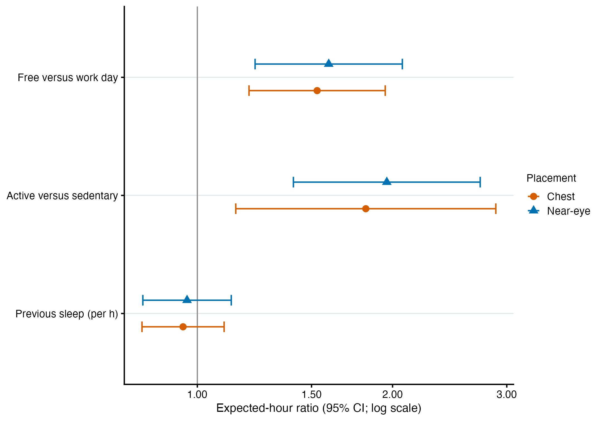
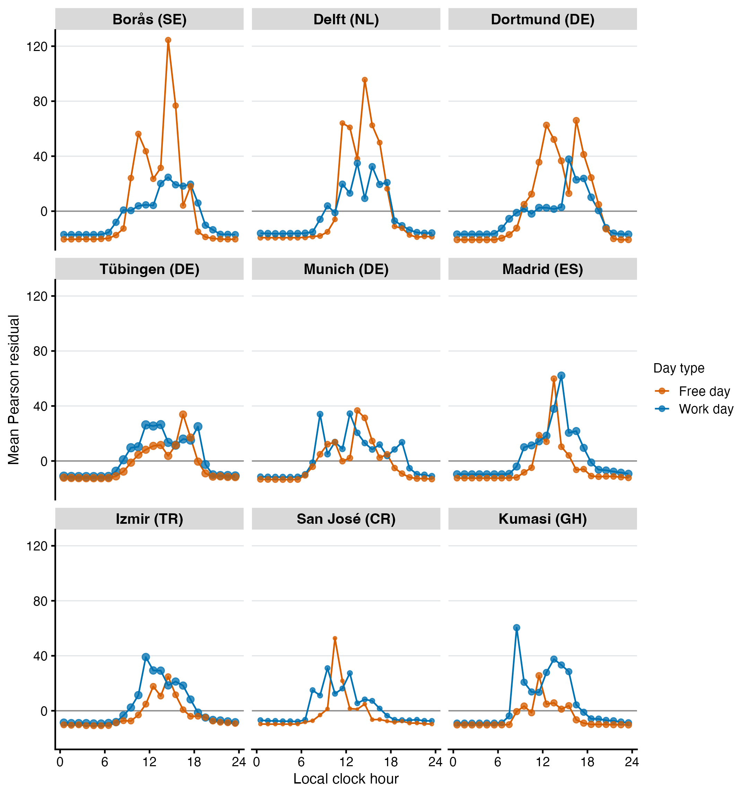

source("scripts/project.R")
analysis_setup()
source("scripts/pipeline/paths_io.R")
source("scripts/pipeline/p_value_display.R")
source("scripts/hypotheses/H06/h06_contract.R")
source("scripts/hypotheses/H06/h06_modeling.R")
source("scripts/hypotheses/H06/h06_robust_modeling.R")
root <- normalizePath(Sys.getenv("QUARTO_PROJECT_DIR", unset = getwd()))
producer <- "analyses/H06-day-type-exercise-sleep.qmd"
options(stringsAsFactors = FALSE, scipen = 999, dplyr.summarise.inform = FALSE)
roots <- list(model_data = file.path(root,"results/intermediate/model_data/H06"), models = file.path(root,"results/models/H06"), diagnostics = file.path(root,"results/csv/diagnostics/H06"), tables = file.path(root,"results/tables/H06"), figures = file.path(root,"results/images/H06"), source_data = file.path(root,"results/csv/source_data/H06"))
invisible(lapply(roots, dir.create, recursive=TRUE, showWarnings=FALSE))
metadata <- list()
h06_write_csv <- function(data, path) {
write_csv_artifact(data, path, producer = producer)
invisible(path)
}
h06_write_rds <- function(object, path) {
write_rds_artifact(object, path, producer = producer)
invisible(path)
}H06: Day type, exercise, sleep, and personal light exposure
This analysis relates reported day type, exercise and previous-night sleep duration to mean hourly melanopic light exposure. It keeps the daily context predictors attached to their observed supported hours and treats the sensor placements separately.
Data and model guide
The diary preparation links work/free day, exercise status and the preceding eligible sleep interval to the hourly light datasets. The outcome is the zero-aware geometric mean melanopic EDI per supported participant-hour. It is an hourly outcome. Participant-days with more supported hours contribute more observations. Missing predictor or outcome support is removed before fitting.
No reported exercise defines Sedentary; light, moderate or vigorous exercise defines Active. Previous sleep duration is centred at eight hours. The sleep interval can start on the preceding calendar date or after midnight on the wake date; linkage uses the eligible interval rather than a calendar-date shortcut.
A quasi-Poisson log-mean model with fixed site estimates common associations for the three predictors. The working variance does not imply that illuminance is a Poisson-distributed count. Participant-cluster-robust covariance uses the HC3 correction. A separate predictor-by-site model estimates heterogeneous associations; site-average contrasts weight sites equally on the log scale before back-transformation. Common-effect tests, interaction tests and practical contrasts have separate FDR families. The analysis includes alternative working variances, common samples, preprocessing, employment eligibility and cluster influence. Nonlinear clock-time models and additional diary measures are exploratory. Residual and support checks remain part of the interpretation.
The executable sections below write fitted objects to results/models/H06/, reader tables to results/tables/H06/, and the supporting numerical and figure outputs under results/. Start with the calculations below or jump to findings and interpretation.
Setup
Helpers specify diary alignment, hour-level samples, marginal mean models and participant-clustered inference.
Link diary context to hourly exposure
Link each supported hour to work/free-day status, reported exercise and the preceding night of sleep. Build paired-sensor and alternative-preprocessing samples, including the exact common-hour sensitivity.
h06_validate_contract()
input_contract <- h06_input_contract(root)
site_registry <- readr::read_csv(
file.path(root, "config/site_display_registry.csv"),
show_col_types = FALSE
) |>
dplyr::arrange(.data$display_order)
site_levels <- site_registry$site
input_path <- function(role) {
input_contract$path[input_contract$input_role == role]
}
near_main <- readRDS(input_path("primary_near_eye_hourly"))
chest_main <- readRDS(input_path("complementary_chest_hourly"))
gap_hour <- readRDS(input_path("gap_timing_unaware_hourly"))
exercise_raw <- readRDS(input_path("normalized_exercise_diary"))
sleep_raw <- readRDS(input_path("normalized_sleep_diary"))
temporal_raw <- readr::read_csv(
input_path("temporal_provenance"),
col_types = readr::cols(.default = readr::col_character()),
show_col_types = FALSE
)
prepared <- h06_build_run_frames(
near_main = near_main,
chest_main = chest_main,
gap_hour = gap_hour,
exercise_raw = exercise_raw,
sleep_raw = sleep_raw,
temporal_raw = temporal_raw,
site_levels = site_levels
)
run_registry <- h06_run_registry()
gap_common_by_placement <- stats::setNames(
lapply(c("glasses", "chest"), function(placement) {
h06_exact_common_hour_frames(
prepared$runs[[paste0("main__", placement, "__all_available")]],
prepared$runs[[paste0(
"gap_timing_unaware__", placement, "__all_available"
)]]
)
}),
c("glasses", "chest")
)
gap_common_frames <- list(
main__glasses__gap_exact_common =
gap_common_by_placement$glasses$reference,
gap_timing_unaware__glasses__gap_exact_common =
gap_common_by_placement$glasses$alternative,
main__chest__gap_exact_common =
gap_common_by_placement$chest$reference,
gap_timing_unaware__chest__gap_exact_common =
gap_common_by_placement$chest$alternative
)
gap_common_samples <- dplyr::bind_rows(lapply(
names(gap_common_by_placement),
function(placement) {
gap_common_by_placement[[placement]]$summary |>
dplyr::mutate(placement = placement, .before = 1L)
}
))
sample_summary <- dplyr::bind_rows(lapply(seq_len(nrow(run_registry)), function(index) {
run_id <- run_registry$run_id[[index]]
h06_sample_summary(prepared$runs[[run_id]], run_id)
})) |>
dplyr::left_join(run_registry, by = "run_id", relationship = "one-to-one") |>
dplyr::arrange(.data$run_order)
category_cells <- dplyr::bind_rows(lapply(names(prepared$runs), function(run_id) {
h06_category_cells(prepared$runs[[run_id]], run_id)
}))
design_diagnostics <- dplyr::bind_rows(lapply(names(prepared$runs), function(run_id) {
h06_design_diagnostics(prepared$runs[[run_id]], run_id)
}))
sequence_summary <- dplyr::bind_rows(lapply(names(prepared$runs), function(run_id) {
prepared$runs[[run_id]] |>
dplyr::summarise(
one_hour_observations = dplyr::n(),
irregular_elapsed_bins = sum(.data$irregular_elapsed_bin),
sequence_starts = sum(.data$AR_start),
true_time_sequences = dplyr::n_distinct(.data$hour_sequence_id),
maximum_sequence_hours = max(.data$hour_sequence_position),
non_3600_second_rows = sum(abs(.data$interval_seconds - 3600) > 1e-6),
.by = "data_scenario_id"
) |>
dplyr::mutate(run_id = run_id, .before = 1L)
}))
clock_composition <- dplyr::bind_rows(lapply(names(prepared$runs), function(run_id) {
prepared$runs[[run_id]] |>
dplyr::mutate(clock_hour_bin = floor(.data$clock_hour)) |>
dplyr::summarise(
one_hour_observations = dplyr::n(),
participant_days = dplyr::n_distinct(.data$participant_day_key),
participants = dplyr::n_distinct(.data$participant_key),
.by = c("site", "work_free_day", "activity_status", "clock_hour_bin")
) |>
dplyr::mutate(run_id = run_id, .before = 1L)
}))
candidate_flow_objects <- list(
main__glasses = h06_candidate_flow(near_main, "glasses", "main", prepared$diaries),
main__chest = h06_candidate_flow(chest_main, "chest", "main", prepared$diaries),
gap_timing_unaware__glasses = h06_candidate_flow(
gap_hour, "glasses", "gap_timing_unaware", prepared$diaries
),
gap_timing_unaware__chest = h06_candidate_flow(
gap_hour, "chest", "gap_timing_unaware", prepared$diaries
)
)
candidate_flow <- dplyr::bind_rows(lapply(candidate_flow_objects, `[[`, "flow"))
candidate_missingness <- dplyr::bind_rows(lapply(candidate_flow_objects, `[[`, "fields"))
sleep_linkage <- h06_sleep_linkage_audit(sleep_raw)
h06_write_csv(sample_summary, file.path(roots$model_data, "H06_exact_samples.csv"))
h06_write_csv(category_cells, file.path(roots$model_data, "H06_category_cells.csv"))
h06_write_csv(design_diagnostics, file.path(roots$model_data, "H06_design_diagnostics.csv"))
h06_write_csv(sequence_summary, file.path(roots$model_data, "H06_true_time_sequences.csv"))
h06_write_csv(clock_composition, file.path(roots$model_data, "H06_clock_composition.csv"))
h06_write_csv(candidate_flow, file.path(roots$model_data, "H06_candidate_flow.csv"))
h06_write_csv(candidate_missingness, file.path(roots$model_data, "H06_candidate_missingness.csv"))
h06_write_csv(sleep_linkage, file.path(roots$model_data, "H06_previous_night_linkage_audit.csv"))
h06_write_csv(
prepared$diaries$sedentary_reinterpreted,
file.path(roots$model_data, "H06_KNUST_S005_exploratory_adapter.csv")
)
h06_write_csv(h06_predictor_registry(), file.path(roots$model_data, "H06_predictor_registry.csv"))
h06_write_csv(run_registry, file.path(roots$model_data, "H06_run_registry.csv"))
h06_write_csv(
gap_common_samples,
file.path(roots$model_data, "H06_gap_exact_common_samples.csv")
)
h06_write_csv(h06_multiplicity_registry(), file.path(roots$model_data, "H06_multiplicity_registry.csv"))
invisible(lapply(names(prepared$runs), function(run_id) {
h06_write_rds(
prepared$runs[[run_id]],
file.path(roots$model_data, paste0(run_id, "__frame.rds"))
)
}))
invisible(lapply(names(gap_common_frames), function(run_id) {
h06_write_rds(
gap_common_frames[[run_id]],
file.path(roots$model_data, paste0(run_id, "__frame.rds"))
)
}))
sample_summary# A tibble: 6 × 15
run_id one_hour_observations participant_days participants sites
<chr> <int> <int> <int> <int>
1 main__glasses__all_… 16596 715 137 9
2 main__chest__all_av… 18352 789 149 8
3 main__glasses__pair… 12842 553 109 8
4 main__chest__paired… 12842 553 109 8
5 gap_timing_unaware_… 16329 702 137 9
6 gap_timing_unaware_… 18112 777 149 8
# ℹ 10 more variables: true_time_sequences <int>,
# minimum_supported_hours_per_day <int>,
# median_supported_hours_per_day <dbl>,
# maximum_supported_hours_per_day <int>, run_order <int>,
# data_scenario_id <chr>, placement <chr>, sample_scenario <chr>,
# analytical_role <chr>, fit_comparisons <lgl>category_cells# A tibble: 200 × 7
run_id cell_type site category one_hour_observations participant_days
<chr> <chr> <chr> <chr> <int> <int>
1 main__glasse… work_fre… BAUA Work day 1204 52
2 main__glasse… work_fre… BAUA Free day 840 36
3 main__glasse… work_fre… FUSP… Work day 1340 57
4 main__glasse… work_fre… FUSP… Free day 702 30
5 main__glasse… work_fre… IZTE… Work day 1470 63
6 main__glasse… work_fre… IZTE… Free day 765 33
7 main__glasse… work_fre… KNUST Work day 916 40
8 main__glasse… work_fre… KNUST Free day 923 40
9 main__glasse… work_fre… MPI Work day 1994 86
10 main__glasse… work_fre… MPI Free day 1430 62
# ℹ 190 more rows
# ℹ 1 more variable: participants <int>Fit the primary population-average models
Fit additive and site-interaction quasi-likelihood models. The primary variance power is one, with participant-clustered sandwich covariance. Estimate equal-site-weight contrasts for day type, exercise and one hour of previous-night sleep.
formulas <- h06_formula_set()
core_path <- file.path(roots$models, "H06_robust_core_models.rds")
core_models <- list(
runs = stats::setNames(lapply(names(prepared$runs), function(run_id) {
frame <- prepared$runs[[run_id]]
list(
additive = h06_fit_marginal(frame, formulas$additive, working_power = 1),
full = h06_fit_marginal(frame, formulas$full, working_power = 1)
)
}), names(prepared$runs))
)
h06_write_rds(core_models, core_path)
fit_diagnostics <- list()
covariance_diagnostics <- list()
cluster_diagnostics <- list()
core_effects <- list()
site_effects <- list()
reference_means <- list()
residual_calibration <- list()
residual_bins <- list()
residual_clock <- list()
residual_acf <- list()
residual_rows <- list()
response_distribution <- list()
for (run_id in names(core_models$runs)) {
frame <- prepared$runs[[run_id]]
for (model_role in c("additive", "full")) {
bundle <- core_models$runs[[run_id]][[model_role]]
fit_diagnostics[[paste(run_id, model_role, sep = "__")]] <-
h06_fit_diagnostics_robust(bundle, run_id, model_role)
covariance_diagnostics[[paste(run_id, model_role, sep = "__")]] <-
h06_covariance_diagnostic_rows(bundle, run_id, model_role)
cluster_diagnostics[[paste(run_id, model_role, sep = "__")]] <-
h06_cluster_diagnostics(bundle, run_id, model_role)
}
additive <- core_models$runs[[run_id]]$additive
full <- core_models$runs[[run_id]]$full
core_effects[[run_id]] <- dplyr::bind_rows(
h06_core_estimands(additive, run_id, distribution = "equal_site"),
h06_core_estimands(additive, run_id, distribution = "observed_sample")
)
site_effects[[run_id]] <- h06_core_estimands(
full,
run_id,
model_role = "full",
distribution = "equal_site",
site_specific = TRUE
)
reference_means[[run_id]] <- dplyr::bind_rows(
h06_reference_mean(additive, run_id, distribution = "equal_site"),
h06_reference_mean(additive, run_id, distribution = "observed_sample")
)
residual <- h06_residual_outputs(additive, run_id, "additive")
residual_calibration[[run_id]] <- residual$calibration
residual_bins[[run_id]] <- residual$fitted_bins
residual_clock[[run_id]] <- residual$clock
residual_acf[[run_id]] <- residual$acf
residual_rows[[run_id]] <- residual$row_source
response_distribution[[run_id]] <- frame |>
dplyr::summarise(
observations = dplyr::n(),
exact_zero_hours = sum(.data$response_value == 0),
exact_zero_fraction = mean(.data$response_value == 0),
minimum = min(.data$response_value),
q01 = unname(stats::quantile(.data$response_value, 0.01)),
median = stats::median(.data$response_value),
q99 = unname(stats::quantile(.data$response_value, 0.99)),
maximum = max(.data$response_value)
) |>
dplyr::mutate(run_id = run_id, .before = 1L)
}
fit_diagnostics <- dplyr::bind_rows(fit_diagnostics)
covariance_diagnostics <- dplyr::bind_rows(covariance_diagnostics)
cluster_diagnostics <- dplyr::bind_rows(cluster_diagnostics)
core_effects <- dplyr::bind_rows(core_effects)
site_effects <- dplyr::bind_rows(site_effects)
reference_means <- dplyr::bind_rows(reference_means)
main_tests <- h06_primary_tests(
core_models$runs$main__glasses__all_available$additive,
core_models$runs$main__glasses__all_available$full,
"main__glasses__all_available",
"H06-F1-main",
"H06-F2-heterogeneity"
)
gap_tests <- h06_primary_tests(
core_models$runs$gap_timing_unaware__glasses__all_available$additive,
core_models$runs$gap_timing_unaware__glasses__all_available$full,
"gap_timing_unaware__glasses__all_available",
"H06-F1-gap",
"H06-F2-gap"
)
wald_tests <- dplyr::bind_rows(
main_tests$main,
main_tests$heterogeneity,
gap_tests$main,
gap_tests$heterogeneity
)
f3 <- core_effects |>
dplyr::filter(
.data$run_id == "main__glasses__all_available",
.data$distribution == "equal_site"
) |>
h06_f3_family()
main_effect_p <- main_tests$main |>
dplyr::select(.data$run_id, .data$predictor_id, .data$family_id, .data$p_adjusted)
gap_effect_p <- gap_tests$main |>
dplyr::select(.data$run_id, .data$predictor_id, .data$family_id, .data$p_adjusted)
core_effects <- core_effects |>
dplyr::left_join(
dplyr::bind_rows(main_effect_p, gap_effect_p),
by = c("run_id", "predictor_id"),
relationship = "many-to-one"
)
h06_write_csv(fit_diagnostics, file.path(roots$diagnostics, "H06_robust_fit_diagnostics.csv"))
h06_write_csv(
covariance_diagnostics,
file.path(roots$diagnostics, "H06_robust_covariance_diagnostics.csv")
)
h06_write_csv(
cluster_diagnostics,
file.path(roots$diagnostics, "H06_robust_cluster_influence.csv")
)
h06_write_csv(
dplyr::bind_rows(residual_calibration),
file.path(roots$diagnostics, "H06_robust_fitted_decile_calibration.csv")
)
h06_write_csv(
dplyr::bind_rows(residual_bins),
file.path(roots$diagnostics, "H06_robust_residual_fitted_bins.csv")
)
h06_write_csv(
dplyr::bind_rows(residual_clock),
file.path(roots$diagnostics, "H06_robust_residuals_by_local_clock.csv")
)
h06_write_csv(
dplyr::bind_rows(residual_acf),
file.path(roots$diagnostics, "H06_robust_residual_acf.csv")
)
h06_write_csv(
dplyr::bind_rows(response_distribution),
file.path(roots$diagnostics, "H06_robust_response_distribution.csv")
)
h06_write_csv(
dplyr::bind_rows(residual_rows),
file.path(roots$source_data, "H06_robust_residual_row_source.csv")
)
h06_write_csv(wald_tests, file.path(roots$tables, "H06_robust_wald_tests.csv"))
h06_write_csv(core_effects, file.path(roots$tables, "H06_robust_core_effects.csv"))
h06_write_csv(site_effects, file.path(roots$tables, "H06_robust_site_specific_effects.csv"))
h06_write_csv(reference_means, file.path(roots$tables, "H06_robust_reference_means.csv"))
h06_write_csv(f3, file.path(roots$tables, "H06_robust_F3_practical_contrasts.csv"))
f3# A tibble: 3 × 25
run_id model_role predictor_id effect_id distribution covariance_type
<chr> <chr> <chr> <chr> <chr> <chr>
1 main__glasses_… additive work_free_d… free_vs_… equal_site HC3
2 main__glasses_… additive activity_st… active_v… equal_site HC3
3 main__glasses_… additive previous_sl… per_hour… equal_site HC3
# ℹ 19 more variables: site_specific <lgl>, site <chr>, log_estimate <dbl>,
# log_standard_error <dbl>, estimate_ratio <dbl>, conf_low_ratio <dbl>,
# conf_high_ratio <dbl>, statistic <dbl>, denominator_df <int>, p_raw <dbl>,
# status <chr>, family_id <chr>, family_member <int>, test_role <chr>,
# planned_size <int>, available_rank <int>, adjustment_method <chr>,
# p_adjusted <dbl>, adjusted_significant_0_05 <lgl>wald_tests# A tibble: 12 × 21
run_id family_id family_member test_role predictor_id tested_term
<chr> <chr> <int> <chr> <chr> <chr>
1 main__glasses__al… H06-F1-m… 1 additive… work_free_d… work_free_…
2 main__glasses__al… H06-F1-m… 2 additive… activity_st… activity_s…
3 main__glasses__al… H06-F1-m… 3 additive… previous_sl… previous_s…
4 main__glasses__al… H06-F2-h… 1 site_het… work_free_d… site:work_…
5 main__glasses__al… H06-F2-h… 2 site_het… activity_st… site:activ…
6 main__glasses__al… H06-F2-h… 3 site_het… previous_sl… site:previ…
7 gap_timing_unawar… H06-F1-g… 1 additive… work_free_d… work_free_…
8 gap_timing_unawar… H06-F1-g… 2 additive… activity_st… activity_s…
9 gap_timing_unawar… H06-F1-g… 3 additive… previous_sl… previous_s…
10 gap_timing_unawar… H06-F2-g… 1 site_het… work_free_d… site:work_…
11 gap_timing_unawar… H06-F2-g… 2 site_het… activity_st… site:activ…
12 gap_timing_unawar… H06-F2-g… 3 site_het… previous_sl… site:previ…
# ℹ 15 more variables: covariance_type <chr>, restrictions <int>,
# clusters <int>, denominator_df <int>, wald_chisq <dbl>, f_statistic <dbl>,
# p_raw <dbl>, covariance_minimum_eigenvalue <dbl>,
# covariance_condition_number <dbl>, status <chr>, planned_size <int>,
# available_rank <int>, adjustment_method <chr>, p_adjusted <dbl>,
# adjusted_significant_0_05 <lgl>Assess scientific sensitivities
Compare the primary estimates with working variance power 1.8, alternative covariance estimators, weekday/weekend coding, observed-sample weighting, exact common-hour preprocessing and placement comparisons. Additional diary measures remain exploratory.
p18_path <- file.path(roots$models, "H06_robust_p18_models.rds")
p18_models <- list(
runs = stats::setNames(lapply(names(prepared$runs), function(run_id) {
frame <- prepared$runs[[run_id]]
list(
additive = h06_fit_marginal(frame, formulas$additive, working_power = 1.8),
full = h06_fit_marginal(frame, formulas$full, working_power = 1.8)
)
}), names(prepared$runs))
)
h06_write_rds(p18_models, p18_path)
p18_diagnostics <- dplyr::bind_rows(lapply(names(p18_models$runs), function(run_id) {
dplyr::bind_rows(
h06_fit_diagnostics_robust(p18_models$runs[[run_id]]$additive, run_id, "p18_additive"),
h06_fit_diagnostics_robust(p18_models$runs[[run_id]]$full, run_id, "p18_full")
)
}))
p18_effects <- dplyr::bind_rows(lapply(names(p18_models$runs), function(run_id) {
h06_core_estimands(
p18_models$runs[[run_id]]$additive,
run_id,
model_role = "p18_additive",
distribution = "equal_site"
)
}))
p18_main_tests <- h06_primary_tests(
p18_models$runs$main__glasses__all_available$additive,
p18_models$runs$main__glasses__all_available$full,
"main__glasses__all_available",
"H06-F1-main",
"H06-F2-heterogeneity"
)
p18_gap_tests <- h06_primary_tests(
p18_models$runs$gap_timing_unaware__glasses__all_available$additive,
p18_models$runs$gap_timing_unaware__glasses__all_available$full,
"gap_timing_unaware__glasses__all_available",
"H06-F1-gap",
"H06-F2-gap"
)
p18_tests <- dplyr::bind_rows(
p18_main_tests$main,
p18_main_tests$heterogeneity,
p18_gap_tests$main,
p18_gap_tests$heterogeneity
) |>
dplyr::mutate(sensitivity_role = "fixed_working_power_p1_8_no_new_family")
p18_main_effect_p <- p18_main_tests$main |>
dplyr::select(.data$run_id, .data$predictor_id, .data$p_adjusted)
p18_gap_effect_p <- p18_gap_tests$main |>
dplyr::select(.data$run_id, .data$predictor_id, .data$p_adjusted)
p18_effects <- p18_effects |>
dplyr::left_join(
dplyr::bind_rows(p18_main_effect_p, p18_gap_effect_p),
by = c("run_id", "predictor_id"),
relationship = "many-to-one"
)
gap_common_path <- file.path(
roots$models,
"H06_robust_gap_exact_common_models.rds"
)
gap_common_models <- list(
runs = stats::setNames(lapply(names(gap_common_frames), function(run_id) {
frame <- gap_common_frames[[run_id]]
list(
additive = h06_fit_marginal(
frame,
formulas$additive,
working_power = 1
),
full = h06_fit_marginal(
frame,
formulas$full,
working_power = 1
)
)
}), names(gap_common_frames))
)
h06_write_rds(gap_common_models, gap_common_path)
gap_common_diagnostics <- dplyr::bind_rows(lapply(
names(gap_common_models$runs),
function(run_id) {
dplyr::bind_rows(
h06_fit_diagnostics_robust(
gap_common_models$runs[[run_id]]$additive,
run_id,
"gap_exact_common_additive"
),
h06_fit_diagnostics_robust(
gap_common_models$runs[[run_id]]$full,
run_id,
"gap_exact_common_full"
)
)
}
))
gap_common_effects <- dplyr::bind_rows(lapply(
names(gap_common_models$runs),
function(run_id) {
h06_core_estimands(
gap_common_models$runs[[run_id]]$additive,
run_id,
model_role = "gap_exact_common_additive",
distribution = "equal_site"
)
}
))
gap_common_main_tests <- h06_primary_tests(
gap_common_models$runs$main__glasses__gap_exact_common$additive,
gap_common_models$runs$main__glasses__gap_exact_common$full,
"main__glasses__gap_exact_common",
"H06-F1-main",
"H06-F2-heterogeneity"
)
gap_common_alternative_tests <- h06_primary_tests(
gap_common_models$runs$gap_timing_unaware__glasses__gap_exact_common$additive,
gap_common_models$runs$gap_timing_unaware__glasses__gap_exact_common$full,
"gap_timing_unaware__glasses__gap_exact_common",
"H06-F1-gap",
"H06-F2-gap"
)
gap_common_tests <- dplyr::bind_rows(
gap_common_main_tests$main,
gap_common_main_tests$heterogeneity,
gap_common_alternative_tests$main,
gap_common_alternative_tests$heterogeneity
) |>
dplyr::mutate(
sensitivity_role = "exact_common_hour_refit_no_new_family"
)
gap_common_effect_p <- dplyr::bind_rows(
gap_common_main_tests$main,
gap_common_alternative_tests$main
) |>
dplyr::select(.data$run_id, .data$predictor_id, .data$p_adjusted)
gap_common_effects <- gap_common_effects |>
dplyr::left_join(
gap_common_effect_p,
by = c("run_id", "predictor_id"),
relationship = "many-to-one"
)
primary_additive <- core_models$runs$main__glasses__all_available$additive
covariance_effects <- dplyr::bind_rows(lapply(c("HC0", "HC1", "HC2", "HC3"), function(type) {
h06_core_estimands(
primary_additive,
"main__glasses__all_available",
covariance_type = type
)
}))
weekend_bundle <- h06_fit_marginal(
prepared$runs$main__glasses__all_available,
formulas$weekend_additive,
working_power = 1
)
weekend_effects <- dplyr::bind_rows(
h06_standardized_contrast(
weekend_bundle,
"weekday_weekend",
high = "Weekend",
low = "Weekday"
) |>
dplyr::mutate(predictor_id = "weekday_weekend", effect_id = "weekend_vs_weekday"),
h06_standardized_contrast(
weekend_bundle,
"activity_status",
high = h06_activity_levels()[[2L]],
low = h06_activity_levels()[[1L]]
) |>
dplyr::mutate(predictor_id = "activity_status", effect_id = "active_vs_sedentary"),
h06_standardized_contrast(
weekend_bundle,
"previous_sleep_duration_centered_h",
increment = 1
) |>
dplyr::mutate(
predictor_id = "previous_sleep_duration_centered_h",
effect_id = "per_hour_previous_sleep"
)
) |>
dplyr::mutate(
run_id = "main__glasses__all_available",
sensitivity_role = "weekday_weekend_estimate_CI_no_new_family",
statistic = NA_real_,
p_raw = NA_real_,
.before = 1L
)
primary_equal <- core_effects |>
dplyr::filter(
.data$run_id == "main__glasses__all_available",
.data$distribution == "equal_site"
)
gap_equal <- core_effects |>
dplyr::filter(
.data$run_id == "gap_timing_unaware__glasses__all_available",
.data$distribution == "equal_site"
)
main_gap_common_equal <- gap_common_effects |>
dplyr::filter(.data$run_id == "main__glasses__gap_exact_common")
alternative_gap_common_equal <- gap_common_effects |>
dplyr::filter(
.data$run_id ==
"gap_timing_unaware__glasses__gap_exact_common"
)
p18_primary <- p18_effects |>
dplyr::filter(.data$run_id == "main__glasses__all_available")
hc1_primary <- covariance_effects |>
dplyr::filter(.data$covariance_type == "HC1")
hc2_primary <- covariance_effects |>
dplyr::filter(.data$covariance_type == "HC2")
primary_observed <- core_effects |>
dplyr::filter(
.data$run_id == "main__glasses__all_available",
.data$distribution == "observed_sample"
)
paired_near <- core_effects |>
dplyr::filter(
.data$run_id == "main__glasses__paired_common",
.data$distribution == "equal_site"
)
paired_chest <- core_effects |>
dplyr::filter(
.data$run_id == "main__chest__paired_common",
.data$distribution == "equal_site"
)
chest_all <- core_effects |>
dplyr::filter(
.data$run_id == "main__chest__all_available",
.data$distribution == "equal_site"
)
sensitivity_comparisons <- dplyr::bind_rows(
h06_compare_effect_sets(
primary_equal,
gap_equal,
"primary_vs_gap_timing_unaware_all_available"
),
h06_compare_effect_sets(
main_gap_common_equal,
alternative_gap_common_equal,
"primary_vs_gap_timing_unaware_exact_common_hours"
),
h06_compare_effect_sets(
primary_equal,
main_gap_common_equal,
"primary_all_available_vs_primary_exact_common_hours"
),
h06_compare_effect_sets(
gap_equal,
alternative_gap_common_equal,
"gap_all_available_vs_gap_exact_common_hours"
),
h06_compare_effect_sets(primary_equal, p18_primary, "quasi_poisson_vs_fixed_p1_8"),
h06_compare_effect_sets(primary_equal, hc1_primary, "HC3_vs_HC1"),
h06_compare_effect_sets(primary_equal, hc2_primary, "HC3_vs_HC2"),
h06_compare_effect_sets(primary_equal, primary_observed, "equal_site_vs_observed_sample"),
h06_compare_effect_sets(primary_equal, chest_all, "near_eye_vs_chest_all_available"),
h06_compare_effect_sets(paired_near, paired_chest, "paired_common_near_eye_vs_chest")
)
exploratory_path <- file.path(roots$models, "H06_robust_exploratory_models.rds")
exploratory_frames <- stats::setNames(lapply(names(h06_exploratory_formula_set()), function(id) {
h06_exploratory_frame(prepared$runs$main__glasses__all_available, id)
}), names(h06_exploratory_formula_set()))
exploratory_models <- list(
analyses = stats::setNames(lapply(names(exploratory_frames), function(id) {
h06_fit_marginal(
exploratory_frames[[id]],
h06_exploratory_formula_set()[[id]],
working_power = 1
)
}), names(exploratory_frames))
)
h06_write_rds(exploratory_models, exploratory_path)
exploratory_effects <- dplyr::bind_rows(lapply(names(exploratory_models$analyses), function(id) {
h06_exploratory_estimands(exploratory_models$analyses[[id]], id)
}))
exploratory_samples <- dplyr::bind_rows(lapply(names(exploratory_frames), function(id) {
h06_sample_summary(exploratory_frames[[id]], paste0("exploratory__", id)) |>
dplyr::mutate(analysis_id = id, inferential_role = "exploratory")
}))
exploratory_diagnostics <- dplyr::bind_rows(lapply(names(exploratory_models$analyses), function(id) {
h06_fit_diagnostics_robust(
exploratory_models$analyses[[id]],
paste0("exploratory__", id),
"exploratory"
)
}))
h06_write_csv(p18_diagnostics, file.path(roots$diagnostics, "H06_robust_p18_fit_diagnostics.csv"))
h06_write_csv(
gap_common_diagnostics,
file.path(
roots$diagnostics,
"H06_robust_gap_exact_common_fit_diagnostics.csv"
)
)
h06_write_csv(exploratory_diagnostics, file.path(roots$diagnostics, "H06_robust_exploratory_diagnostics.csv"))
h06_write_csv(p18_effects, file.path(roots$tables, "H06_robust_p18_effects.csv"))
h06_write_csv(p18_tests, file.path(roots$tables, "H06_robust_p18_wald_tests.csv"))
h06_write_csv(
gap_common_effects,
file.path(roots$tables, "H06_robust_gap_exact_common_effects.csv")
)
h06_write_csv(
gap_common_tests,
file.path(roots$tables, "H06_robust_gap_exact_common_wald_tests.csv")
)
h06_write_csv(covariance_effects, file.path(roots$tables, "H06_robust_covariance_effects.csv"))
h06_write_csv(weekend_effects, file.path(roots$tables, "H06_robust_weekday_weekend_effects.csv"))
h06_write_csv(sensitivity_comparisons, file.path(roots$tables, "H06_robust_sensitivity_comparisons.csv"))
h06_write_csv(exploratory_effects, file.path(roots$tables, "H06_robust_exploratory_effects.csv"))
h06_write_csv(exploratory_samples, file.path(roots$model_data, "H06_exploratory_predictor_samples.csv"))
sensitivity_comparisons# A tibble: 30 × 22
comparison_id predictor_id reference_log_estimate reference_log_se
<chr> <chr> <dbl> <dbl>
1 primary_vs_gap_timing_u… work_free_d… 0.372 0.123
2 primary_vs_gap_timing_u… activity_st… 0.724 0.148
3 primary_vs_gap_timing_u… previous_sl… -0.0225 0.0689
4 primary_vs_gap_timing_u… work_free_d… 0.362 0.118
5 primary_vs_gap_timing_u… activity_st… 0.725 0.147
6 primary_vs_gap_timing_u… previous_sl… -0.0389 0.0655
7 primary_all_available_v… work_free_d… 0.372 0.123
8 primary_all_available_v… activity_st… 0.724 0.148
9 primary_all_available_v… previous_sl… -0.0225 0.0689
10 gap_all_available_vs_ga… work_free_d… 0.365 0.118
# ℹ 20 more rows
# ℹ 18 more variables: reference_log_low <dbl>, reference_log_high <dbl>,
# reference_ratio <dbl>, reference_conf_low <dbl>, reference_conf_high <dbl>,
# reference_p_adjusted <dbl>, alternative_log_estimate <dbl>,
# alternative_log_low <dbl>, alternative_log_high <dbl>,
# alternative_ratio <dbl>, alternative_conf_low <dbl>,
# alternative_conf_high <dbl>, alternative_p_adjusted <dbl>, …Assess participant and site influence
Use the planned influence refits to identify conclusions that depend on individual clusters or extreme exploratory records.
influence_path <- file.path(roots$models, "H06_robust_influence_deletions.rds")
influence_object <- list(
results = h06_deletion_battery(
prepared$runs$main__glasses__all_available,
core_models$runs$main__glasses__all_available$additive,
core_models$runs$main__glasses__all_available$full
)
)
h06_write_rds(influence_object, influence_path)
influence_deletions <- influence_object$results
extreme_exploratory_records <- h06_extreme_exploratory_records(
prepared$runs$main__glasses__all_available
)
h06_write_csv(
influence_deletions,
file.path(roots$diagnostics, "H06_robust_influence_deletions.csv")
)
h06_write_csv(
extreme_exploratory_records,
file.path(roots$diagnostics, "H06_extreme_exploratory_records.csv")
)
influence_deletions# A tibble: 48 × 21
deletion_type deletion_unit observations participants sites
<chr> <chr> <int> <int> <int>
1 participant BAUA::BAUA_S012 16465 136 9
2 participant BAUA::BAUA_S012 16465 136 9
3 participant BAUA::BAUA_S012 16465 136 9
4 participant BAUA::BAUA_S009 16456 136 9
5 participant BAUA::BAUA_S009 16456 136 9
6 participant BAUA::BAUA_S009 16456 136 9
7 participant RISE::RISE_S012 16428 136 9
8 participant RISE::RISE_S012 16428 136 9
9 participant RISE::RISE_S012 16428 136 9
10 participant RISE::RISE_S002 16455 136 9
# ℹ 38 more rows
# ℹ 16 more variables: additive_converged <lgl>, additive_full_rank <lgl>,
# additive_hc3_positive_definite <lgl>, full_converged <lgl>,
# full_design_full_rank <lgl>, full_hc3_positive_definite <lgl>,
# full_hc3_condition_number <dbl>, log_estimate_shift <dbl>,
# absolute_shift_full_hc3_se <dbl>, predictor_id <chr>,
# full_log_estimate <dbl>, full_log_standard_error <dbl>, …Employment eligibility sensitivity
Restrict the near-eye sample to participants whose employment status makes the work/free-day interpretation applicable. Retain the same outcome, factor reference levels and model formulas, then compare the estimates and site interactions.
scenario_id <- "H06-S-EMP-NE"
run_id <- "employment_eligible__glasses__all_available"
roots <- list(
model_data = file.path(
root,
"results/intermediate/model_data/H06/employment_eligibility_sensitivity"
),
models = file.path(
root,
"results/models/H06/employment_eligibility_sensitivity"
),
diagnostics = file.path(
root,
"results/csv/diagnostics/H06/employment_eligibility_sensitivity"
),
tables = file.path(
root,
"results/tables/H06/employment_eligibility_sensitivity"
),
figures = file.path(
root,
"results/images/H06/employment_eligibility_sensitivity"
),
source_data = file.path(
root,
"results/csv/source_data/H06/employment_eligibility_sensitivity"
)
)
input_contract <- tibble::tibble(input_role=c("primary_near_eye_frame","normalized_demographics","primary_contrasts","primary_tests","primary_site_summaries","site_display_registry"),path=file.path(root,c("results/intermediate/model_data/H06/main__glasses__all_available__frame.rds","results/intermediate/model_data/normalized_inputs/demographics.rds","results/tables/H06/H06_robust_F3_practical_contrasts.csv","results/tables/H06/H06_robust_wald_tests.csv","results/tables/H06/H06_robust_site_specific_effects.csv","config/site_display_registry.csv")))
input_path <- function(role) {
matches <- input_contract$path[input_contract$input_role == role]
if (length(matches) != 1L) {
h06_abort("The sensitivity input role `%s` is not unique", role)
}
matches
}
primary_frame <- readRDS(input_path("primary_near_eye_frame"))
demographics <- readRDS(input_path("normalized_demographics"))
primary_contrasts <- readr::read_csv(
input_path("primary_contrasts"),
show_col_types = FALSE,
na = ""
)
primary_tests <- readr::read_csv(
input_path("primary_tests"),
show_col_types = FALSE,
na = ""
)
primary_site_summaries <- readr::read_csv(
input_path("primary_site_summaries"),
show_col_types = FALSE,
na = ""
)
site_registry <- readr::read_csv(
input_path("site_display_registry"),
show_col_types = FALSE,
na = ""
) |>
dplyr::arrange(.data$display_order)
required_demographic_columns <- c("site", "Id", "employment_status")
missing_demographic_columns <- setdiff(
required_demographic_columns,
names(demographics)
)
if (length(missing_demographic_columns) > 0L) {
h06_abort(
"Normalized demographics lack required field(s): %s",
paste(missing_demographic_columns, collapse = ", ")
)
}
if (anyDuplicated(demographics[c("site", "Id")])) {
h06_abort("Normalized demographics contain duplicate site-participant keys")
}
participant_registry <- primary_frame |>
dplyr::distinct(.data$site, .data$Id, .data$participant_key) |>
dplyr::mutate(site = as.character(.data$site)) |>
dplyr::left_join(
demographics |>
dplyr::transmute(
site = as.character(.data$site),
.data$Id,
employment_status = as.character(.data$employment_status)
),
by = c("site", "Id"),
relationship = "many-to-one"
)
if (anyNA(participant_registry$employment_status)) {
h06_abort("At least one primary near-eye participant lacks employment status")
}
excluded_statuses <- c(
"Not employed",
"Marginally employed (Minijob)"
)
excluded_participants <- participant_registry |>
dplyr::filter(.data$employment_status %in% .env$excluded_statuses)
participant_key_hash <- function(key) {
vapply(
as.character(key),
digest::digest,
character(1),
algo = "sha256",
serialize = FALSE
)
}
excluded_key <- as.character(excluded_participants$participant_key)
remove_row <- as.character(primary_frame$participant_key) %in% excluded_key
excluded_hours <- sum(remove_row)
excluded_days <- dplyr::n_distinct(
primary_frame$participant_day_key[remove_row]
)
sensitivity_frame <- primary_frame |>
dplyr::filter(
!as.character(.data$participant_key) %in% .env$excluded_key
) |>
h06_refactor_frame()
expected_sample <- c(
observations = 15871L,
participant_days = 684L,
participants = 131L,
sites = 9L
)
observed_sample <- c(
observations = nrow(sensitivity_frame),
participant_days = dplyr::n_distinct(sensitivity_frame$participant_day_key),
participants = dplyr::n_distinct(sensitivity_frame$participant_key),
sites = dplyr::n_distinct(sensitivity_frame$site)
)
if (!identical(as.integer(observed_sample), as.integer(expected_sample))) {
h06_abort(
"The employment-eligible near-eye sample differs from the expected sample counts"
)
}
if (!identical(levels(sensitivity_frame$site), site_registry$site)) {
h06_abort("The employment sensitivity lost or reordered a study site")
}
if (!identical(
levels(sensitivity_frame$work_free_day),
levels(primary_frame$work_free_day)
)) {
h06_abort("The employment sensitivity changed the day-type factor levels")
}
if (!identical(
levels(sensitivity_frame$activity_status),
levels(primary_frame$activity_status)
)) {
h06_abort("The employment sensitivity changed the activity factor levels")
}
category_cells <- h06_category_cells(sensitivity_frame, run_id)
minimum_daytype_hours <- min(
category_cells$one_hour_observations[
category_cells$cell_type == "work_free_day"
]
)
minimum_activity_hours <- min(
category_cells$one_hour_observations[
category_cells$cell_type == "activity_status"
]
)
if (minimum_daytype_hours <= 0L || minimum_activity_hours <= 0L) {
h06_abort("An employment-sensitivity category has no supported hours")
}
design_diagnostics <- h06_design_diagnostics(sensitivity_frame, run_id)
if (!isTRUE(design_diagnostics$full_rank) ||
design_diagnostics$design_columns != 36L) {
h06_abort("The employment-sensitivity full model matrix is not full rank")
}
formulas <- h06_formula_set()
formula_registry <- tibble::tibble(
scenario_id = scenario_id,
model_role = c("additive", "full"),
wilkinson_formula = vapply(
formulas[c("additive", "full")],
h06_formula_text,
character(1)
),
family = "quasi-Poisson",
link = "log",
covariance = "participant-cluster HC3",
denominator_df = "number of participant clusters minus 1",
site_contrast = "contr.sum",
binary_predictor_contrast = "treatment, first level as reference"
)
additive <- h06_fit_marginal(
sensitivity_frame,
formulas$additive,
working_power = 1
)
full <- h06_fit_marginal(
sensitivity_frame,
formulas$full,
working_power = 1
)
fit_diagnostics <- dplyr::bind_rows(
h06_fit_diagnostics_robust(additive, run_id, "additive"),
h06_fit_diagnostics_robust(full, run_id, "full")
)
if (nrow(fit_diagnostics) != 2L ||
any(!fit_diagnostics$converged) ||
any(!fit_diagnostics$full_rank) ||
any(!fit_diagnostics$finite_coefficients) ||
any(!fit_diagnostics$hc3_covariance_finite) ||
any(!fit_diagnostics$hc3_covariance_positive_definite) ||
any(!fit_diagnostics$numerical_check_pass)) {
h06_abort("An employment-sensitivity model failed its numerical check")
}
covariance_diagnostics <- dplyr::bind_rows(
h06_covariance_diagnostic_rows(additive, run_id, "additive"),
h06_covariance_diagnostic_rows(full, run_id, "full")
)
if (nrow(covariance_diagnostics) != 8L ||
any(!covariance_diagnostics$finite) ||
any(!covariance_diagnostics$positive_definite)) {
h06_abort("An employment-sensitivity covariance failed its numerical check")
}
cluster_diagnostics <- dplyr::bind_rows(
h06_cluster_diagnostics(additive, run_id, "additive"),
h06_cluster_diagnostics(full, run_id, "full")
) |>
dplyr::mutate(
participant_key_sha256 = participant_key_hash(.data$participant_key)
) |>
dplyr::select(-.data$participant_key)
residual_outputs <- lapply(
c("additive", "full"),
function(model_role) {
bundle <- if (model_role == "additive") additive else full
h06_residual_outputs(bundle, run_id, model_role)
}
)
names(residual_outputs) <- c("additive", "full")
residual_calibration <- dplyr::bind_rows(lapply(
residual_outputs,
`[[`,
"calibration"
))
residual_fitted_bins <- dplyr::bind_rows(lapply(
residual_outputs,
`[[`,
"fitted_bins"
))
residual_clock <- dplyr::bind_rows(lapply(
residual_outputs,
`[[`,
"clock"
))
residual_acf <- dplyr::bind_rows(lapply(
residual_outputs,
`[[`,
"acf"
))
response_distribution <- sensitivity_frame |>
dplyr::summarise(
scenario_id = scenario_id,
run_id = run_id,
observations = dplyr::n(),
exact_zero_hours = sum(.data$response_value == 0),
exact_zero_fraction = mean(.data$response_value == 0),
minimum = min(.data$response_value),
q01 = unname(stats::quantile(.data$response_value, 0.01)),
median = stats::median(.data$response_value),
q99 = unname(stats::quantile(.data$response_value, 0.99)),
maximum = max(.data$response_value)
)
tests <- h06_primary_tests(
additive,
full,
run_id,
"H06-S-EMP-NE-main",
"H06-S-EMP-NE-heterogeneity"
)
wald_tests <- dplyr::bind_rows(tests$main, tests$heterogeneity) |>
dplyr::mutate(
scenario_id = scenario_id,
family_scope = dplyr::if_else(
.data$test_role == "additive_main_association",
"counterpart to the declared three-test primary near-eye family",
"counterpart to the declared three-test near-eye site-heterogeneity family"
),
.before = 1L
)
if (nrow(wald_tests) != 6L ||
any(table(wald_tests$family_id) != 3L) ||
any(wald_tests$status != "ESTIMABLE") ||
any(wald_tests$planned_size != 3L) ||
any(wald_tests$available_rank != 3L)) {
h06_abort("The employment sensitivity changed or failed a multiplicity family")
}
effects <- h06_core_estimands(
additive,
run_id,
distribution = "equal_site"
) |>
h06_f3_family() |>
dplyr::mutate(
scenario_id = scenario_id,
family_id = "H06-S-EMP-NE-practical-contrasts",
family_scope = "counterpart to the declared three practical near-eye contrasts",
.before = 1L
)
if (nrow(effects) != 3L ||
any(effects$status != "ESTIMABLE") ||
any(effects$planned_size != 3L) ||
any(effects$available_rank != 3L)) {
h06_abort("The employment-sensitivity practical contrasts are incomplete")
}
reference_mean <- h06_reference_mean(
additive,
run_id,
distribution = "equal_site"
) |>
dplyr::mutate(scenario_id = scenario_id, .before = 1L)
site_summaries <- h06_core_estimands(
full,
run_id,
model_role = "full",
distribution = "equal_site",
site_specific = TRUE
) |>
dplyr::transmute(
scenario_id = scenario_id,
.data$run_id,
.data$model_role,
.data$predictor_id,
.data$effect_id,
.data$site,
.data$log_estimate,
.data$log_standard_error,
.data$estimate_ratio,
.data$conf_low_ratio,
.data$conf_high_ratio,
.data$denominator_df,
.data$status,
inferential_role = paste(
"prespecified descriptive site-specific ratio and 95% CI;",
"no new multiplicity family"
)
)
if (nrow(site_summaries) != 27L ||
any(site_summaries$status != "ESTIMABLE")) {
h06_abort("The employment-sensitivity site-specific summaries are incomplete")
}
primary_equal <- primary_contrasts |>
dplyr::filter(
.data$run_id == "main__glasses__all_available",
.data$distribution == "equal_site"
)
if (nrow(primary_equal) != 3L) {
h06_abort("The primary contrast comparator does not contain three rows")
}
effect_comparison <- h06_compare_effect_sets(
primary_equal,
effects,
"primary_vs_employment_eligible_near_eye"
) |>
dplyr::mutate(
scenario_id = scenario_id,
detailed_stability_classification = .data$stability_classification,
stability_classification = dplyr::case_when(
.data$detailed_stability_classification ==
"stable within model uncertainty" ~ "stable",
.data$detailed_stability_classification %in%
c("precision-sensitive", "magnitude-sensitive") ~
"quantitatively sensitive",
.data$detailed_stability_classification %in%
c("direction-sensitive", "multiplicity-conclusion-sensitive") ~
"qualitatively sensitive",
.data$detailed_stability_classification == "non-estimable" ~
"non-estimable",
TRUE ~ "inconclusive"
),
.before = 1L
)
primary_heterogeneity <- primary_tests |>
dplyr::filter(
.data$run_id == "main__glasses__all_available",
.data$family_id == "H06-F2-heterogeneity"
) |>
dplyr::select(
.data$predictor_id,
primary_f_statistic = .data$f_statistic,
primary_df1 = .data$restrictions,
primary_df2 = .data$denominator_df,
primary_p_raw = .data$p_raw,
primary_p_adjusted = .data$p_adjusted,
primary_adjusted_supported = .data$adjusted_significant_0_05
)
sensitivity_heterogeneity <- tests$heterogeneity |>
dplyr::select(
.data$predictor_id,
sensitivity_f_statistic = .data$f_statistic,
sensitivity_df1 = .data$restrictions,
sensitivity_df2 = .data$denominator_df,
sensitivity_p_raw = .data$p_raw,
sensitivity_p_adjusted = .data$p_adjusted,
sensitivity_adjusted_supported = .data$adjusted_significant_0_05,
sensitivity_status = .data$status
)
heterogeneity_comparison <- dplyr::left_join(
primary_heterogeneity,
sensitivity_heterogeneity,
by = "predictor_id",
relationship = "one-to-one"
) |>
dplyr::mutate(
scenario_id = scenario_id,
adjusted_conclusion_changed =
.data$primary_adjusted_supported !=
.data$sensitivity_adjusted_supported,
interpretation_rule = paste(
"Assess together with site-specific magnitudes, intervals,",
"sample composition, and diagnostics; a p-value crossing alone",
"does not determine overall stability"
),
.before = 1L
)
if (nrow(heterogeneity_comparison) != 3L ||
any(heterogeneity_comparison$sensitivity_status != "ESTIMABLE")) {
h06_abort("The site-heterogeneity comparison is incomplete")
}
primary_sites <- primary_site_summaries |>
dplyr::filter(
.data$run_id == "main__glasses__all_available",
.data$model_role == "full",
.data$distribution == "equal_site",
.data$site_specific
) |>
dplyr::select(
.data$predictor_id,
.data$site,
primary_log_estimate = .data$log_estimate,
primary_log_standard_error = .data$log_standard_error,
primary_ratio = .data$estimate_ratio,
primary_conf_low = .data$conf_low_ratio,
primary_conf_high = .data$conf_high_ratio
)
site_comparison <- dplyr::left_join(
primary_sites,
site_summaries |>
dplyr::select(
.data$predictor_id,
.data$site,
sensitivity_log_estimate = .data$log_estimate,
sensitivity_log_standard_error = .data$log_standard_error,
sensitivity_ratio = .data$estimate_ratio,
sensitivity_conf_low = .data$conf_low_ratio,
sensitivity_conf_high = .data$conf_high_ratio
),
by = c("predictor_id", "site"),
relationship = "one-to-one"
) |>
dplyr::rowwise() |>
dplyr::mutate(
scenario_id = scenario_id,
log_estimate_difference =
.data$sensitivity_log_estimate - .data$primary_log_estimate,
detailed_stability_classification = h06_stability_class(
.data$primary_log_estimate,
log(.data$primary_conf_low),
log(.data$primary_conf_high),
.data$sensitivity_log_estimate,
log(.data$sensitivity_conf_low),
log(.data$sensitivity_conf_high)
),
.before = 1L
) |>
dplyr::ungroup()
if (nrow(site_comparison) != 27L || anyNA(site_comparison$sensitivity_ratio)) {
h06_abort("The site-specific primary-sensitivity comparison is incomplete")
}
primary_summary <- h06_sample_summary(
primary_frame,
"primary_near_eye"
)
sensitivity_summary <- h06_sample_summary(sensitivity_frame, run_id)
sample_flow <- dplyr::bind_rows(primary_summary, sensitivity_summary) |>
dplyr::mutate(
scenario_id = c("H06-primary-near-eye", scenario_id),
scenario_label = c(
"Current primary near-eye sample",
"Employment-eligible near-eye sample"
),
comparison_role = c("primary comparator", "sensitivity"),
retained_hour_fraction = .data$one_hour_observations /
primary_summary$one_hour_observations,
retained_day_fraction = .data$participant_days /
primary_summary$participant_days,
retained_participant_fraction = .data$participants /
primary_summary$participants,
.before = 1L
)
exclusion_check <- excluded_participants |>
dplyr::transmute(
scenario_id = scenario_id,
participant_key_sha256 = participant_key_hash(.data$participant_key),
site = .data$site,
employment_status = .data$employment_status
) |>
dplyr::left_join(
primary_frame |>
dplyr::filter(
as.character(.data$participant_key) %in% .env$excluded_key
) |>
dplyr::summarise(
excluded_supported_hours = dplyr::n(),
excluded_participant_days = dplyr::n_distinct(
.data$participant_day_key
),
.by = "participant_key"
) |>
dplyr::mutate(
participant_key_sha256 = participant_key_hash(.data$participant_key)
) |>
dplyr::select(
.data$participant_key_sha256,
.data$excluded_supported_hours,
.data$excluded_participant_days
),
by = "participant_key_sha256",
relationship = "one-to-one"
) |>
dplyr::arrange(.data$site, .data$participant_key_sha256)
if (nrow(exclusion_check) != nrow(excluded_participants) ||
sum(exclusion_check$excluded_supported_hours) != excluded_hours ||
sum(exclusion_check$excluded_participant_days) != excluded_days ||
any(grepl("::", exclusion_check$participant_key_sha256, fixed = TRUE))) {
h06_abort("The protected employment-exclusion check is invalid")
}
scenario_contract <- tibble::tribble(
~scenario_id, ~scenario_label, ~scenario_family, ~primary_axis_changed,
~change_from_primary, ~invariants, ~estimand_id, ~sample_strategy,
~metric_set_id, ~model_spec_id, ~anticipated_failure_conditions,
scenario_id,
"Near-eye employment-eligibility sensitivity",
"participant eligibility",
"employment status",
paste(
"Remove all hours from near-eye participants recorded as Not employed",
"or Marginally employed (Minijob); do not apply an age exclusion"
),
paste(
"Current supported-hour outcome and rows before participant exclusion;",
"predictors; reference levels; sites; equal-site contrasts; exact",
"additive/full formulas; quasi-Poisson log mean; participant-cluster",
"HC3; finite-cluster df; three-member BH families"
),
"expected supported-hour near-eye zero-aware geometric mean melEDI",
"scenario-specific sample; no redundant common-sample refit",
"supported-hour zero-aware geometric mean melEDI",
"H06 selected additive and predictor-by-site quasi-Poisson models",
paste(
"input drift; counts other than 6/725/31 or 15871/684/131/9;",
"site or factor-level loss; rank, convergence, covariance,",
"standardization, or multiplicity failure"
)
)
model_record <- function(bundle) {
list(
fit = bundle$fit,
formula = bundle$formula,
working_power = bundle$working_power,
covariance = bundle$covariance,
fit_warnings = bundle$fit_warnings,
fit_error = bundle$fit_error,
elapsed_seconds = bundle$elapsed_seconds,
observations = nrow(bundle$data),
participants = dplyr::n_distinct(bundle$data$participant_key),
participant_days = dplyr::n_distinct(bundle$data$participant_day_key),
sites = dplyr::n_distinct(bundle$data$site)
)
}
model_object <- list(
scenario_id = scenario_id,
run_id = run_id,
excluded_participant_key_sha256 = exclusion_check$participant_key_sha256,
formulas = formulas[c("additive", "full")],
additive = model_record(additive),
full = model_record(full)
)
invisible(vapply(
roots,
dir.create,
logical(1),
recursive = TRUE,
showWarnings = FALSE
))
write_csv <- function(data, path) {
write_csv_artifact(data, path, producer = producer)
invisible(path)
}
write_rds <- function(object, path) {
write_rds_artifact(object, path, producer = producer)
invisible(path)
}
write_csv(
scenario_contract,
file.path(roots$model_data, "H06_employment_eligibility_scenario_contract.csv")
)
write_csv(
sample_flow,
file.path(roots$model_data, "H06_employment_eligibility_sample_flow.csv")
)
write_csv(
exclusion_check,
file.path(roots$model_data, "H06_employment_eligibility_exclusion_check.csv")
)
write_csv(
category_cells,
file.path(roots$model_data, "H06_employment_eligibility_category_cells.csv")
)
write_csv(
design_diagnostics,
file.path(roots$model_data, "H06_employment_eligibility_design_diagnostics.csv")
)
write_csv(
formula_registry,
file.path(roots$model_data, "H06_employment_eligibility_formula_registry.csv")
)
write_rds(
model_object,
file.path(roots$models, "H06_employment_eligibility_models.rds")
)
write_csv(
fit_diagnostics,
file.path(roots$diagnostics, "H06_employment_eligibility_fit_diagnostics.csv")
)
write_csv(
covariance_diagnostics,
file.path(roots$diagnostics, "H06_employment_eligibility_covariance_diagnostics.csv")
)
write_csv(
cluster_diagnostics,
file.path(roots$diagnostics, "H06_employment_eligibility_cluster_diagnostics.csv")
)
write_csv(
response_distribution,
file.path(roots$diagnostics, "H06_employment_eligibility_response_distribution.csv")
)
write_csv(
residual_calibration,
file.path(roots$diagnostics, "H06_employment_eligibility_residual_calibration.csv")
)
write_csv(
residual_fitted_bins,
file.path(roots$diagnostics, "H06_employment_eligibility_residual_fitted_bins.csv")
)
write_csv(
residual_clock,
file.path(roots$diagnostics, "H06_employment_eligibility_residual_clock.csv")
)
write_csv(
residual_acf,
file.path(roots$diagnostics, "H06_employment_eligibility_residual_acf.csv")
)
write_csv(
effects,
file.path(roots$tables, "H06_employment_eligibility_effects.csv")
)
write_csv(
wald_tests,
file.path(roots$tables, "H06_employment_eligibility_wald_tests.csv")
)
write_csv(
reference_mean,
file.path(roots$tables, "H06_employment_eligibility_reference_mean.csv")
)
write_csv(
site_summaries,
file.path(roots$tables, "H06_employment_eligibility_site_summaries.csv")
)
write_csv(
effect_comparison,
file.path(roots$tables, "H06_employment_eligibility_effect_comparison.csv")
)
write_csv(
heterogeneity_comparison,
file.path(roots$tables, "H06_employment_eligibility_heterogeneity_comparison.csv")
)
write_csv(
site_comparison,
file.path(roots$tables, "H06_employment_eligibility_site_comparison.csv")
)
effect_comparison# A tibble: 3 × 24
scenario_id detailed_stability_classification comparison_id predictor_id
<chr> <chr> <chr> <chr>
1 H06-S-EMP-NE stable within model uncertainty primary_vs_employ… work_free_d…
2 H06-S-EMP-NE stable within model uncertainty primary_vs_employ… activity_st…
3 H06-S-EMP-NE stable within model uncertainty primary_vs_employ… previous_sl…
# ℹ 20 more variables: reference_log_estimate <dbl>, reference_log_se <dbl>,
# reference_log_low <dbl>, reference_log_high <dbl>, reference_ratio <dbl>,
# reference_conf_low <dbl>, reference_conf_high <dbl>,
# reference_p_adjusted <dbl>, alternative_log_estimate <dbl>,
# alternative_log_low <dbl>, alternative_log_high <dbl>,
# alternative_ratio <dbl>, alternative_conf_low <dbl>,
# alternative_conf_high <dbl>, alternative_p_adjusted <dbl>, …heterogeneity_comparison# A tibble: 3 × 17
scenario_id adjusted_conclusion_changed interpretation_rule predictor_id
<chr> <lgl> <chr> <chr>
1 H06-S-EMP-NE FALSE Assess together with si… work_free_d…
2 H06-S-EMP-NE FALSE Assess together with si… activity_st…
3 H06-S-EMP-NE FALSE Assess together with si… previous_sl…
# ℹ 13 more variables: primary_f_statistic <dbl>, primary_df1 <dbl>,
# primary_df2 <dbl>, primary_p_raw <dbl>, primary_p_adjusted <dbl>,
# primary_adjusted_supported <lgl>, sensitivity_f_statistic <dbl>,
# sensitivity_df1 <int>, sensitivity_df2 <int>, sensitivity_p_raw <dbl>,
# sensitivity_p_adjusted <dbl>, sensitivity_adjusted_supported <lgl>,
# sensitivity_status <chr>Export results
roots <- list(model_data = file.path(root,"results/intermediate/model_data/H06"), models = file.path(root,"results/models/H06"), diagnostics = file.path(root,"results/csv/diagnostics/H06"), tables = file.path(root,"results/tables/H06"), figures = file.path(root,"results/images/H06"), source_data = file.path(root,"results/csv/source_data/H06"))
invisible(lapply(roots, dir.create, recursive=TRUE, showWarnings=FALSE))
metadata <- list()Exploratory clock-time model
Separate the probability of positive exposure from its positive magnitude. Fit cyclic clock-time curves for day-type and activity groups with participant and participant-day random effects. Compare k=12 and k=16 bases and report the selected k=16 representation with pointwise uncertainty.
required_packages <- c(
"dplyr",
"tidyr",
"tibble",
"readr",
"digest",
"openssl",
"mgcv",
"gratia"
)
write_h06_csv <- function(data, path) {
write_csv_artifact(data, path, producer = producer)
invisible(path)
}
write_h06_rds <- function(object, path) {
write_rds_artifact(object, path, producer = producer)
invisible(path)
}
h06_relative_path <- function(path) {
normalized <- normalizePath(path, winslash = "/", mustWork = TRUE)
if (startsWith(normalized, paste0(root, "/"))) {
substring(normalized, nchar(root) + 2L)
} else {
normalized
}
}
frame_path <- file.path(
roots$model_data,
"main__glasses__all_available__frame.rds"
)
if (!file.exists(frame_path)) {
h06_abort("Missing primary H06 sample: %s", frame_path)
}
frame <- readRDS(frame_path)
if (
nrow(frame) == 0L ||
!all(is.finite(frame$response_value)) ||
any(frame$response_value < 0) ||
anyDuplicated(frame$.model_row_id)
) {
h06_abort("The primary H06 sample no longer matches the GAMM check")
}
factor_columns <- c(
"site",
"work_free_day",
"activity_status",
"participant_key",
"participant_day_key",
"hour_sequence_id"
)
ordered <- frame |>
dplyr::arrange(hour_sequence_id, hour_sequence_position) |>
dplyr::mutate(
dplyr::across(dplyr::all_of(factor_columns), droplevels),
day_activity_group = h06_day_activity_group(
work_free_day,
activity_status
),
melEDI_positive = as.integer(response_value > 0),
analysis_sequence_id = droplevels(hour_sequence_id),
analysis_sequence_position = hour_sequence_position,
analysis_AR_start = AR_start
)
positive <- ordered |>
dplyr::filter(response_value > 0) |>
dplyr::group_by(hour_sequence_id) |>
dplyr::mutate(
positive_run_start = dplyr::row_number() == 1L |
hour_sequence_position -
dplyr::lag(
hour_sequence_position,
default = dplyr::first(hour_sequence_position) - 2L
) !=
1L,
positive_run = cumsum(positive_run_start)
) |>
dplyr::ungroup() |>
dplyr::mutate(
analysis_sequence_id = factor(paste(
as.character(hour_sequence_id),
positive_run,
sep = "::positive_run::"
))
) |>
dplyr::group_by(analysis_sequence_id) |>
dplyr::mutate(
analysis_sequence_position = dplyr::row_number(),
analysis_AR_start = dplyr::row_number() == 1L
) |>
dplyr::ungroup() |>
dplyr::mutate(
dplyr::across(
dplyr::all_of(c(
"site",
"work_free_day",
"activity_status",
"participant_key",
"participant_day_key",
"analysis_sequence_id",
"day_activity_group"
)),
droplevels
)
)
if (
nrow(positive) != sum(ordered$response_value > 0) ||
any(positive$response_value <= 0) ||
sum(positive$analysis_AR_start) !=
dplyr::n_distinct(positive$analysis_sequence_id)
) {
h06_abort("The positive-melEDI analysis sequences failed validation")
}
component_data <- list(
occurrence = ordered,
positive_magnitude = positive
)
component_families <- list(
occurrence = stats::binomial(link = "logit"),
positive_magnitude = stats::Gamma(link = "log")
)
component_family_labels <- c(
occurrence = "Binomial occurrence with logit link",
positive_magnitude = "Gamma positive magnitude with log link"
)
knots <- list(clock_hour = c(0, 24))
lag_pairs <- function(data, residual) {
tibble::tibble(
sequence = data$analysis_sequence_id,
position = data$analysis_sequence_position,
residual = as.numeric(residual)
) |>
dplyr::arrange(sequence, position) |>
dplyr::group_by(sequence) |>
dplyr::mutate(previous = dplyr::lag(residual)) |>
dplyr::ungroup() |>
dplyr::filter(is.finite(residual), is.finite(previous))
}
fit_component <- function(component, k, seed) {
data <- component_data[[component]]
family <- component_families[[component]]
formula <- h06_exploratory_two_part_gamm_formulas(k = k)[[component]]
environment(formula) <- environment()
initial <- h06_capture_fit(mgcv::bam(
formula = formula,
data = data,
family = family,
method = "fREML",
discrete = TRUE,
knots = knots,
nthreads = 1L,
gc.level = 1L
))
if (is.null(initial$model)) {
h06_abort(
"The initial %s two-part GAMM failed: %s",
component,
initial$error
)
}
initial_residual <- stats::residuals(initial$model, type = "deviance")
pairs <- lag_pairs(data, initial_residual)
rho <- if (nrow(pairs) >= 3L) {
suppressWarnings(stats::cor(pairs$residual, pairs$previous))
} else {
0
}
rho <- max(min(rho, 0.95), -0.95)
ar_start <- data$analysis_AR_start
set.seed(seed)
final <- h06_capture_fit(mgcv::bam(
formula = formula,
data = data,
family = family,
method = "fREML",
discrete = TRUE,
knots = knots,
rho = rho,
AR.start = ar_start,
nthreads = 1L,
gc.level = 1L
))
if (is.null(final$model)) {
h06_abort(
"The AR-aware %s two-part GAMM failed: %s",
component,
final$error
)
}
list(
component = component,
k = as.integer(k),
formula = formula,
model = final$model,
rho = rho,
initial_residual_pairs = nrow(pairs),
initial_elapsed_seconds = initial$elapsed_seconds,
final_elapsed_seconds = final$elapsed_seconds,
initial_warnings = initial$warnings,
final_warnings = final$warnings
)
}
fixed_smooth_rank <- function(component, k) {
formula <- h06_exploratory_two_part_fixed_smooth_formulas(k = k)[[component]]
environment(formula) <- environment()
prefit <- mgcv::gam(
formula = formula,
data = component_data[[component]],
family = component_families[[component]],
knots = knots,
fit = FALSE
)
tibble::tibble(
component = component,
basis_k = as.integer(k),
fixed_smooth_columns = ncol(prefit$X),
fixed_smooth_rank = qr(prefit$X)$rank,
full_fixed_smooth_rank = qr(prefit$X)$rank == ncol(prefit$X)
)
}
model_output_path <- file.path(
roots$models,
"H06_exploratory_time_of_day_two_part.rds"
)
base_fits <- list(
occurrence = fit_component("occurrence", k = 12L, seed = 6201L),
positive_magnitude = fit_component(
"positive_magnitude",
k = 12L,
seed = 6202L
)
)
message("H06 two-part lower-basis k = 12 fits available")
k_sensitivity_fits <- list(
occurrence = fit_component("occurrence", k = 16L, seed = 6211L),
positive_magnitude = fit_component(
"positive_magnitude",
k = 16L,
seed = 6212L
)
)
message("H06 two-part selected k = 16 fits complete")
prediction_grid <- tidyr::expand_grid(
clock_hour = seq(0, 24, by = 0.25),
work_free_day = factor(
levels(ordered$work_free_day),
levels = levels(ordered$work_free_day)
),
activity_status = factor(
levels(ordered$activity_status),
levels = levels(ordered$activity_status)
)
) |>
dplyr::mutate(
day_activity_group = h06_day_activity_group(
work_free_day,
activity_status
),
previous_sleep_duration_centered_h = 0,
prediction_row_id = dplyr::row_number()
)
site_levels <- levels(ordered$site)
standardization_grid <- prediction_grid[
rep(seq_len(nrow(prediction_grid)), each = length(site_levels)),
,
drop = FALSE
]
standardization_grid$site <- factor(
rep(site_levels, times = nrow(prediction_grid)),
levels = site_levels
)
day_type_prediction_grid <- tidyr::expand_grid(
clock_hour = seq(0, 24, by = 0.25),
work_free_day = factor(
levels(ordered$work_free_day),
levels = levels(ordered$work_free_day)
)
) |>
dplyr::mutate(
previous_sleep_duration_centered_h = 0,
prediction_row_id = dplyr::row_number()
)
day_type_standardization_grid <- tidyr::expand_grid(
day_type_prediction_grid,
activity_status = factor(
levels(ordered$activity_status),
levels = levels(ordered$activity_status)
),
site = factor(site_levels, levels = site_levels)
) |>
dplyr::mutate(
day_activity_group = h06_day_activity_group(
work_free_day,
activity_status
)
)
activity_prediction_grid <- tidyr::expand_grid(
clock_hour = seq(0, 24, by = 0.25),
activity_status = factor(
levels(ordered$activity_status),
levels = levels(ordered$activity_status)
)
) |>
dplyr::mutate(
previous_sleep_duration_centered_h = 0,
prediction_row_id = dplyr::row_number()
)
activity_standardization_grid <- tidyr::expand_grid(
activity_prediction_grid,
work_free_day = factor(
levels(ordered$work_free_day),
levels = levels(ordered$work_free_day)
),
site = factor(site_levels, levels = site_levels)
) |>
dplyr::mutate(
day_activity_group = h06_day_activity_group(
work_free_day,
activity_status
)
)
gradient_standard_error <- function(gradient, covariance) {
active <- which(colSums(abs(gradient)) > 0)
if (length(active) == 0L) {
return(rep(0, nrow(gradient)))
}
gradient_active <- gradient[, active, drop = FALSE]
covariance_active <- covariance[active, active, drop = FALSE]
sqrt(pmax(
rowSums((gradient_active %*% covariance_active) * gradient_active),
0
))
}
standardize_component <- function(fit, target_grid, newdata_grid) {
data <- component_data[[fit$component]]
newdata <- newdata_grid |>
dplyr::mutate(
participant_key = factor(
levels(data$participant_key)[[1L]],
levels = levels(data$participant_key)
),
participant_day_key = factor(
levels(data$participant_day_key)[[1L]],
levels = levels(data$participant_day_key)
)
)
lpmatrix <- stats::predict(
fit$model,
newdata = newdata,
type = "lpmatrix",
exclude = c("s(participant_key)", "s(participant_day_key)")
)
linear_predictor <- as.numeric(lpmatrix %*% stats::coef(fit$model))
response <- if (fit$component == "occurrence") {
stats::plogis(linear_predictor)
} else {
exp(linear_predictor)
}
response_derivative <- if (fit$component == "occurrence") {
response * (1 - response)
} else {
response
}
response_mean <- numeric(nrow(target_grid))
response_gradient <- matrix(
0,
nrow = nrow(target_grid),
ncol = ncol(lpmatrix)
)
for (row_id in seq_len(nrow(target_grid))) {
index <- which(newdata$prediction_row_id == row_id)
response_mean[[row_id]] <- mean(response[index])
response_gradient[row_id, ] <- colMeans(
lpmatrix[index, , drop = FALSE] * response_derivative[index]
)
}
transformed_mean <- if (fit$component == "occurrence") {
stats::qlogis(response_mean)
} else {
log(response_mean)
}
transformed_gradient <- response_gradient /
if (fit$component == "occurrence") {
response_mean * (1 - response_mean)
} else {
response_mean
}
transformed_standard_error <- gradient_standard_error(
transformed_gradient,
fit$model$Vp
)
critical_value <- stats::qnorm(0.975)
response_low <- if (fit$component == "occurrence") {
stats::plogis(
transformed_mean - critical_value * transformed_standard_error
)
} else {
exp(transformed_mean - critical_value * transformed_standard_error)
}
response_high <- if (fit$component == "occurrence") {
stats::plogis(
transformed_mean + critical_value * transformed_standard_error
)
} else {
exp(transformed_mean + critical_value * transformed_standard_error)
}
list(
fit = fit,
newdata = newdata,
lpmatrix = lpmatrix,
response = response,
response_mean = response_mean,
response_gradient = response_gradient,
transformed_mean = transformed_mean,
transformed_standard_error = transformed_standard_error,
response_low = response_low,
response_high = response_high
)
}
combine_standardized_predictions <- function(
occurrence_fit,
magnitude_fit,
target_grid,
newdata_grid,
standardization_description
) {
occurrence <- standardize_component(
occurrence_fit,
target_grid,
newdata_grid
)
magnitude <- standardize_component(
magnitude_fit,
target_grid,
newdata_grid
)
if (
!identical(
occurrence$newdata$prediction_row_id,
magnitude$newdata$prediction_row_id
) ||
!identical(occurrence$newdata$site, magnitude$newdata$site)
) {
h06_abort("The occurrence and magnitude standardization grids differ")
}
site_expected <- occurrence$response * magnitude$response
expected_mean <- numeric(nrow(target_grid))
occurrence_gradient <- matrix(
0,
nrow = nrow(target_grid),
ncol = ncol(occurrence$lpmatrix)
)
magnitude_gradient <- matrix(
0,
nrow = nrow(target_grid),
ncol = ncol(magnitude$lpmatrix)
)
for (row_id in seq_len(nrow(target_grid))) {
index <- which(occurrence$newdata$prediction_row_id == row_id)
expected_mean[[row_id]] <- mean(site_expected[index])
occurrence_gradient[row_id, ] <- colMeans(
occurrence$lpmatrix[index, , drop = FALSE] *
magnitude$response[index] *
occurrence$response[index] *
(1 - occurrence$response[index])
)
magnitude_gradient[row_id, ] <- colMeans(
magnitude$lpmatrix[index, , drop = FALSE] * site_expected[index]
)
}
occurrence_expected_standard_error <- gradient_standard_error(
occurrence_gradient,
occurrence_fit$model$Vp
)
magnitude_expected_standard_error <- gradient_standard_error(
magnitude_gradient,
magnitude_fit$model$Vp
)
expected_log_standard_error <- sqrt(
occurrence_expected_standard_error^2 +
magnitude_expected_standard_error^2
) /
expected_mean
critical_value <- stats::qnorm(0.975)
target_grid |>
dplyr::select(-prediction_row_id) |>
dplyr::mutate(
basis_k = occurrence_fit$k,
occurrence_link = occurrence$transformed_mean,
occurrence_standard_error_link = occurrence$transformed_standard_error,
positive_probability = occurrence$response_mean,
positive_probability_low = occurrence$response_low,
positive_probability_high = occurrence$response_high,
positive_magnitude_link = magnitude$transformed_mean,
positive_magnitude_standard_error_link = magnitude$transformed_standard_error,
conditional_positive_mean_melEDI_lx = magnitude$response_mean,
conditional_positive_mean_low_melEDI_lx = magnitude$response_low,
conditional_positive_mean_high_melEDI_lx = magnitude$response_high,
expected_melEDI_lx = expected_mean,
expected_log_standard_error = expected_log_standard_error,
expected_low_melEDI_lx = exp(
log(expected_mean) - critical_value * expected_log_standard_error
),
expected_high_melEDI_lx = exp(
log(expected_mean) + critical_value * expected_log_standard_error
),
product_of_standardized_components_melEDI_lx = positive_probability *
conditional_positive_mean_melEDI_lx,
sites_standardized = length(site_levels),
standardization = standardization_description,
population_prediction = paste(
"Participant and participant-day random-effect smooths are excluded"
)
)
}
lower_basis_predictions <- combine_standardized_predictions(
base_fits$occurrence,
base_fits$positive_magnitude,
target_grid = prediction_grid,
newdata_grid = standardization_grid,
standardization_description = paste(
"Response-scale predictions give equal weight to each study site",
"within every work/free-day by activity-status combination"
)
)
selected_predictions <- combine_standardized_predictions(
k_sensitivity_fits$occurrence,
k_sensitivity_fits$positive_magnitude,
target_grid = prediction_grid,
newdata_grid = standardization_grid,
standardization_description = paste(
"Response-scale predictions give equal weight to each study site",
"within every work/free-day by activity-status combination"
)
)
selected_day_type_predictions <- combine_standardized_predictions(
k_sensitivity_fits$occurrence,
k_sensitivity_fits$positive_magnitude,
target_grid = day_type_prediction_grid,
newdata_grid = day_type_standardization_grid,
standardization_description = paste(
"Response-scale predictions give equal weight to sedentary and active",
"status and to each of the nine study sites"
)
)
selected_activity_predictions <- combine_standardized_predictions(
k_sensitivity_fits$occurrence,
k_sensitivity_fits$positive_magnitude,
target_grid = activity_prediction_grid,
newdata_grid = activity_standardization_grid,
standardization_description = paste(
"Response-scale predictions give equal weight to work and free days and",
"to each of the nine study sites"
)
)
support <- ordered |>
dplyr::mutate(clock_hour_bin = floor(clock_hour) %% 24L) |>
dplyr::summarise(
observations = dplyr::n(),
positive_observations = sum(response_value > 0),
zero_observations = sum(response_value == 0),
zero_fraction = mean(response_value == 0),
participants = dplyr::n_distinct(participant_key),
participant_days = dplyr::n_distinct(participant_day_key),
.by = c(site, work_free_day, activity_status, clock_hour_bin)
) |>
dplyr::arrange(site, work_free_day, activity_status, clock_hour_bin)
display_support <- ordered |>
dplyr::mutate(clock_hour_bin = floor(clock_hour) %% 24L) |>
dplyr::summarise(
observations = dplyr::n(),
positive_observations = sum(response_value > 0),
zero_observations = sum(response_value == 0),
zero_fraction = mean(response_value == 0),
participants = dplyr::n_distinct(participant_key),
participant_days = dplyr::n_distinct(participant_day_key),
sites_with_support = dplyr::n_distinct(site),
.by = c(work_free_day, activity_status, clock_hour_bin)
) |>
dplyr::arrange(work_free_day, activity_status, clock_hour_bin)
day_type_support <- ordered |>
dplyr::mutate(clock_hour_bin = floor(clock_hour) %% 24L) |>
dplyr::summarise(
observations = dplyr::n(),
positive_observations = sum(response_value > 0),
zero_observations = sum(response_value == 0),
zero_fraction = mean(response_value == 0),
participants = dplyr::n_distinct(participant_key),
participant_days = dplyr::n_distinct(participant_day_key),
sites_with_support = dplyr::n_distinct(site),
.by = c(work_free_day, clock_hour_bin)
) |>
dplyr::arrange(work_free_day, clock_hour_bin)
activity_support <- ordered |>
dplyr::mutate(clock_hour_bin = floor(clock_hour) %% 24L) |>
dplyr::summarise(
observations = dplyr::n(),
positive_observations = sum(response_value > 0),
zero_observations = sum(response_value == 0),
zero_fraction = mean(response_value == 0),
participants = dplyr::n_distinct(participant_key),
participant_days = dplyr::n_distinct(participant_day_key),
sites_with_support = dplyr::n_distinct(site),
.by = c(activity_status, clock_hour_bin)
) |>
dplyr::arrange(activity_status, clock_hour_bin)
attach_prediction_support <- function(predictions, support, join_by) {
predictions |>
dplyr::mutate(clock_hour_bin = floor(clock_hour) %% 24L) |>
dplyr::left_join(
support,
by = join_by,
relationship = "many-to-one"
) |>
dplyr::mutate(
sparse_fewer_than_5_participants = participants < 5L,
sparse_fewer_than_10_participants = participants < 10L,
interval_scope = paste(
"Approximate pointwise 95% interval; smoothing parameters treated as",
"fixed and occurrence-magnitude cross-component covariance set to zero;",
"not simultaneous"
),
inferential_role = paste(
"exploratory_time_of_day_context_not_primary_inference;",
"standardized population prediction excluding random-effect smooths"
)
)
}
selected_predictions <- attach_prediction_support(
selected_predictions,
display_support,
c("work_free_day", "activity_status", "clock_hour_bin")
)
selected_day_type_predictions <- attach_prediction_support(
selected_day_type_predictions,
day_type_support,
c("work_free_day", "clock_hour_bin")
)
selected_activity_predictions <- attach_prediction_support(
selected_activity_predictions,
activity_support,
c("activity_status", "clock_hour_bin")
)
closure_diagnostics <- function(predictions, label) {
predictions |>
dplyr::filter(clock_hour %in% c(0, 24)) |>
dplyr::arrange(work_free_day, activity_status, clock_hour) |>
dplyr::summarise(
occurrence_probability_closure_difference = abs(diff(
positive_probability
)),
positive_mean_closure_difference = abs(diff(
conditional_positive_mean_melEDI_lx
)),
expected_mean_closure_difference = abs(diff(expected_melEDI_lx)),
.by = c(work_free_day, activity_status)
) |>
tidyr::pivot_longer(
dplyr::ends_with("_closure_difference"),
names_to = "quantity",
values_to = "absolute_closure_difference"
) |>
dplyr::summarise(
maximum_absolute_closure_difference = max(
absolute_closure_difference,
na.rm = TRUE
),
median_absolute_closure_difference = stats::median(
absolute_closure_difference,
na.rm = TRUE
),
.by = quantity
) |>
dplyr::mutate(model_set = label, .before = 1L)
}
fit_summary <- function(fit, rank_row) {
model_summary <- summary(fit$model)
tibble::tibble(
component = fit$component,
component_question = if (fit$component == "occurrence") {
"Probability that hourly melEDI is greater than zero"
} else {
"Conditional mean hourly melEDI among positive hours"
},
response_family = component_family_labels[[fit$component]],
formula = paste(deparse(fit$formula), collapse = " "),
observations = stats::nobs(fit$model),
participants = dplyr::n_distinct(
component_data[[fit$component]]$participant_key
),
participant_days = dplyr::n_distinct(
component_data[[fit$component]]$participant_day_key
),
analysis_sequences = dplyr::n_distinct(
component_data[[fit$component]]$analysis_sequence_id
),
positive_run_sequences_split_after_zero_exclusion = fit$component ==
"positive_magnitude",
basis_k = fit$k,
selected_for_exploratory_display = fit$k == 16L,
method = "fREML",
discrete = TRUE,
working_ar_rho = fit$rho,
initial_residual_pairs = fit$initial_residual_pairs,
converged = isTRUE(fit$model$converged),
adjusted_r_squared = model_summary$r.sq,
deviance_explained = model_summary$dev.expl,
scale_parameter = model_summary$scale,
fREML_score = unname(fit$model$gcv.ubre),
fixed_smooth_columns = rank_row$fixed_smooth_columns,
fixed_smooth_rank = rank_row$fixed_smooth_rank,
full_fixed_smooth_rank = rank_row$full_fixed_smooth_rank,
initial_elapsed_seconds = fit$initial_elapsed_seconds,
final_elapsed_seconds = fit$final_elapsed_seconds,
initial_warnings = paste(fit$initial_warnings, collapse = " | "),
final_warnings = paste(fit$final_warnings, collapse = " | "),
working_ar_interpretation = paste(
"Non-Gaussian bam rho is a working-residual GEE approximation, not a",
"fully generative joint AR likelihood"
),
inferential_role = "exploratory_time_of_day_context_not_primary_inference"
)
}
rank_rows <- dplyr::bind_rows(
fixed_smooth_rank("occurrence", 12L),
fixed_smooth_rank("positive_magnitude", 12L),
fixed_smooth_rank("occurrence", 16L),
fixed_smooth_rank("positive_magnitude", 16L)
)
fit_summaries <- dplyr::bind_rows(lapply(
c(base_fits, k_sensitivity_fits),
function(fit) {
rank_row <- rank_rows |>
dplyr::filter(component == fit$component, basis_k == fit$k)
fit_summary(fit, rank_row)
}
))
smooth_tables <- dplyr::bind_rows(lapply(
c(base_fits, k_sensitivity_fits),
function(fit) {
table <- as.data.frame(summary(fit$model)$s.table)
tibble::as_tibble(table, rownames = "smooth") |>
dplyr::mutate(
component = fit$component,
basis_k = fit$k,
.before = 1L
)
}
))
parametric_tables <- dplyr::bind_rows(lapply(
c(base_fits, k_sensitivity_fits),
function(fit) {
table <- as.data.frame(summary(fit$model)$p.table)
tibble::as_tibble(table, rownames = "term") |>
dplyr::mutate(
component = fit$component,
basis_k = fit$k,
.before = 1L
)
}
))
basis_check <- function(fit, all_rows = FALSE) {
seed <- 6300L + fit$k + if (fit$component == "occurrence") 0L else 100L
sample_size <- if (all_rows) stats::nobs(fit$model) else 5000L
check <- withr::with_seed(seed, tryCatch(
mgcv::k.check(fit$model, subsample = sample_size, n.rep = 400L),
error = function(error) NULL
))
if (is.null(check)) return(tibble::tibble())
tibble::as_tibble(as.data.frame(check), rownames = "smooth") |>
dplyr::mutate(
component = fit$component,
basis_k = fit$k,
diagnostic_seed = seed,
diagnostic_rows = min(stats::nobs(fit$model), sample_size),
permutations = 400L,
.before = 1L
)
}
k_check_tables <- dplyr::bind_rows(lapply(
c(base_fits, k_sensitivity_fits), basis_check
))
full_row_k_check <- dplyr::bind_rows(lapply(
k_sensitivity_fits, basis_check, all_rows = TRUE
))
write_h06_csv(
full_row_k_check,
file.path(roots$diagnostics, "H06_exploratory_two_part_full_row_k_check.csv")
)
concurvity_tables <- dplyr::bind_rows(lapply(
c(base_fits, k_sensitivity_fits),
function(fit) {
gratia::model_concurvity(fit$model) |>
tibble::as_tibble() |>
dplyr::mutate(
component = fit$component,
basis_k = fit$k,
.before = 1L
)
}
))
variance_tables <- dplyr::bind_rows(lapply(
c(base_fits, k_sensitivity_fits),
function(fit) {
variance <- NULL
invisible(utils::capture.output(
variance <- mgcv::gam.vcomp(fit$model)
))
variance_table <- if (is.list(variance) && !is.null(variance$vc)) {
as.data.frame(variance$vc)
} else if (is.atomic(variance) && length(variance) > 0L) {
data.frame(std.dev = as.numeric(variance), row.names = names(variance))
} else {
data.frame()
}
if (nrow(variance_table) == 0L) {
return(tibble::tibble())
}
tibble::as_tibble(variance_table, rownames = "component_term") |>
dplyr::mutate(
component = fit$component,
basis_k = fit$k,
.before = 1L
)
}
))
message("H06 two-part smooth, basis, concurvity, and variance audits complete")
residual_series <- function(fit) {
data <- component_data[[fit$component]]
raw <- as.numeric(stats::residuals(fit$model, type = "deviance"))
standardized <- if (
!is.null(fit$model$std.rsd) &&
length(fit$model$std.rsd) == nrow(data)
) {
as.numeric(fit$model$std.rsd)
} else {
rep(NA_real_, nrow(data))
}
dplyr::bind_rows(
tibble::tibble(
sequence = data$analysis_sequence_id,
position = data$analysis_sequence_position,
residual = raw,
residual_type = "deviance"
),
tibble::tibble(
sequence = data$analysis_sequence_id,
position = data$analysis_sequence_position,
residual = standardized,
residual_type = "AR_standardized"
)
) |>
dplyr::arrange(residual_type, sequence, position) |>
dplyr::summarise(
observations = dplyr::n(),
lag1 = if (dplyr::n() >= 3L) {
suppressWarnings(stats::cor(
residual[-1L],
residual[-dplyr::n()]
))
} else {
NA_real_
},
.by = c(residual_type, sequence)
) |>
dplyr::filter(is.finite(lag1)) |>
dplyr::mutate(
component = fit$component,
basis_k = fit$k,
.before = 1L
)
}
residual_series_table <- dplyr::bind_rows(lapply(
c(base_fits, k_sensitivity_fits),
residual_series
))
residual_summary <- residual_series_table |>
dplyr::summarise(
sequences_with_lag1 = dplyr::n(),
median_sequence_lag1 = stats::median(lag1),
first_quartile_sequence_lag1 = stats::quantile(lag1, 0.25),
third_quartile_sequence_lag1 = stats::quantile(lag1, 0.75),
minimum_sequence_lag1 = min(lag1),
maximum_sequence_lag1 = max(lag1),
.by = c(component, basis_k, residual_type)
)
prediction_keys <- c(
"clock_hour",
"work_free_day",
"activity_status",
"day_activity_group",
"previous_sleep_duration_centered_h",
"sites_standardized"
)
k_sensitivity <- lower_basis_predictions |>
dplyr::select(
dplyr::all_of(prediction_keys),
base_positive_probability = positive_probability,
base_conditional_positive_mean = conditional_positive_mean_melEDI_lx,
base_expected_mean = expected_melEDI_lx
) |>
dplyr::inner_join(
selected_predictions |>
dplyr::select(
dplyr::all_of(prediction_keys),
sensitivity_positive_probability = positive_probability,
sensitivity_conditional_positive_mean = conditional_positive_mean_melEDI_lx,
sensitivity_expected_mean = expected_melEDI_lx
),
by = prediction_keys,
relationship = "one-to-one"
) |>
tidyr::pivot_longer(
-dplyr::all_of(prediction_keys),
names_to = c("model_set", "quantity"),
names_pattern = "(base|sensitivity)_(.*)",
values_to = "value"
) |>
tidyr::pivot_wider(names_from = model_set, values_from = value) |>
dplyr::mutate(
absolute_difference = abs(sensitivity - base),
relative_difference = absolute_difference / pmax(abs(base), 1e-8)
) |>
dplyr::summarise(
lower_basis_k = 12L,
selected_k = 16L,
median_absolute_difference = stats::median(absolute_difference),
percentile_95_absolute_difference = stats::quantile(
absolute_difference,
0.95
),
maximum_absolute_difference = max(absolute_difference),
median_relative_difference = stats::median(relative_difference),
percentile_95_relative_difference = stats::quantile(
relative_difference,
0.95
),
.by = quantity
)
formula_registry <- dplyr::bind_rows(lapply(
c("occurrence", "positive_magnitude"),
function(component) {
tibble::tibble(
component = component,
response_family = component_family_labels[[component]],
selected_formula = paste(
deparse(h06_exploratory_two_part_gamm_formulas(16L)[[component]]),
collapse = " "
),
lower_basis_sensitivity_formula = paste(
deparse(h06_exploratory_two_part_gamm_formulas(12L)[[component]]),
collapse = " "
),
duplicated_parametric_site_day_activity_terms = FALSE,
cyclic_factor_by_group_smooths = TRUE,
shared_smoothing_parameter_across_four_group_curves = TRUE,
sum_to_zero_smooths = FALSE,
site_specific_clock_smooth = FALSE,
site_adjustment = paste(
"Parametric fixed site; response-scale predictions standardized with",
"equal weight across the nine study sites"
),
method = "fREML",
discrete = TRUE,
selected_basis_k = 16L,
lower_basis_sensitivity_k = 12L,
inferential_role = "exploratory_time_of_day_context_not_primary_inference"
)
}
))
package_versions <- tibble::tibble(
package = c("R", required_packages),
version = c(
as.character(getRversion()),
vapply(
required_packages,
function(package) as.character(utils::packageVersion(package)),
character(1)
)
)
)
model_bundle <- list(
frame_path = h06_relative_path(frame_path),
response_definition = list(
occurrence = "response_value > 0",
positive_magnitude = "response_value conditional on response_value > 0",
combined = paste(
"Within each study site, Pr(response_value > 0) multiplied by the",
"conditional positive mean; those site-specific expected means are",
"then averaged with equal site weight"
)
),
base_fits = k_sensitivity_fits,
lower_basis_sensitivity = base_fits,
package_versions = package_versions
)
write_h06_rds(
model_bundle,
file.path(roots$models, "H06_exploratory_time_of_day_two_part.rds")
)
write_h06_csv(
formula_registry,
file.path(roots$model_data, "H06_exploratory_two_part_formula_registry.csv")
)
write_h06_csv(
support,
file.path(roots$model_data, "H06_exploratory_two_part_support.csv")
)
write_h06_csv(
package_versions,
file.path(roots$model_data, "H06_exploratory_two_part_package_versions.csv")
)
write_h06_csv(
fit_summaries,
file.path(roots$diagnostics, "H06_exploratory_two_part_fit_summary.csv")
)
write_h06_csv(
smooth_tables,
file.path(roots$diagnostics, "H06_exploratory_two_part_smooths.csv")
)
write_h06_csv(
parametric_tables,
file.path(roots$diagnostics, "H06_exploratory_two_part_parametric.csv")
)
write_h06_csv(
k_check_tables,
file.path(roots$diagnostics, "H06_exploratory_two_part_k_check.csv")
)
write_h06_csv(
concurvity_tables,
file.path(roots$diagnostics, "H06_exploratory_two_part_concurvity.csv")
)
write_h06_csv(
variance_tables,
file.path(
roots$diagnostics,
"H06_exploratory_two_part_variance_components.csv"
)
)
write_h06_csv(
residual_series_table,
file.path(
roots$diagnostics,
"H06_exploratory_two_part_per_sequence_residual_lag.csv"
)
)
write_h06_csv(
residual_summary,
file.path(roots$diagnostics, "H06_exploratory_two_part_residual_summary.csv")
)
write_h06_csv(
dplyr::bind_rows(
closure_diagnostics(lower_basis_predictions, "lower_basis_k12"),
closure_diagnostics(selected_predictions, "selected_k16")
),
file.path(roots$diagnostics, "H06_exploratory_two_part_cyclic_closure.csv")
)
write_h06_csv(
k_sensitivity,
file.path(roots$diagnostics, "H06_exploratory_two_part_k_sensitivity.csv")
)
write_h06_csv(
selected_predictions,
file.path(roots$source_data, "H06_exploratory_two_part_predictions.csv")
)
write_h06_csv(
selected_day_type_predictions,
file.path(
roots$source_data,
"H06_exploratory_two_part_day_type_predictions.csv"
)
)
write_h06_csv(
selected_activity_predictions,
file.path(
roots$source_data,
"H06_exploratory_two_part_activity_predictions.csv"
)
)
message("H06 exploratory two-part time-of-day GAMM complete")
fit_summaries# A tibble: 4 × 29
component component_question response_family formula observations participants
<chr> <chr> <chr> <chr> <int> <int>
1 occurren… Probability that … Binomial occur… "melED… 16596 137
2 positive… Conditional mean … Gamma positive… "respo… 11899 137
3 occurren… Probability that … Binomial occur… "melED… 16596 137
4 positive… Conditional mean … Gamma positive… "respo… 11899 137
# ℹ 23 more variables: participant_days <int>, analysis_sequences <int>,
# positive_run_sequences_split_after_zero_exclusion <lgl>, basis_k <int>,
# selected_for_exploratory_display <lgl>, method <chr>, discrete <lgl>,
# working_ar_rho <dbl>, initial_residual_pairs <int>, converged <lgl>,
# adjusted_r_squared <dbl>, deviance_explained <dbl>, scale_parameter <dbl>,
# fREML_score <dbl>, fixed_smooth_columns <int>, fixed_smooth_rank <int>,
# full_fixed_smooth_rank <lgl>, initial_elapsed_seconds <dbl>, …residual_summary# A tibble: 8 × 9
component basis_k residual_type sequences_with_lag1 median_sequence_lag1
<chr> <int> <chr> <int> <dbl>
1 occurrence 12 AR_standardi… 987 0.00544
2 occurrence 12 deviance 987 0.413
3 positive_magni… 12 AR_standardi… 987 -0.0708
4 positive_magni… 12 deviance 987 0.345
5 occurrence 16 AR_standardi… 987 0.00550
6 occurrence 16 deviance 987 0.416
7 positive_magni… 16 AR_standardi… 987 -0.0743
8 positive_magni… 16 deviance 987 0.346
# ℹ 4 more variables: first_quartile_sequence_lag1 <dbl>,
# third_quartile_sequence_lag1 <dbl>, minimum_sequence_lag1 <dbl>,
# maximum_sequence_lag1 <dbl>Temporal residual diagnostics
Inspect response distributions and residual calibration in the occurrence and positive-magnitude components.
paths <- pipeline_paths(root)
diagnostic_root <- file.path(paths$diagnostics, "H06")
dir.create(diagnostic_root, recursive = TRUE, showWarnings = FALSE)
write_h06_csv <- function(data, path) {
write_csv_artifact(data, path, producer = producer)
invisible(path)
}
model_path <- file.path(
paths$models,
"H06",
"H06_exploratory_time_of_day_two_part.rds"
)
if (!file.exists(model_path)) {
h06_abort("Missing H06 exploratory two-part model bundle: %s", model_path)
}
bundle <- readRDS(model_path)
if (
!identical(
sort(names(bundle$base_fits)),
c(
"occurrence",
"positive_magnitude"
)
)
) {
h06_abort("The H06 exploratory two-part model contract is unexpected")
}
calibration_rows <- list()
distribution_rows <- list()
response_rows <- list()
for (component in names(bundle$base_fits)) {
model <- bundle$base_fits[[component]]$model
response <- as.numeric(model$y)
fitted <- as.numeric(stats::fitted(model))
deviance <- as.numeric(stats::residuals(model, type = "deviance"))
pearson <- as.numeric(stats::residuals(model, type = "pearson"))
standardized <- as.numeric(model$std.rsd)
if (
length(response) != stats::nobs(model) ||
length(fitted) != length(response) ||
length(standardized) != length(response) ||
any(!is.finite(response)) ||
any(!is.finite(fitted))
) {
h06_abort("The stored %s model diagnostic vectors are invalid", component)
}
calibration_rows[[component]] <- tibble::tibble(
response = response,
fitted = fitted,
deviance_residual = deviance,
fitted_decile = dplyr::ntile(fitted, 10L)
) |>
dplyr::summarise(
observations = dplyr::n(),
observed_mean = mean(response),
fitted_mean = mean(fitted),
observed_to_fitted_ratio = observed_mean / fitted_mean,
observed_minus_fitted = observed_mean - fitted_mean,
mean_deviance_residual = mean(deviance_residual),
.by = fitted_decile
) |>
dplyr::mutate(
component = component,
calibration_scope = paste(
"In-sample fitted-value deciles; descriptive model check, not",
"predictive validation"
),
.before = 1L
)
residuals <- list(
deviance = deviance,
pearson = pearson,
AR_standardized = standardized
)
distribution_rows[[component]] <- dplyr::bind_rows(lapply(
names(residuals),
function(residual_type) {
value <- residuals[[residual_type]]
value <- value[is.finite(value)]
centered <- value - mean(value)
standard_deviation <- stats::sd(value)
tibble::tibble(
component = component,
residual_type = residual_type,
observations = length(value),
mean = mean(value),
standard_deviation = standard_deviation,
skewness = mean(centered^3) / standard_deviation^3,
kurtosis = mean(centered^4) / standard_deviation^4,
minimum = min(value),
first_percentile = stats::quantile(value, 0.01),
fifth_percentile = stats::quantile(value, 0.05),
first_quartile = stats::quantile(value, 0.25),
median = stats::median(value),
third_quartile = stats::quantile(value, 0.75),
ninety_fifth_percentile = stats::quantile(value, 0.95),
ninety_ninth_percentile = stats::quantile(value, 0.99),
maximum = max(value),
absolute_over_3_fraction = mean(abs(value) > 3),
absolute_over_4_fraction = mean(abs(value) > 4)
)
}
))
response_rows[[component]] <- tibble::tibble(
component = component,
observations = length(response),
minimum = min(response),
first_percentile = stats::quantile(response, 0.01),
first_quartile = stats::quantile(response, 0.25),
median = stats::median(response),
mean = mean(response),
third_quartile = stats::quantile(response, 0.75),
ninety_ninth_percentile = stats::quantile(response, 0.99),
maximum = max(response),
exact_zero_fraction = mean(response == 0)
)
}
calibration <- dplyr::bind_rows(calibration_rows)
residual_distribution <- dplyr::bind_rows(distribution_rows)
response_distribution <- dplyr::bind_rows(response_rows)
calibration_summary <- calibration |>
dplyr::summarise(
minimum_observed_to_fitted_ratio = min(observed_to_fitted_ratio),
maximum_observed_to_fitted_ratio = max(observed_to_fitted_ratio),
maximum_absolute_observed_minus_fitted = max(
abs(observed_minus_fitted)
),
.by = component
) |>
dplyr::mutate(
assessment = dplyr::case_when(
component == "occurrence" ~
paste(
"Occurrence calibration is weakest in the lowest-probability",
"decile; interpret rare-positive nighttime cells cautiously"
),
component == "positive_magnitude" ~
paste(
"Positive-mean decile calibration is approximate and the residual",
"upper tail remains heavy; retain exploratory status"
)
)
)
write_h06_csv(
calibration,
file.path(
diagnostic_root,
"H06_exploratory_two_part_fitted_decile_calibration.csv"
)
)
write_h06_csv(
calibration_summary,
file.path(
diagnostic_root,
"H06_exploratory_two_part_calibration_summary.csv"
)
)
write_h06_csv(
residual_distribution,
file.path(
diagnostic_root,
"H06_exploratory_two_part_residual_distribution.csv"
)
)
write_h06_csv(
response_distribution,
file.path(
diagnostic_root,
"H06_exploratory_two_part_response_distribution.csv"
)
)Clock-time contrasts
Standardize the fitted occurrence and positive-magnitude components with equal site weights. Derive free/work-day and active/sedentary contrasts with pointwise intervals and check cyclic closure.
paths <- pipeline_paths(root)
write_h06_csv <- function(data, path) {
write_csv_artifact(data, path, producer = producer)
invisible(path)
}
frame_path <- file.path(
roots$model_data,
"main__glasses__all_available__frame.rds"
)
model_path <- file.path(
roots$models,
"H06_exploratory_time_of_day_two_part.rds"
)
day_type_path <- file.path(
roots$source_data,
"H06_exploratory_two_part_day_type_predictions.csv"
)
activity_path <- file.path(
roots$source_data,
"H06_exploratory_two_part_activity_predictions.csv"
)
frame <- readRDS(frame_path)
model_bundle <- readRDS(model_path)
day_type_temporal_summary <- readr::read_csv(day_type_path, show_col_types = FALSE)
activity_temporal_summary <- readr::read_csv(activity_path, show_col_types = FALSE)
if (
!identical(
sort(names(model_bundle$base_fits)),
c("occurrence", "positive_magnitude")
) ||
!all(vapply(
model_bundle$base_fits,
function(fit) identical(fit$k, 16L),
logical(1)
)) ||
nrow(frame) == 0L ||
!all(is.finite(frame$response_value)) ||
any(frame$response_value < 0)
) {
h06_abort("The selected H06 two-part model bundle failed validation")
}
factor_columns <- c(
"site",
"work_free_day",
"activity_status",
"participant_key",
"participant_day_key"
)
occurrence_data <- frame |>
dplyr::mutate(
dplyr::across(dplyr::all_of(factor_columns), droplevels),
day_activity_group = h06_day_activity_group(
work_free_day,
activity_status
)
)
positive_data <- occurrence_data |>
dplyr::filter(response_value > 0) |>
dplyr::mutate(
dplyr::across(
dplyr::all_of(c(factor_columns, "day_activity_group")),
droplevels
)
)
component_data <- list(
occurrence = occurrence_data,
positive_magnitude = positive_data
)
site_levels <- levels(occurrence_data$site)
day_type_grid <- tidyr::expand_grid(
clock_hour = seq(0, 24, by = 0.25),
work_free_day = factor(
levels(occurrence_data$work_free_day),
levels = levels(occurrence_data$work_free_day)
)
) |>
dplyr::mutate(
previous_sleep_duration_centered_h = 0,
prediction_row_id = dplyr::row_number()
)
day_type_standardization <- tidyr::expand_grid(
day_type_grid,
activity_status = factor(
levels(occurrence_data$activity_status),
levels = levels(occurrence_data$activity_status)
),
site = factor(site_levels, levels = site_levels)
) |>
dplyr::mutate(
day_activity_group = h06_day_activity_group(
work_free_day,
activity_status
)
)
activity_grid <- tidyr::expand_grid(
clock_hour = seq(0, 24, by = 0.25),
activity_status = factor(
levels(occurrence_data$activity_status),
levels = levels(occurrence_data$activity_status)
)
) |>
dplyr::mutate(
previous_sleep_duration_centered_h = 0,
prediction_row_id = dplyr::row_number()
)
activity_standardization <- tidyr::expand_grid(
activity_grid,
work_free_day = factor(
levels(occurrence_data$work_free_day),
levels = levels(occurrence_data$work_free_day)
),
site = factor(site_levels, levels = site_levels)
) |>
dplyr::mutate(
day_activity_group = h06_day_activity_group(
work_free_day,
activity_status
)
)
gradient_standard_error <- function(gradient, covariance) {
active <- which(colSums(abs(gradient)) > 0)
if (length(active) == 0L) {
return(rep(0, nrow(gradient)))
}
gradient_active <- gradient[, active, drop = FALSE]
covariance_active <- covariance[active, active, drop = FALSE]
sqrt(pmax(
rowSums((gradient_active %*% covariance_active) * gradient_active),
0
))
}
predict_component <- function(fit, newdata_grid) {
data <- component_data[[fit$component]]
newdata <- newdata_grid |>
dplyr::mutate(
participant_key = factor(
levels(data$participant_key)[[1L]],
levels = levels(data$participant_key)
),
participant_day_key = factor(
levels(data$participant_day_key)[[1L]],
levels = levels(data$participant_day_key)
)
)
lpmatrix <- stats::predict(
fit$model,
newdata = newdata,
type = "lpmatrix",
exclude = c("s(participant_key)", "s(participant_day_key)")
)
linear_predictor <- as.numeric(lpmatrix %*% stats::coef(fit$model))
response <- if (fit$component == "occurrence") {
stats::plogis(linear_predictor)
} else {
exp(linear_predictor)
}
list(
newdata = newdata,
lpmatrix = lpmatrix,
response = response
)
}
standardize_expected <- function(target_grid, newdata_grid) {
occurrence_fit <- model_bundle$base_fits$occurrence
magnitude_fit <- model_bundle$base_fits$positive_magnitude
occurrence <- predict_component(occurrence_fit, newdata_grid)
magnitude <- predict_component(magnitude_fit, newdata_grid)
if (
!identical(
occurrence$newdata$prediction_row_id,
magnitude$newdata$prediction_row_id
) ||
!identical(occurrence$newdata$site, magnitude$newdata$site)
) {
h06_abort("The occurrence and magnitude grids differ")
}
expected_row <- occurrence$response * magnitude$response
expected_mean <- numeric(nrow(target_grid))
occurrence_gradient <- matrix(
0,
nrow = nrow(target_grid),
ncol = ncol(occurrence$lpmatrix)
)
magnitude_gradient <- matrix(
0,
nrow = nrow(target_grid),
ncol = ncol(magnitude$lpmatrix)
)
for (row_id in seq_len(nrow(target_grid))) {
index <- which(occurrence$newdata$prediction_row_id == row_id)
expected_mean[[row_id]] <- mean(expected_row[index])
occurrence_gradient[row_id, ] <- colMeans(
occurrence$lpmatrix[index, , drop = FALSE] *
magnitude$response[index] *
occurrence$response[index] *
(1 - occurrence$response[index])
)
magnitude_gradient[row_id, ] <- colMeans(
magnitude$lpmatrix[index, , drop = FALSE] * expected_row[index]
)
}
list(
target = target_grid,
expected_mean = expected_mean,
occurrence_gradient = occurrence_gradient,
magnitude_gradient = magnitude_gradient
)
}
day_type_expected <- standardize_expected(
day_type_grid,
day_type_standardization
)
activity_expected <- standardize_expected(
activity_grid,
activity_standardization
)
build_support <- function(source, target_column, numerator, denominator) {
support_columns <- c(
"observations",
"positive_observations",
"zero_observations",
"participants",
"participant_days",
"sites_with_support"
)
numerator_support <- source |>
dplyr::filter(as.character(.data[[target_column]]) == numerator) |>
dplyr::select(clock_hour, dplyr::all_of(support_columns)) |>
dplyr::rename_with(
function(name) paste0("numerator_", name),
dplyr::all_of(support_columns)
)
denominator_support <- source |>
dplyr::filter(as.character(.data[[target_column]]) == denominator) |>
dplyr::select(clock_hour, dplyr::all_of(support_columns)) |>
dplyr::rename_with(
function(name) paste0("denominator_", name),
dplyr::all_of(support_columns)
)
dplyr::left_join(
numerator_support,
denominator_support,
by = "clock_hour",
relationship = "one-to-one"
)
}
build_ratio_contrast <- function(
expected,
target_column,
numerator,
denominator,
contrast_id,
contrast_label,
standardization,
temporal_curve_source
) {
target_value <- as.character(expected$target[[target_column]])
numerator_index <- which(target_value == numerator)
denominator_index <- which(target_value == denominator)
numerator_index <- numerator_index[
order(expected$target$clock_hour[numerator_index])
]
denominator_index <- denominator_index[
order(expected$target$clock_hour[denominator_index])
]
numerator_clock <- expected$target$clock_hour[numerator_index]
denominator_clock <- expected$target$clock_hour[denominator_index]
if (!identical(numerator_clock, denominator_clock)) {
h06_abort("The %s contrast grids are not paired", contrast_id)
}
numerator_mean <- expected$expected_mean[numerator_index]
denominator_mean <- expected$expected_mean[denominator_index]
occurrence_gradient <-
expected$occurrence_gradient[numerator_index, , drop = FALSE] /
numerator_mean -
expected$occurrence_gradient[denominator_index, , drop = FALSE] /
denominator_mean
magnitude_gradient <-
expected$magnitude_gradient[numerator_index, , drop = FALSE] /
numerator_mean -
expected$magnitude_gradient[denominator_index, , drop = FALSE] /
denominator_mean
occurrence_se <- gradient_standard_error(
occurrence_gradient,
model_bundle$base_fits$occurrence$model$Vp
)
magnitude_se <- gradient_standard_error(
magnitude_gradient,
model_bundle$base_fits$positive_magnitude$model$Vp
)
se_log_ratio <- sqrt(occurrence_se^2 + magnitude_se^2)
log_ratio <- log(numerator_mean) - log(denominator_mean)
critical <- stats::qnorm(0.975)
tibble::tibble(
contrast_id = contrast_id,
contrast_label = contrast_label,
clock_hour = numerator_clock,
numerator = numerator,
denominator = denominator,
numerator_expected_melEDI_lx = numerator_mean,
denominator_expected_melEDI_lx = denominator_mean,
expected_melEDI_ratio = exp(log_ratio),
pointwise_low_ratio = exp(log_ratio - critical * se_log_ratio),
pointwise_high_ratio = exp(log_ratio + critical * se_log_ratio),
log_ratio = log_ratio,
standard_error_log_ratio = se_log_ratio,
occurrence_standard_error_contribution = occurrence_se,
positive_magnitude_standard_error_contribution = magnitude_se
) |>
dplyr::left_join(
build_support(
temporal_curve_source,
target_column,
numerator,
denominator
),
by = "clock_hour",
relationship = "one-to-one"
) |>
dplyr::mutate(
null_reference_ratio = 1,
basis_k = 16L,
sites_standardized = length(site_levels),
other_factor_levels_standardized = 2L,
standardization = standardization,
model_components = paste(
"Binomial-logit positive occurrence multiplied by Gamma-log",
"positive magnitude"
),
occurrence_working_rho = model_bundle$base_fits$occurrence$rho,
positive_magnitude_working_rho = model_bundle$base_fits$positive_magnitude$rho,
random_effects = paste(
"Participant and participant-day random-effect smooths excluded"
),
interval_scope = paste(
"Approximate pointwise 95% interval for the response-scale ratio;",
"smoothing parameters fixed and occurrence-magnitude cross-component",
"covariance set to zero; not simultaneous or multiplicity controlled"
),
inferential_role = paste(
"exploratory_time_of_day_contrast_not_primary_inference;",
"no confirmatory whole-curve test"
),
pointwise_highlighting = "none",
display_scale = "ggplot2::scale_y_log10()"
)
}
active_level <- "Active (light, moderate, or vigorous exercise)"
sedentary_level <- "Sedentary (no reported exercise)"
activity_contrast <- build_ratio_contrast(
activity_expected,
target_column = "activity_status",
numerator = active_level,
denominator = sedentary_level,
contrast_id = "active_vs_sedentary",
contrast_label = "Active / Sedentary",
standardization = paste(
"Response-scale expected melEDI gives equal weight to work and free",
"days and to each of the nine study sites"
),
temporal_curve_source = activity_temporal_summary
)
day_type_contrast <- build_ratio_contrast(
day_type_expected,
target_column = "work_free_day",
numerator = "Free day",
denominator = "Work day",
contrast_id = "free_vs_work",
contrast_label = "Free day / Work day",
standardization = paste(
"Response-scale expected melEDI gives equal weight to sedentary and",
"active status and to each of the nine study sites"
),
temporal_curve_source = day_type_temporal_summary
)
contrast_source <- dplyr::bind_rows(
activity_contrast,
day_type_contrast
) |>
dplyr::mutate(
contrast_label = factor(
contrast_label,
levels = c("Active / Sedentary", "Free day / Work day")
)
) |>
dplyr::arrange(contrast_label, clock_hour)
model_day_check <- day_type_temporal_summary |>
dplyr::select(clock_hour, work_free_day, expected_melEDI_lx) |>
tidyr::pivot_wider(
names_from = work_free_day,
values_from = expected_melEDI_lx
) |>
dplyr::mutate(expected_ratio = `Free day` / `Work day`)
model_activity_check <- activity_temporal_summary |>
dplyr::mutate(
activity_short = dplyr::if_else(
grepl("^Active", activity_status),
"Active",
"Sedentary"
)
) |>
dplyr::select(clock_hour, activity_short, expected_melEDI_lx) |>
tidyr::pivot_wider(
names_from = activity_short,
values_from = expected_melEDI_lx
) |>
dplyr::mutate(expected_ratio = Active / Sedentary)
if (
max(abs(
day_type_contrast$expected_melEDI_ratio -
model_day_check$expected_ratio
)) >
1e-10 ||
max(abs(
activity_contrast$expected_melEDI_ratio -
model_activity_check$expected_ratio
)) >
1e-10 ||
any(!is.finite(contrast_source$expected_melEDI_ratio)) ||
any(!is.finite(contrast_source$standard_error_log_ratio)) ||
any(contrast_source$pointwise_low_ratio <= 0) ||
any(
contrast_source$pointwise_low_ratio >
contrast_source$expected_melEDI_ratio
) ||
any(
contrast_source$pointwise_high_ratio <
contrast_source$expected_melEDI_ratio
)
) {
h06_abort("The H06 temporal contrasts failed validation")
}
closure <- contrast_source |>
dplyr::filter(clock_hour %in% c(0, 24)) |>
dplyr::summarise(
closure_difference = abs(diff(expected_melEDI_ratio)),
.by = contrast_id
)
if (max(closure$closure_difference) > 1e-10) {
h06_abort("The H06 contrast curves failed cyclic closure")
}
contrast_path <- file.path(
roots$source_data,
"H06_exploratory_two_part_temporal_contrasts.csv"
)
write_h06_csv(contrast_source, contrast_path)
contrast_breaks <- c(0.125, 0.25, 0.5, 1, 2, 4, 8, 16)
display_range <- range(
contrast_source$pointwise_low_ratio,
contrast_source$pointwise_high_ratio
)
contrast_breaks <- contrast_breaks[
contrast_breaks >= display_range[[1L]] / 1.5 &
contrast_breaks <= display_range[[2L]] * 1.5
]
contrast_breaks <- sort(unique(c(contrast_breaks, 1)))
contrast_plot <- ggplot2::ggplot(
contrast_source,
ggplot2::aes(x = clock_hour, y = expected_melEDI_ratio)
) +
ggplot2::geom_hline(
yintercept = 1,
colour = "#333333",
linetype = "22",
linewidth = 0.65
) +
ggplot2::geom_ribbon(
ggplot2::aes(
ymin = pointwise_low_ratio,
ymax = pointwise_high_ratio
),
fill = "#56B4E9",
alpha = 0.24
) +
ggplot2::geom_line(
colour = "#0072B2",
linewidth = 0.82,
lineend = "round"
) +
ggplot2::facet_wrap(ggplot2::vars(contrast_label), ncol = 2) +
ggplot2::scale_x_continuous(
breaks = c(0, 6, 12, 18, 24),
limits = c(0, 24),
expand = ggplot2::expansion(mult = c(0, 0.01))
) +
ggplot2::scale_y_log10(
breaks = contrast_breaks,
labels = scales::label_number(accuracy = 0.01),
expand = ggplot2::expansion(mult = c(0.05, 0.08))
) +
ggplot2::labs(
x = "Local clock hour",
y = "Expected melEDI ratio (log scale)"
) +
ggplot2::theme_minimal(base_size = 10) +
ggplot2::theme(
panel.grid.minor = ggplot2::element_blank(),
panel.grid.major.x = ggplot2::element_blank(),
axis.text = ggplot2::element_text(size = 8, colour = "#333333"),
axis.title = ggplot2::element_text(size = 9),
strip.text = ggplot2::element_text(size = 9, face = "bold"),
plot.margin = ggplot2::margin(4, 5, 4, 4, unit = "mm")
)
figure_id <- "H06_exploratory_two_part_temporal_contrasts"
base_width_in <- 170 / 25.4
base_height_in <- 112 / 25.4
ggplot2::ggsave(
file.path(roots$figures, paste0(figure_id, ".png")),
plot = contrast_plot,
width = base_width_in,
height = base_height_in,
units = "in",
dpi = 320,
bg = "white"
)
ggplot2::ggsave(
file.path(roots$figures, paste0(figure_id, ".pdf")),
plot = contrast_plot,
width = base_width_in,
height = base_height_in,
units = "in",
device = grDevices::cairo_pdf,
bg = "white"
)Prepare the plotting tables
The primary contrast plot uses equal-site estimates from the fitted mean models. The clock-time plots use the combined occurrence and positive-magnitude predictions, with the observed support counts carried into each displayed curve.
figure_root <- file.path(root, "results/images/H06")
source_root <- file.path(root, "results/csv/source_data/H06")
write_h06_csv <- function(data, path) {
write_csv_artifact(data, path, producer = producer)
invisible(path)
}
h06_relative_path <- function(path) {
normalized <- normalizePath(path, winslash = "/", mustWork = TRUE)
substring(normalized, nchar(root) + 2L)
}
effect_labels <- c(
work_free_day = "Free day versus work day",
activity_status = "Active versus sedentary",
previous_sleep_duration_centered_h =
"Per additional hour of previous sleep"
)
run_labels <- c(
main__glasses__all_available = "Primary near-eye",
main__chest__all_available = "Chest (all available)",
main__glasses__paired_common = "Near-eye (paired days)",
main__chest__paired_common = "Chest (paired days)",
gap_timing_unaware__glasses__all_available = "Gap-timing-unaware near-eye",
gap_timing_unaware__chest__all_available = "Gap-timing-unaware chest"
)
core_effect_source <- readr::read_csv(
file.path(roots$tables, "H06_robust_core_effects.csv"),
show_col_types = FALSE,
na = ""
) |>
dplyr::filter(.data$distribution == "equal_site") |>
dplyr::transmute(
.data$run_id,
scenario = factor(run_labels[.data$run_id], levels = rev(unname(run_labels))),
placement = ifelse(grepl("chest", .data$run_id), "Chest", "Near-eye"),
effect = factor(effect_labels[.data$predictor_id], levels = unname(effect_labels)),
.data$predictor_id,
ratio = .data$estimate_ratio,
conf_low = .data$conf_low_ratio,
conf_high = .data$conf_high_ratio,
.data$p_adjusted,
inferential_role = dplyr::case_when(
.data$run_id == "main__glasses__all_available" ~
"Primary prespecified association",
.data$run_id == "gap_timing_unaware__glasses__all_available" ~
"Prespecified data sensitivity",
TRUE ~ "Contextual placement estimate; no new p-value family"
)
)
write_h06_csv(core_effect_source, file.path(source_root, "H06_core_effects_figure.csv"))
day_type_predictions <- readr::read_csv(
file.path(source_root, "H06_exploratory_two_part_day_type_predictions.csv"),
show_col_types = FALSE
)
activity_predictions <- readr::read_csv(
file.path(source_root, "H06_exploratory_two_part_activity_predictions.csv"),
show_col_types = FALSE
)
required_prediction_columns <- c(
"clock_hour",
"positive_probability",
"conditional_positive_mean_melEDI_lx",
"expected_melEDI_lx",
"expected_low_melEDI_lx",
"expected_high_melEDI_lx",
"participants",
"participant_days",
"sites_standardized",
"standardization",
"population_prediction"
)
if (
!all(required_prediction_columns %in% names(day_type_predictions)) ||
!all(required_prediction_columns %in% names(activity_predictions)) ||
!"work_free_day" %in% names(day_type_predictions) ||
!"activity_status" %in% names(activity_predictions) ||
"site" %in% names(day_type_predictions) ||
"site" %in% names(activity_predictions) ||
nrow(day_type_predictions) != 194L ||
nrow(activity_predictions) != 194L ||
any(!is.finite(day_type_predictions$expected_melEDI_lx)) ||
any(!is.finite(activity_predictions$expected_melEDI_lx)) ||
any(day_type_predictions$expected_melEDI_lx < 0) ||
any(activity_predictions$expected_melEDI_lx < 0) ||
!all(day_type_predictions$sites_standardized == 9L) ||
!all(activity_predictions$sites_standardized == 9L)
) {
stop(
"The H06 exploratory marginal prediction sources are invalid",
call. = FALSE
)
}
day_type_source <- day_type_predictions |>
dplyr::mutate(
work_free_day = factor(
work_free_day,
levels = c("Work day", "Free day")
),
display_scale = paste(
"LightLogR::symlog_trans(base = 10, thr = 1, scale = 1)"
)
) |>
dplyr::select(
clock_hour,
work_free_day,
expected_melEDI_lx,
expected_low_melEDI_lx,
expected_high_melEDI_lx,
positive_probability,
conditional_positive_mean_melEDI_lx,
participants,
participant_days,
observations,
positive_observations,
zero_observations,
zero_fraction,
sites_with_support,
sites_standardized,
standardization,
population_prediction,
display_scale,
interval_scope,
inferential_role
)
activity_source <- activity_predictions |>
dplyr::mutate(
activity_status = factor(
dplyr::if_else(
grepl("^Sedentary", activity_status),
"Sedentary",
"Active"
),
levels = c("Sedentary", "Active")
),
display_scale = paste(
"LightLogR::symlog_trans(base = 10, thr = 1, scale = 1)"
)
) |>
dplyr::select(
clock_hour,
activity_status,
expected_melEDI_lx,
expected_low_melEDI_lx,
expected_high_melEDI_lx,
positive_probability,
conditional_positive_mean_melEDI_lx,
participants,
participant_days,
observations,
positive_observations,
zero_observations,
zero_fraction,
sites_with_support,
sites_standardized,
standardization,
population_prediction,
display_scale,
interval_scope,
inferential_role
)
write_h06_csv(
day_type_source,
file.path(
source_root,
"H06_exploratory_two_part_day_type_expected_figure.csv"
)
)
write_h06_csv(
activity_source,
file.path(
source_root,
"H06_exploratory_two_part_activity_expected_figure.csv"
)
)Display primary and clock-time contrasts
Export the population-average contrast figure and combined clock-time displays, each paired with the numerical values that define its plotted layers.
model_relative <- c(
"results/csv/source_data/H06/H06_core_effects_figure.csv",
paste0(
"results/csv/source_data/H06/",
"H06_exploratory_two_part_day_type_expected_figure.csv"
),
paste0(
"results/csv/source_data/H06/",
"H06_exploratory_two_part_activity_expected_figure.csv"
)
)
model_paths <- file.path(root,model_relative)
contrast_path <- file.path(
source_root,
"H06_exploratory_two_part_temporal_contrasts.csv"
)
if (!file.exists(contrast_path)) {
stop("The H06 temporal contrast source is missing", call. = FALSE)
}
core_effects <- readr::read_csv(
model_paths[[1L]],
show_col_types = FALSE,
na = ""
)
day_type_curves <- readr::read_csv(
model_paths[[2L]],
show_col_types = FALSE,
na = ""
)
activity_curves <- readr::read_csv(
model_paths[[3L]],
show_col_types = FALSE,
na = ""
)
temporal_contrasts <- readr::read_csv(
contrast_path,
show_col_types = FALSE,
na = ""
)
if (
nrow(core_effects) != 18L ||
nrow(day_type_curves) != 194L ||
nrow(activity_curves) != 194L ||
nrow(temporal_contrasts) != 194L ||
!identical(
sort(unique(temporal_contrasts$contrast_id)),
c("active_vs_sedentary", "free_vs_work")
) ||
any(day_type_curves$sites_with_support != 9L) ||
any(activity_curves$sites_with_support != 9L) ||
any(temporal_contrasts$pointwise_low_ratio <= 0) ||
any(temporal_contrasts$pointwise_high_ratio <= 0)
) {
stop("An H06 reader-display source failed validation", call. = FALSE)
}
h06_reader_theme <- function() {
cowplot::theme_cowplot(font_size = 10.5) +
ggplot2::theme(
axis.text = ggplot2::element_text(size = 8.5, colour = "black"),
axis.title = ggplot2::element_text(size = 9.5),
strip.background = ggplot2::element_rect(
fill = "#D9D9D9",
colour = NA
),
strip.text = ggplot2::element_text(size = 9.5, face = "bold"),
plot.title = ggplot2::element_text(size = 10.5, face = "bold"),
plot.subtitle = ggplot2::element_text(size = 8.5),
plot.caption = ggplot2::element_text(
size = 7.5,
hjust = 0,
lineheight = 1.03
),
plot.tag = ggplot2::element_text(size = 10.5, face = "bold"),
legend.text = ggplot2::element_text(size = 8.5),
legend.title = ggplot2::element_text(size = 8.5),
panel.grid.major.y = ggplot2::element_line(
colour = "#E3E6E8",
linewidth = 0.35
),
panel.grid.major.x = ggplot2::element_blank(),
panel.grid.minor = ggplot2::element_blank(),
plot.title.position = "plot",
plot.caption.position = "plot"
)
}
h06_wrap_text <- function(text, width = 95L) {
lines <- strsplit(text, "\n", fixed = TRUE)[[1L]]
paste(
vapply(
lines,
function(line) paste(strwrap(line, width = width), collapse = "\n"),
character(1)
),
collapse = "\n"
)
}
save_reader_figure <- function(plot, figure_id, height_mm, source_csvs, greyscale_note) {
for (extension in c("png", "pdf", "svg")) {
ggplot2::ggsave(file.path(figure_root,paste0(figure_id,".",extension)),plot=plot,width=170,height=height_mm,units="mm",dpi=320,bg="white",limitsize=FALSE)
}
invisible(figure_id)
}
effect_order <- c(
"Free day versus work day",
"Active versus sedentary",
"Per additional hour of previous sleep"
)
scenario_order <- c(
"Primary near-eye",
"Chest (all available)",
"Near-eye (paired days)",
"Chest (paired days)",
"Gap-timing-unaware near-eye",
"Gap-timing-unaware chest"
)
primary_source <- core_effects |>
dplyr::mutate(
effect = factor(.data$effect, levels = effect_order),
effect_display = factor(
dplyr::recode(
as.character(.data$effect),
`Free day versus work day` = "Free day versus\nwork day",
`Active versus sedentary` = "Active versus\nsedentary",
`Per additional hour of previous sleep` =
"Previous sleep\n(per additional hour)"
),
levels = c(
"Free day versus\nwork day",
"Active versus\nsedentary",
"Previous sleep\n(per additional hour)"
)
),
scenario = factor(.data$scenario, levels = rev(scenario_order)),
placement = factor(.data$placement, levels = c("Near-eye", "Chest"))
)
primary_source_path <- file.path(
source_root,
"H06_reader_primary_effects_figure.csv"
)
write_h06_csv(primary_source, primary_source_path)
primary_plot <- ggplot2::ggplot(
primary_source,
ggplot2::aes(
x = .data$ratio,
y = .data$scenario,
xmin = .data$conf_low,
xmax = .data$conf_high,
colour = .data$placement,
shape = .data$placement
)
) +
ggplot2::geom_vline(
xintercept = 1,
colour = "grey45",
linetype = "dashed",
linewidth = 0.55
) +
ggplot2::geom_errorbar(
orientation = "y",
width = 0,
linewidth = 0.65
) +
ggplot2::geom_point(size = 2.8) +
ggplot2::facet_wrap(
ggplot2::vars(.data$effect_display),
ncol = 3
) +
ggplot2::scale_x_log10(
breaks = c(0.5, 0.75, 1, 1.5, 2, 3),
labels = scales::label_number(accuracy = 0.01)
) +
ggplot2::scale_colour_manual(
values = c("Near-eye" = "#0072B2", "Chest" = "#D55E00")
) +
ggplot2::scale_shape_manual(
values = c("Near-eye" = 17, "Chest" = 16)
) +
ggplot2::labs(
title = "Primary and contextual mean hourly melEDI ratios",
subtitle = paste(
"Dashed line: null ratio 1; points and bars: estimates and",
"participant-cluster HC3 95% confidence intervals"
),
x = "Ratio of estimated mean hourly melEDI (log scale)",
y = NULL,
colour = "Placement",
shape = "Placement",
caption = h06_wrap_text(paste0(
"The primary near-eye row is the prespecified analysis; chest, paired-day, and gap-timing-unaware rows provide placement and data context.\n",
"Only primary and gap-sensitivity near-eye estimates carry their declared multiplicity adjustment in the report table; no significance encoding is applied here."
))
) +
h06_reader_theme() +
ggplot2::theme(
legend.position = "top",
axis.text.y = ggplot2::element_text(size = 8),
panel.spacing = grid::unit(1.1, "lines"),
plot.margin = ggplot2::margin(t = 7, r = 8, b = 10, l = 7)
)
save_reader_figure(
primary_plot,
"H06_reader_primary_effects",
height_mm = 118,
source_csvs = h06_relative_path(primary_source_path),
greyscale_note = paste(
"Near-eye and chest are redundantly encoded by colour and distinct",
"point shape; the null reference does not depend on colour"
)
)
build_temporal_reader_figure <- function(
curves,
group_column,
group_levels,
colours,
linetypes,
contrast_id,
figure_id,
title,
ratio_title,
legend_title,
standardization_text
) {
contrast_colour <- unname(colours[[group_levels[[2L]]]])
curves <- curves |>
dplyr::mutate(
display_group = factor(
as.character(.data[[group_column]]),
levels = group_levels
),
integer_hour = abs(.data$clock_hour - round(.data$clock_hour)) < 1e-9
)
ratio <- temporal_contrasts |>
dplyr::filter(.data$contrast_id == .env$contrast_id) |>
dplyr::mutate(
integer_hour = abs(.data$clock_hour - round(.data$clock_hour)) < 1e-9,
pointwise_ci_excludes_one =
.data$pointwise_low_ratio > 1 |
.data$pointwise_high_ratio < 1
)
support <- curves |>
dplyr::filter(
.data$integer_hour,
.data$clock_hour < 24
) |>
dplyr::transmute(
.data$clock_hour,
.data$display_group,
participant_hours = .data$observations,
.data$participants,
.data$participant_days,
.data$sites_with_support,
support_state = "Observed in all nine study sites"
)
if (
anyNA(curves$display_group) ||
nrow(ratio) != 97L ||
nrow(support) != 48L ||
any(support$sites_with_support != 9L) ||
any(support$participant_hours <= 0)
) {
stop(
sprintf("Reader temporal source failed for `%s`", figure_id),
call. = FALSE
)
}
curve_source_path <- file.path(
source_root,
paste0(figure_id, "_curves.csv")
)
ratio_source_path <- file.path(
source_root,
paste0(figure_id, "_ratios.csv")
)
support_source_path <- file.path(
source_root,
paste0(figure_id, "_support.csv")
)
write_h06_csv(curves, curve_source_path)
write_h06_csv(ratio, ratio_source_path)
write_h06_csv(support, support_source_path)
curve_plot <- ggplot2::ggplot(
curves,
ggplot2::aes(
x = .data$clock_hour,
y = .data$expected_melEDI_lx,
colour = .data$display_group,
fill = .data$display_group,
linetype = .data$display_group
)
) +
ggplot2::geom_ribbon(
ggplot2::aes(
ymin = .data$expected_low_melEDI_lx,
ymax = .data$expected_high_melEDI_lx
),
alpha = 0.18,
colour = NA
) +
ggplot2::geom_line(linewidth = 0.9) +
ggplot2::geom_point(
data = dplyr::filter(curves, .data$integer_hour),
shape = 21,
size = 1.8,
stroke = 0.5
) +
ggplot2::scale_x_continuous(
breaks = c(0, 6, 12, 18, 24),
limits = c(0, 24),
expand = ggplot2::expansion(mult = c(0, 0.01))
) +
ggplot2::scale_y_continuous(
trans = LightLogR::symlog_trans(base = 10, thr = 1, scale = 1),
breaks = c(0, 1, 10, 250, 1000),
labels = scales::label_number(big.mark = ",", accuracy = 1),
limits = c(0, NA),
expand = ggplot2::expansion(mult = c(0, 0.04))
) +
ggplot2::scale_colour_manual(values = colours, name = legend_title) +
ggplot2::scale_fill_manual(values = colours, guide = "none") +
ggplot2::scale_linetype_manual(values = linetypes, name = legend_title) +
ggplot2::labs(
title = paste0("A ", title),
subtitle = paste(
"Overlaid curves and pointwise 95% bands; circles mark integer",
"hours with support in all nine sites"
),
x = NULL,
y = "Estimated melEDI (lx)"
) +
h06_reader_theme() +
ggplot2::theme(
legend.position = "top",
legend.justification = "left",
legend.box.just = "left"
)
ratio_breaks <- c(0.125, 0.25, 0.5, 1, 2, 4, 8)
ratio_plot <- ggplot2::ggplot(
ratio,
ggplot2::aes(
x = .data$clock_hour,
y = .data$expected_melEDI_ratio
)
) +
ggplot2::geom_hline(
yintercept = 1,
colour = "grey35",
linetype = "dashed",
linewidth = 0.6
) +
ggplot2::geom_ribbon(
ggplot2::aes(
ymin = .data$pointwise_low_ratio,
ymax = .data$pointwise_high_ratio
),
fill = contrast_colour,
alpha = 0.22,
colour = NA
) +
ggplot2::geom_line(colour = contrast_colour, linewidth = 0.9) +
ggplot2::geom_point(
data = dplyr::filter(ratio, .data$integer_hour),
ggplot2::aes(fill = .data$pointwise_ci_excludes_one),
colour = contrast_colour,
shape = 21,
size = 1.8,
stroke = 0.5
) +
ggplot2::scale_fill_manual(
values = c(`TRUE` = contrast_colour, `FALSE` = "white"),
guide = "none"
) +
ggplot2::scale_x_continuous(
breaks = c(0, 6, 12, 18, 24),
limits = c(0, 24),
expand = ggplot2::expansion(mult = c(0, 0.01))
) +
ggplot2::scale_y_log10(
breaks = ratio_breaks,
labels = scales::label_number(accuracy = 0.01)
) +
ggplot2::labs(
title = paste0("B ", ratio_title),
subtitle = paste(
"Filled point: pointwise CI excludes 1; hollow: it includes 1;",
"no simultaneous or whole-curve test"
),
x = NULL,
y = "Estimated melEDI ratio"
) +
h06_reader_theme()
support_plot <- ggplot2::ggplot(
support,
ggplot2::aes(
x = .data$clock_hour,
y = .data$participant_hours,
fill = .data$display_group
)
) +
ggplot2::geom_col(width = 0.84) +
ggplot2::facet_wrap(
ggplot2::vars(.data$display_group),
ncol = 2
) +
ggplot2::scale_x_continuous(
breaks = c(0, 6, 12, 18, 24),
limits = c(-0.5, 24),
expand = ggplot2::expansion(mult = c(0, 0))
) +
ggplot2::scale_fill_manual(values = colours, guide = "none") +
ggplot2::labs(
title = "C Available participant-hours by local time",
subtitle = "Bars show the supported fitted rows at each integer hour",
x = "Local clock hour",
y = "Participant-hours"
) +
h06_reader_theme()
figure <- patchwork::wrap_plots(
curve_plot,
ratio_plot,
support_plot,
ncol = 1,
heights = c(1.15, 1, 0.75)
) +
patchwork::plot_annotation(
caption = h06_wrap_text(paste0(
"Exploratory nonlinear two-part generalized additive model (GAM) display.\n",
standardization_text,
"\n",
"Displayed curves omit participant and participant-day random effects. Bands and ratio intervals are approximate pointwise 95% intervals with fixed smoothing parameters; uncertainty does not include covariance between the occurrence and positive-magnitude components.\n",
"Filled and hollow points distinguish intervals that exclude and include 1. These intervals apply to individual displayed hours, not a simultaneous or multiplicity-controlled whole-curve test.\n",
"The panel-A transformation is display-only."
)),
theme = h06_reader_theme() +
ggplot2::theme(
plot.caption = ggplot2::element_text(
size = 7.5,
hjust = 0,
lineheight = 1.03,
margin = ggplot2::margin(t = 7, b = 4)
),
plot.margin = ggplot2::margin(t = 6, r = 7, b = 8, l = 7)
)
)
save_reader_figure(
figure,
figure_id,
height_mm = 205,
source_csvs = vapply(
c(curve_source_path, ratio_source_path, support_source_path),
h06_relative_path,
character(1)
),
greyscale_note = paste(
"Overlaid predictor curves use line type as well as colour; filled and",
"hollow ratio points encode pointwise interval inclusion, and the",
"support panels remain interpretable without colour"
)
)
}
build_temporal_reader_figure(
curves = day_type_curves,
group_column = "work_free_day",
group_levels = c("Work day", "Free day"),
colours = c("Work day" = "#0072B2", "Free day" = "#E69F00"),
linetypes = c("Work day" = "solid", "Free day" = "22"),
contrast_id = "free_vs_work",
figure_id = "H06_reader_temporal_day_type",
title = "Estimated near-eye melEDI by day type and local time",
ratio_title = "Free day relative to work day across local time",
legend_title = "Day type",
standardization_text = paste(
"Curves give sedentary and active status equal weight and standardize",
"equally across the nine study sites."
)
)
build_temporal_reader_figure(
curves = activity_curves,
group_column = "activity_status",
group_levels = c("Sedentary", "Active"),
colours = c("Sedentary" = "#009E73", "Active" = "#CC79A7"),
linetypes = c("Sedentary" = "solid", "Active" = "22"),
contrast_id = "active_vs_sedentary",
figure_id = "H06_reader_temporal_activity",
title = "Estimated near-eye melEDI by activity status and local time",
ratio_title = "Active relative to sedentary across local time",
legend_title = "Activity status",
standardization_text = paste(
"Curves give work and free days equal weight and standardize equally",
"across the nine study sites."
)
)Placement contrasts and residual clock patterns
Display the separate sensor estimates on paired participant-days, with the current day and hour counts recorded alongside the estimates. Inspect hour-of-day residual patterns within each site to qualify the mean-model results.
effect_short <- c(
work_free_day = "Free versus work day",
activity_status = "Active versus sedentary",
previous_sleep_duration_centered_h = "Previous sleep (per h)"
)
paired_near_data <- core_models$runs$main__glasses__paired_common$additive$data
paired_chest_data <- core_models$runs$main__chest__paired_common$additive$data
stopifnot(identical(
sort(unique(as.character(paired_near_data$participant_day_key))),
sort(unique(as.character(paired_chest_data$participant_day_key)))
))
near_hour_keys <- paste(paired_near_data$participant_day_key, paired_near_data$clock_minute)
chest_hour_keys <- paste(paired_chest_data$participant_day_key, paired_chest_data$clock_minute)
site_registry <- readr::read_csv("config/site_display_registry.csv", show_col_types = FALSE) |>
dplyr::arrange(.data$display_order)
clock_residual <- readr::read_csv(file.path(roots$diagnostics, "H06_robust_residuals_by_local_clock.csv"), show_col_types = FALSE) |>
dplyr::filter(.data$run_id == "main__glasses__all_available") |>
dplyr::summarise(
residual_mean = stats::weighted.mean(
.data$residual_mean,
w = .data$one_hour_observations
),
one_hour_observations = sum(.data$one_hour_observations),
.by = c("site", "work_free_day", "clock_hour_bin")
) |>
dplyr::left_join(
site_registry,
by = "site",
relationship = "many-to-one"
) |>
dplyr::mutate(
display_name = factor(
.data$display_name,
levels = site_registry$display_name
)
)
write_h06_csv(clock_residual, file.path(source_root, "H06_primary_residual_clock_figure.csv"))
clock_plot <- ggplot2::ggplot(
clock_residual,
ggplot2::aes(
x = .data$clock_hour_bin + 0.5,
y = .data$residual_mean,
colour = .data$work_free_day
)
) +
ggplot2::geom_hline(yintercept = 0, colour = "grey55", linewidth = 0.4) +
ggplot2::geom_line(linewidth = 0.5) +
ggplot2::geom_point(
ggplot2::aes(size = .data$one_hour_observations),
alpha = 0.75
) +
ggplot2::facet_wrap(~display_name, ncol = 3) +
ggplot2::scale_colour_manual(
values = c("Work day" = "#0072B2", "Free day" = "#D55E00")
) +
ggplot2::scale_size_continuous(range = c(0.5, 2.2), guide = "none") +
ggplot2::scale_x_continuous(breaks = c(0, 6, 12, 18, 24)) +
ggplot2::labs(
x = "Local clock hour",
y = "Mean Pearson residual",
colour = "Day type"
) +
h06_reader_theme()
save_reader_figure(clock_plot, "H06_primary_residual_clock", height_mm = 182, source_csvs = "H06_primary_residual_clock_figure.csv", greyscale_note = "Clock-hour and day-type context")
paired_effects <- core_effect_source |>
dplyr::filter(
.data$run_id %in% c(
"main__glasses__paired_common",
"main__chest__paired_common"
)
) |>
dplyr::mutate(
effect = factor(
effect_short[.data$predictor_id],
levels = rev(unname(effect_short))
),
paired_participant_days = dplyr::n_distinct(paired_near_data$participant_day_key),
paired_participants = dplyr::n_distinct(paired_near_data$participant_key),
near_hours = nrow(paired_near_data),
chest_hours = nrow(paired_chest_data),
exact_common_hour_keys = length(intersect(near_hour_keys, chest_hour_keys)),
display_role = "Separate sensor estimates on paired participant-days"
) |>
dplyr::select(
"run_id", "placement", "predictor_id", "effect", "ratio", "conf_low",
"conf_high", "paired_participant_days", "paired_participants",
"near_hours", "chest_hours", "exact_common_hour_keys", "display_role"
)
write_h06_csv(paired_effects, file.path(source_root, "H06_paired_placement_effects_figure.csv"))
paired_plot <- ggplot2::ggplot(
paired_effects,
ggplot2::aes(
x = .data$ratio,
y = .data$effect,
xmin = .data$conf_low,
xmax = .data$conf_high,
colour = .data$placement,
shape = .data$placement
)
) +
ggplot2::geom_vline(xintercept = 1, colour = "grey55", linewidth = 0.45) +
ggplot2::geom_errorbar(
orientation = "y",
position = ggplot2::position_dodge(width = 0.45),
width = 0.18,
linewidth = 0.55
) +
ggplot2::geom_point(
position = ggplot2::position_dodge(width = 0.45),
size = 2.4
) +
ggplot2::scale_x_log10(
breaks = c(0.75, 1, 1.5, 2, 3),
labels = scales::label_number(accuracy = 0.01)
) +
ggplot2::scale_colour_manual(
values = c("Near-eye" = "#0072B2", "Chest" = "#D55E00")
) +
ggplot2::labs(
x = "Expected-hour ratio (95% CI; log scale)",
y = NULL,
colour = "Placement",
shape = "Placement"
) +
h06_reader_theme()
save_reader_figure(paired_plot, "H06_paired_placement_effects", height_mm = 120, source_csvs = "H06_paired_placement_effects_figure.csv", greyscale_note = "Sensor placement is encoded by point shape")Site deviations
Compare each site-specific day-type effect with the equal-site average using the fitted covariance matrix.
model_path <- file.path(
root,
"results/models/H06/H06_robust_core_models.rds"
)
stored_site_effects_path <- file.path(
root,
"results/tables/H06/H06_robust_site_specific_effects.csv"
)
output_path <- file.path(
root,
"results/csv/source_data/H06/H06_primary_work_free_site_deviations.csv"
)
model_archive <- readRDS(model_path)
run_id <- "main__glasses__all_available"
if (
!run_id %in% names(model_archive$runs) ||
is.null(model_archive$runs[[run_id]]$full$data) ||
nrow(model_archive$runs[[run_id]]$full$data) == 0L
) {
h06_abort("The selected H06 robust model archive failed validation")
}
bundle <- model_archive$runs[[run_id]]$full
formula_text <- gsub(
"[[:space:]]+",
" ",
paste(deparse(bundle$formula), collapse = " ")
)
expected_formula <- gsub(
"[[:space:]]+",
" ",
paste(deparse(h06_formula_set()$full), collapse = " ")
)
covariance <- bundle$covariance$HC3$value
if (
!identical(formula_text, expected_formula) ||
!isTRUE(bundle$fit$converged) ||
bundle$fit$rank != length(stats::coef(bundle$fit)) ||
!is.matrix(covariance) ||
any(!is.finite(covariance))
) {
h06_abort("The selected H06 work/free heterogeneity fit failed validation")
}
sites <- levels(bundle$data$site)
low_data <- h06_prediction_defaults(bundle, sites)
high_data <- low_data
low_data$work_free_day <- factor(
"Work day",
levels = levels(bundle$data$work_free_day)
)
high_data$work_free_day <- factor(
"Free day",
levels = levels(bundle$data$work_free_day)
)
site_gradients <- h06_model_matrix_newdata(bundle, high_data) -
h06_model_matrix_newdata(bundle, low_data)
average_gradient <- colMeans(site_gradients)
coefficients <- stats::coef(bundle$fit)
degrees_freedom <- nlevels(bundle$data$participant_key) - 1L
average_effect <- h06_log_delta(
log_estimate = drop(crossprod(average_gradient, coefficients)),
gradient = average_gradient,
covariance = covariance,
df = degrees_freedom,
null_log = NA_real_
)
site_results <- dplyr::bind_rows(lapply(seq_along(sites), function(index) {
site_gradient <- site_gradients[index, ]
deviation_gradient <- site_gradient - average_gradient
site_effect <- h06_log_delta(
log_estimate = drop(crossprod(site_gradient, coefficients)),
gradient = site_gradient,
covariance = covariance,
df = degrees_freedom,
null_log = NA_real_
)
deviation <- h06_log_delta(
log_estimate = drop(crossprod(deviation_gradient, coefficients)),
gradient = deviation_gradient,
covariance = covariance,
df = degrees_freedom
)
tibble::tibble(
site = sites[[index]],
site_free_vs_work_ratio = site_effect$estimate_ratio,
site_conf_low_ratio = site_effect$conf_low_ratio,
site_conf_high_ratio = site_effect$conf_high_ratio,
equal_site_heterogeneity_model_ratio = average_effect$estimate_ratio,
equal_site_heterogeneity_model_conf_low_ratio =
average_effect$conf_low_ratio,
equal_site_heterogeneity_model_conf_high_ratio =
average_effect$conf_high_ratio,
site_to_average_ratio = deviation$estimate_ratio,
site_to_average_conf_low_ratio = deviation$conf_low_ratio,
site_to_average_conf_high_ratio = deviation$conf_high_ratio,
pointwise_deviation = dplyr::case_when(
deviation$conf_low_ratio > 1 ~ "above_average",
deviation$conf_high_ratio < 1 ~ "below_average",
TRUE ~ "not_distinguishable_from_average"
)
)
}))
stored_site_effects <- readr::read_csv(
stored_site_effects_path,
show_col_types = FALSE
) |>
dplyr::filter(
.data$run_id == .env$run_id,
.data$predictor_id == "work_free_day"
) |>
dplyr::arrange(match(.data$site, sites))
if (
nrow(stored_site_effects) != length(sites) ||
!isTRUE(all.equal(
site_results$site_free_vs_work_ratio,
stored_site_effects$estimate_ratio,
tolerance = 1e-12
)) ||
!isTRUE(all.equal(
site_results$site_conf_low_ratio,
stored_site_effects$conf_low_ratio,
tolerance = 1e-12
)) ||
!isTRUE(all.equal(
site_results$site_conf_high_ratio,
stored_site_effects$conf_high_ratio,
tolerance = 1e-12
))
) {
h06_abort("Derived H06 site effects do not reproduce fitted model output")
}
site_registry <- readr::read_csv(
file.path(root, "config/site_display_registry.csv"),
show_col_types = FALSE
)
output <- site_results |>
dplyr::left_join(
site_registry,
by = "site",
relationship = "many-to-one"
) |>
dplyr::arrange(.data$display_order) |>
dplyr::transmute(
.data$site,
.data$display_name,
.data$display_order,
.data$site_free_vs_work_ratio,
.data$site_conf_low_ratio,
.data$site_conf_high_ratio,
.data$equal_site_heterogeneity_model_ratio,
.data$equal_site_heterogeneity_model_conf_low_ratio,
.data$equal_site_heterogeneity_model_conf_high_ratio,
.data$site_to_average_ratio,
.data$site_to_average_conf_low_ratio,
.data$site_to_average_conf_high_ratio,
.data$pointwise_deviation,
covariance_type = "participant-cluster HC3; fix = FALSE",
denominator_df = degrees_freedom,
interval_scope = paste(
"Pointwise 95% t interval for the site work/free log-ratio minus the",
"equal-site mean log-ratio; not multiplicity adjusted across nine sites"
),
inferential_role = paste(
"Descriptive localization after a multiplicity-retained omnibus",
"work/free site-heterogeneity test; no separate site discovery family"
),
model_archive = "results/models/H06/H06_robust_core_models.rds"
)
if (
nrow(output) != 9L ||
!identical(
output$display_name[output$pointwise_deviation == "above_average"],
c("Borås (SE)", "Dortmund (DE)")
) ||
any(output$pointwise_deviation == "below_average") ||
any(!is.finite(
output$equal_site_heterogeneity_model_conf_low_ratio
)) ||
any(!is.finite(
output$equal_site_heterogeneity_model_conf_high_ratio
)) ||
any(output$equal_site_heterogeneity_model_conf_low_ratio <= 0) ||
any(!is.finite(output$site_to_average_ratio)) ||
any(output$site_to_average_conf_low_ratio <= 0) ||
any(output$site_to_average_conf_high_ratio <= 0)
) {
h06_abort("The H06 site-deviation output failed its scientific contract")
}
dir.create(dirname(output_path), recursive = TRUE, showWarnings = FALSE)
invisible(write_csv_artifact(output, output_path, producer = producer))Site-specific effects
Derive site-specific contrasts and their relationship to the joint interactions, then label multiplicity-adjusted support across the nine sites.
input_path <- file.path(
root,
"results/tables/H06/H06_robust_site_specific_effects.csv"
)
model_path <- file.path(
root,
"results/models/H06/H06_robust_core_models.rds"
)
table_path <- file.path(
root,
"results/tables/H06/H06_site_specific_significance_screen.csv"
)
source_path <- file.path(
root,
paste0(
"results/csv/source_data/H06/",
"H06_site_specific_significance_screen_figure.csv"
)
)
figure_root <- file.path(root, "results/images/H06")
figure_id <- "H06_site_specific_significance_screen"
input_relative <- c(
"results/tables/H06/H06_robust_site_specific_effects.csv",
"results/models/H06/H06_robust_core_models.rds"
)
run_id <- "main__glasses__all_available"
planned_size <- 9L
alpha <- 0.05
effect_labels <- c(
work_free_day = "Free day versus work day",
activity_status = "Active versus sedentary",
previous_sleep_duration_centered_h =
"Previous sleep duration (per hour)"
)
effect_order <- unname(effect_labels)
site_registry <- readr::read_csv(
file.path(root, "config/site_display_registry.csv"),
show_col_types = FALSE
) |>
dplyr::arrange(.data$display_order)
model_archive <- readRDS(model_path)
if (!run_id %in% names(model_archive$runs)) {
h06_abort("The requested H06 model is absent")
}
current_denominator_df <- nlevels(model_archive$runs[[run_id]]$full$data$participant_key) - 1L
selected <- readr::read_csv(
input_path,
show_col_types = FALSE,
na = ""
) |>
dplyr::filter(.data$run_id == .env$run_id) |>
dplyr::arrange(
match(.data$predictor_id, names(.env$effect_labels)),
match(.data$site, .env$site_registry$site)
)
recalculated_p <- 2 * stats::pt(
abs(selected$statistic),
df = selected$denominator_df,
lower.tail = FALSE
)
if (
nrow(selected) != 27L ||
any(table(selected$predictor_id) != 9L) ||
any(table(selected$site) != 3L) ||
anyDuplicated(selected[c("predictor_id", "site")]) ||
!all(selected$status == "ESTIMABLE") ||
!all(selected$covariance_type == "HC3") ||
!all(selected$denominator_df == current_denominator_df) ||
any(!is.finite(selected$p_raw)) ||
any(selected$p_raw < 0 | selected$p_raw > 1) ||
!isTRUE(all.equal(selected$p_raw, recalculated_p, tolerance = 1e-12)) ||
any(selected$estimate_ratio <= 0) ||
any(selected$conf_low_ratio <= 0) ||
any(selected$conf_high_ratio <= 0)
) {
stop("The H06 site-specific estimates failed validation", call. = FALSE)
}
model_archive <- readRDS(model_path)
if (
!run_id %in% names(model_archive$runs) ||
is.null(model_archive$runs[[run_id]]$full$data) ||
nrow(model_archive$runs[[run_id]]$full$data) == 0L
) {
stop("The H06 robust model archive failed validation", call. = FALSE)
}
bundle <- model_archive$runs[[run_id]]$full
formula_text <- gsub(
"[[:space:]]+",
" ",
paste(deparse(bundle$formula), collapse = " ")
)
expected_formula <- gsub(
"[[:space:]]+",
" ",
paste(deparse(h06_formula_set()$full), collapse = " ")
)
covariance <- bundle$covariance$HC3$value
coefficients <- stats::coef(bundle$fit)
degrees_freedom <- nlevels(bundle$data$participant_key) - 1L
if (
!identical(formula_text, expected_formula) ||
!isTRUE(bundle$fit$converged) ||
bundle$fit$rank != length(coefficients) ||
!is.matrix(covariance) ||
any(!is.finite(covariance)) ||
degrees_freedom != current_denominator_df || degrees_freedom < 1L
) {
stop("The H06 site-interaction fit failed validation", call. = FALSE)
}
sleep_by_day <- bundle$data |>
dplyr::group_by(.data$participant_day_key) |>
dplyr::summarise(
sleep_values = dplyr::n_distinct(
.data$previous_sleep_duration_centered_h
),
sleep_centered_h = dplyr::first(
.data$previous_sleep_duration_centered_h
),
.groups = "drop"
)
if (
nrow(sleep_by_day) != dplyr::n_distinct(bundle$data$participant_day_key) ||
any(sleep_by_day$sleep_values != 1L)
) {
stop("The fitted-sample sleep reference is inconsistent", call. = FALSE)
}
sleep_center_h <- 8
reference_sleep_centered_h <- mean(sleep_by_day$sleep_centered_h)
reference_sleep_h <- sleep_center_h + reference_sleep_centered_h
sites <- levels(bundle$data$site)
reference_data <- h06_prediction_defaults(bundle, sites)
reference_data$previous_sleep_duration_centered_h <-
reference_sleep_centered_h
reference_matrix <- h06_model_matrix_newdata(bundle, reference_data)
reference_average_gradient <- colMeans(reference_matrix)
reference_site_tests <- dplyr::bind_rows(lapply(
seq_along(sites),
function(site_index) {
site_gradient <- reference_matrix[site_index, ]
deviation_gradient <- site_gradient - reference_average_gradient
deviation <- h06_log_delta(
drop(crossprod(deviation_gradient, coefficients)),
deviation_gradient,
covariance,
degrees_freedom
)
tibble::tibble(
site = sites[[site_index]],
reference_vs_equal_site_ratio = deviation$estimate_ratio,
reference_vs_equal_site_conf_low_ratio = deviation$conf_low_ratio,
reference_vs_equal_site_conf_high_ratio = deviation$conf_high_ratio,
reference_vs_equal_site_p_raw = deviation$p_raw
)
}
)) |>
dplyr::mutate(
reference_family_id = "reference_profile__nine_site_screen",
reference_family_method = "Benjamini-Hochberg",
reference_planned_size = .env$planned_size,
reference_observed_size = dplyr::n(),
reference_vs_equal_site_p_adjusted = stats::p.adjust(
.data$reference_vs_equal_site_p_raw,
method = "BH",
n = .env$planned_size
),
reference_vs_equal_site_adjusted_significant_0_05 =
.data$reference_vs_equal_site_p_adjusted <= .env$alpha,
reference_test_scope = paste(
"Exploratory reference-profile contrast against the equal-site",
"geometric mean; nine sites adjusted together"
)
)
if (
nrow(reference_site_tests) != 9L ||
any(!is.finite(reference_site_tests$reference_vs_equal_site_ratio)) ||
any(!is.finite(reference_site_tests$reference_vs_equal_site_p_adjusted)) ||
any(reference_site_tests$reference_vs_equal_site_p_adjusted <
reference_site_tests$reference_vs_equal_site_p_raw)
) {
stop("The reference-profile site screen failed validation", call. = FALSE)
}
scenario_registry <- tibble::tribble(
~predictor_id, ~comparison_label,
"work_free_day", "Free day",
"activity_status", "Active",
"previous_sleep_duration_centered_h",
sprintf("%.1f h previous sleep", reference_sleep_h + 1)
)
scenario_outputs <- lapply(
seq_len(nrow(scenario_registry)),
function(scenario_index) {
predictor_id <- scenario_registry$predictor_id[[scenario_index]]
comparison_label <- scenario_registry$comparison_label[[scenario_index]]
comparison_data <- reference_data
if (predictor_id == "work_free_day") {
comparison_data[[predictor_id]] <- factor(
"Free day",
levels = levels(bundle$data[[predictor_id]])
)
} else if (predictor_id == "activity_status") {
comparison_data[[predictor_id]] <- factor(
levels(bundle$data[[predictor_id]])[[2L]],
levels = levels(bundle$data[[predictor_id]])
)
} else {
comparison_data[[predictor_id]] <-
reference_sleep_centered_h + 1
}
comparison_matrix <- h06_model_matrix_newdata(bundle, comparison_data)
site_context <- dplyr::bind_rows(lapply(
seq_along(sites),
function(site_index) {
reference_gradient <- reference_matrix[site_index, ]
comparison_gradient <- comparison_matrix[site_index, ]
reference_prediction <- h06_log_delta(
drop(crossprod(reference_gradient, coefficients)),
reference_gradient,
covariance,
degrees_freedom,
null_log = NA_real_
)
comparison_prediction <- h06_log_delta(
drop(crossprod(comparison_gradient, coefficients)),
comparison_gradient,
covariance,
degrees_freedom,
null_log = NA_real_
)
contrast_gradient <- comparison_gradient - reference_gradient
contrast <- h06_log_delta(
drop(crossprod(contrast_gradient, coefficients)),
contrast_gradient,
covariance,
degrees_freedom
)
tibble::tibble(
predictor_id = predictor_id,
comparison_label = comparison_label,
site = sites[[site_index]],
reference_sleep_duration_h = reference_sleep_h,
reference_expected_melEDI_lx =
reference_prediction$estimate_ratio,
reference_conf_low_melEDI_lx =
reference_prediction$conf_low_ratio,
reference_conf_high_melEDI_lx =
reference_prediction$conf_high_ratio,
comparison_expected_melEDI_lx =
comparison_prediction$estimate_ratio,
comparison_conf_low_melEDI_lx =
comparison_prediction$conf_low_ratio,
comparison_conf_high_melEDI_lx =
comparison_prediction$conf_high_ratio,
derived_log_estimate = contrast$log_estimate,
derived_log_standard_error = contrast$log_standard_error,
derived_p_raw = contrast$p_raw
)
}
))
reference_average_gradient <- colMeans(reference_matrix)
comparison_average_gradient <- colMeans(comparison_matrix)
equal_site_reference <- h06_log_delta(
drop(crossprod(reference_average_gradient, coefficients)),
reference_average_gradient,
covariance,
degrees_freedom,
null_log = NA_real_
)
equal_site_comparison <- h06_log_delta(
drop(crossprod(comparison_average_gradient, coefficients)),
comparison_average_gradient,
covariance,
degrees_freedom,
null_log = NA_real_
)
equal_site_gradient <-
comparison_average_gradient - reference_average_gradient
equal_site_contrast <- h06_log_delta(
drop(crossprod(equal_site_gradient, coefficients)),
equal_site_gradient,
covariance,
degrees_freedom
)
equal_site_context <- tibble::tibble(
predictor_id = predictor_id,
interaction_equal_site_ratio = equal_site_contrast$estimate_ratio,
interaction_equal_site_conf_low_ratio =
equal_site_contrast$conf_low_ratio,
interaction_equal_site_conf_high_ratio =
equal_site_contrast$conf_high_ratio,
interaction_equal_site_p_raw = equal_site_contrast$p_raw,
interaction_equal_site_reference_expected_melEDI_lx =
equal_site_reference$estimate_ratio,
interaction_equal_site_reference_conf_low_melEDI_lx =
equal_site_reference$conf_low_ratio,
interaction_equal_site_reference_conf_high_melEDI_lx =
equal_site_reference$conf_high_ratio,
interaction_equal_site_comparison_expected_melEDI_lx =
equal_site_comparison$estimate_ratio,
interaction_equal_site_comparison_conf_low_melEDI_lx =
equal_site_comparison$conf_low_ratio,
interaction_equal_site_comparison_conf_high_melEDI_lx =
equal_site_comparison$conf_high_ratio
)
list(site = site_context, equal_site = equal_site_context)
}
)
site_context <- dplyr::bind_rows(lapply(
scenario_outputs,
function(output) output$site
))
equal_site_context <- dplyr::bind_rows(lapply(
scenario_outputs,
function(output) output$equal_site
)) |>
dplyr::mutate(
interaction_equal_site_p_adjusted = stats::p.adjust(
.data$interaction_equal_site_p_raw,
method = "BH",
n = 3L
)
)
estimates_with_context <- selected |>
dplyr::left_join(
site_context,
by = c("predictor_id", "site"),
relationship = "one-to-one"
) |>
dplyr::left_join(
equal_site_context,
by = "predictor_id",
relationship = "many-to-one"
) |>
dplyr::left_join(
reference_site_tests,
by = "site",
relationship = "many-to-one"
)
if (
anyNA(estimates_with_context$reference_expected_melEDI_lx) ||
anyNA(estimates_with_context$reference_vs_equal_site_p_adjusted) ||
!isTRUE(all.equal(
estimates_with_context$log_estimate,
estimates_with_context$derived_log_estimate,
tolerance = 1e-12
)) ||
!isTRUE(all.equal(
estimates_with_context$log_standard_error,
estimates_with_context$derived_log_standard_error,
tolerance = 1e-12
)) ||
!isTRUE(all.equal(
estimates_with_context$p_raw,
estimates_with_context$derived_p_raw,
tolerance = 1e-12
))
) {
stop("The site estimates and derived model contrasts disagree", call. = FALSE)
}
screen <- estimates_with_context |>
dplyr::group_by(.data$predictor_id) |>
dplyr::mutate(
p_adjusted = stats::p.adjust(
.data$p_raw,
method = "BH",
n = .env$planned_size
),
adjusted_significant_0_05 = .data$p_adjusted <= .env$alpha,
observed_size = dplyr::n()
) |>
dplyr::ungroup() |>
dplyr::left_join(
site_registry,
by = "site",
relationship = "many-to-one"
) |>
dplyr::arrange(
match(.data$predictor_id, names(.env$effect_labels)),
.data$display_order
) |>
dplyr::transmute(
family_id = paste0(.data$predictor_id, "__nine_site_screen"),
family_label = paste(
"Exploratory site-specific",
unname(.env$effect_labels[.data$predictor_id]),
"associations across nine sites"
),
family_method = "Benjamini-Hochberg",
planned_size = .env$planned_size,
.data$observed_size,
alpha = .env$alpha,
.data$run_id,
model_role = "full site-interaction model",
distribution = "equal-site",
covariance_type = "participant-cluster HC3; fix = FALSE",
.data$denominator_df,
.data$predictor_id,
predictor_label = unname(.env$effect_labels[.data$predictor_id]),
.data$effect_id,
null_ratio = 1,
.data$site,
.data$display_name,
.data$display_order,
.data$color_hex,
.data$log_estimate,
.data$log_standard_error,
.data$estimate_ratio,
.data$conf_low_ratio,
.data$conf_high_ratio,
.data$statistic,
.data$p_raw,
.data$p_adjusted,
.data$adjusted_significant_0_05,
.data$comparison_label,
.data$reference_sleep_duration_h,
.data$reference_expected_melEDI_lx,
.data$reference_conf_low_melEDI_lx,
.data$reference_conf_high_melEDI_lx,
.data$reference_family_id,
.data$reference_family_method,
.data$reference_planned_size,
.data$reference_observed_size,
.data$reference_vs_equal_site_ratio,
.data$reference_vs_equal_site_conf_low_ratio,
.data$reference_vs_equal_site_conf_high_ratio,
.data$reference_vs_equal_site_p_raw,
.data$reference_vs_equal_site_p_adjusted,
.data$reference_vs_equal_site_adjusted_significant_0_05,
.data$reference_test_scope,
.data$comparison_expected_melEDI_lx,
.data$comparison_conf_low_melEDI_lx,
.data$comparison_conf_high_melEDI_lx,
.data$interaction_equal_site_ratio,
.data$interaction_equal_site_conf_low_ratio,
.data$interaction_equal_site_conf_high_ratio,
.data$interaction_equal_site_p_raw,
.data$interaction_equal_site_p_adjusted,
.data$interaction_equal_site_reference_expected_melEDI_lx,
.data$interaction_equal_site_reference_conf_low_melEDI_lx,
.data$interaction_equal_site_reference_conf_high_melEDI_lx,
.data$interaction_equal_site_comparison_expected_melEDI_lx,
.data$interaction_equal_site_comparison_conf_low_melEDI_lx,
.data$interaction_equal_site_comparison_conf_high_melEDI_lx,
screen_result = ifelse(
.data$adjusted_significant_0_05,
"Retained after within-predictor nine-site BH adjustment",
"Not retained after within-predictor nine-site BH adjustment"
),
test_scope = paste(
"Each test compares one site's predictor-specific expected-hour ratio",
"with the null ratio 1"
),
distinction = paste(
"This is not a test of the site's deviation from the equal-site",
"average and not a test of between-site heterogeneity"
),
inferential_role = paste(
"Exploratory post-hoc screen; the primary associations and",
"site-interaction block tests remain controlling"
),
model_input = input_relative[[1L]],
model_archive = input_relative[[2L]]
)
retained_keys <- paste(
screen$predictor_id[screen$adjusted_significant_0_05],
screen$site[screen$adjusted_significant_0_05],
sep = "__"
)
invisible(write_csv_artifact(screen, table_path, producer = producer))
figure_source <- screen |>
dplyr::mutate(
predictor_label = factor(
.data$predictor_label,
levels = .env$effect_order
),
predictor_display = factor(
dplyr::recode(
as.character(.data$predictor_label),
`Free day versus work day` = "Free day versus\nwork day",
`Active versus sedentary` = "Active versus\nsedentary",
`Previous sleep duration (per hour)` =
"Previous sleep\n(per additional hour)"
),
levels = c(
"Free day versus\nwork day",
"Active versus\nsedentary",
"Previous sleep\n(per additional hour)"
)
),
display_name = factor(
.data$display_name,
levels = rev(.env$site_registry$display_name)
),
screen_result = factor(
.data$screen_result,
levels = c(
"Retained after within-predictor nine-site BH adjustment",
"Not retained after within-predictor nine-site BH adjustment"
)
),
screen_label = factor(
ifelse(
.data$adjusted_significant_0_05,
"BH-retained",
"Not BH-retained"
),
levels = c("BH-retained", "Not BH-retained")
)
)
if (
any(!is.finite(figure_source$interaction_equal_site_ratio)) ||
any(figure_source$interaction_equal_site_ratio <= 0)
) {
stop("The interaction-model figure references are invalid", call. = FALSE)
}
invisible(write_csv_artifact(figure_source, source_path, producer = producer))
interaction_references <- figure_source |>
dplyr::distinct(
.data$predictor_display,
.data$interaction_equal_site_ratio
)
site_plot <- ggplot2::ggplot(
figure_source,
ggplot2::aes(
x = .data$estimate_ratio,
y = .data$display_name,
xmin = .data$conf_low_ratio,
xmax = .data$conf_high_ratio,
colour = .data$site
)
) +
ggplot2::geom_vline(
xintercept = 1,
colour = "grey70",
linewidth = 0.45
) +
ggplot2::geom_vline(
data = interaction_references,
ggplot2::aes(xintercept = .data$interaction_equal_site_ratio),
inherit.aes = FALSE,
colour = "grey30",
linetype = "dashed",
linewidth = 0.65
) +
ggplot2::geom_errorbar(
orientation = "y",
width = 0,
linewidth = 0.6
) +
ggplot2::geom_point(
data = dplyr::filter(
figure_source,
!.data$adjusted_significant_0_05
),
shape = 21,
fill = "white",
size = 3,
stroke = 0.8
) +
ggplot2::geom_point(
data = dplyr::filter(
figure_source,
.data$adjusted_significant_0_05
),
ggplot2::aes(fill = .data$site),
shape = 21,
size = 3.4,
stroke = 0.7
) +
ggplot2::facet_wrap(
~predictor_display,
ncol = 3
) +
ggplot2::scale_x_log10(
breaks = c(0.25, 0.5, 1, 2, 4, 8),
labels = scales::label_number(accuracy = 0.01)
) +
ggplot2::scale_colour_manual(
values = stats::setNames(site_registry$color_hex, site_registry$site),
guide = "none"
) +
ggplot2::scale_fill_manual(
values = stats::setNames(site_registry$color_hex, site_registry$site),
guide = "none"
) +
ggplot2::labs(
title = "Site-specific mean hourly near-eye melEDI ratios",
subtitle = paste(
"Dashed: site-average estimate from this model; filled: retained",
"after nine-site FDR adjustments; open:",
"not retained"
),
x = "Site-specific ratio (log scale)",
y = NULL,
caption = paste0(
"Bars are participant-cluster HC3 pointwise 95% confidence intervals from the current\n",
"predictor-by-site interaction model. The grey line at 1 is the site-specific association null.\n",
"The dashed line is the site-average geometric mean of the nine ratios in this same model.\n",
"Filled points pass a separate nine-site FDR adjustment within that predictor; this does\n",
"not test deviation from the site-average estimate or the overall predictor-by-site interaction."
)
) +
cowplot::theme_cowplot(font_size = 10.5) +
ggplot2::theme(
axis.text = ggplot2::element_text(size = 8, colour = "black"),
axis.title = ggplot2::element_text(size = 9),
strip.background = ggplot2::element_rect(
fill = "#D9D9D9",
colour = NA
),
strip.text = ggplot2::element_text(size = 9, face = "bold"),
plot.title = ggplot2::element_text(size = 10.5, face = "bold"),
plot.subtitle = ggplot2::element_text(size = 8.5),
plot.caption = ggplot2::element_text(
size = 7.5,
hjust = 0,
lineheight = 1.03,
margin = ggplot2::margin(t = 8, b = 4)
),
panel.grid.major.y = ggplot2::element_line(
colour = "#E3E6E8",
linewidth = 0.35
),
panel.grid.major.x = ggplot2::element_blank(),
panel.grid.minor = ggplot2::element_blank(),
panel.spacing = grid::unit(1.1, "lines"),
plot.title.position = "plot",
plot.caption.position = "plot",
plot.margin = ggplot2::margin(t = 7, r = 8, b = 10, l = 7)
)
native_width_mm <- 170
native_height_mm <- 135
native_width_in <- native_width_mm / 25.4
native_height_in <- native_height_mm / 25.4
smallest_nominal_text_pt <- 8
ggplot2::ggsave(
file.path(figure_root, paste0(figure_id, ".png")),
plot = site_plot,
width = native_width_in,
height = native_height_in,
units = "in",
dpi = 320,
bg = "white"
)
ggplot2::ggsave(
file.path(figure_root, paste0(figure_id, ".pdf")),
plot = site_plot,
width = native_width_in,
height = native_height_in,
units = "in",
device = grDevices::cairo_pdf,
bg = "white"
)Findings and interpretation
The following views use the models and summaries calculated above.
Export results
locate_project_root <- function(start = getwd()) {
candidate <- normalizePath(start, winslash = "/", mustWork = TRUE)
repeat {
if (file.exists(file.path(candidate, "renv.lock")) && file.exists(file.path(candidate, "_quarto.yml"))) {
return(candidate)
}
parent <- dirname(candidate)
if (identical(parent, candidate)) {
stop("Could not locate the project root", call. = FALSE)
}
candidate <- parent
}
}
h06_root <- locate_project_root()
source(file.path(h06_root, "scripts", "pipeline", "paths_io.R"))
source(file.path(h06_root, "scripts", "pipeline", "p_value_display.R"))
source(file.path(h06_root, "scripts", "hypotheses", "H06", "h06_contract.R"))
options(dplyr.summarise.inform = FALSE)
artifact <- function(...) file.path(h06_root, "results", ...)
read_h06 <- function(...) {
readr::read_csv(artifact(...), show_col_types = FALSE, na = "")
}
samples <- read_h06("intermediate/model_data", "H06", "H06_exact_samples.csv")
multiplicity <- read_h06("intermediate/model_data", "H06", "H06_multiplicity_registry.csv")
primary_contrasts <- read_h06("tables", "H06", "H06_robust_F3_practical_contrasts.csv")
wald_tests <- read_h06("tables", "H06", "H06_robust_wald_tests.csv")
sensitivity <- read_h06("tables", "H06", "H06_robust_sensitivity_comparisons.csv")
employment_eligibility_flow <- read_h06("intermediate/model_data", "H06", "employment_eligibility_sensitivity", "H06_employment_eligibility_sample_flow.csv")
employment_eligibility_effects <- read_h06("tables", "H06", "employment_eligibility_sensitivity", "H06_employment_eligibility_effect_comparison.csv")
employment_eligibility_heterogeneity <- read_h06("tables", "H06", "employment_eligibility_sensitivity", "H06_employment_eligibility_heterogeneity_comparison.csv")
exploratory_effects <- read_h06("tables", "H06", "H06_robust_exploratory_effects.csv")
fit_diagnostics <- read_h06("csv/diagnostics", "H06", "H06_robust_fit_diagnostics.csv")
calibration <- read_h06("csv/diagnostics", "H06", "H06_robust_fitted_decile_calibration.csv")
residual_acf <- read_h06("csv/diagnostics", "H06", "H06_robust_residual_acf.csv")
influence <- read_h06("csv/diagnostics", "H06", "H06_robust_influence_deletions.csv")
two_part_fit <- read_h06("csv/diagnostics", "H06", "H06_exploratory_two_part_fit_summary.csv")
two_part_k <- read_h06("csv/diagnostics", "H06", "H06_exploratory_two_part_k_sensitivity.csv")
two_part_k_check <- read_h06("csv/diagnostics", "H06", "H06_exploratory_two_part_k_check.csv")
two_part_full_row_k_check <- read_h06("csv/diagnostics", "H06", "H06_exploratory_two_part_full_row_k_check.csv")
two_part_formula_registry <- read_h06("intermediate/model_data", "H06", "H06_exploratory_two_part_formula_registry.csv")
two_part_day_type_predictions <- read_h06("csv/source_data", "H06", "H06_exploratory_two_part_day_type_predictions.csv")
two_part_activity_predictions <- read_h06("csv/source_data", "H06", "H06_exploratory_two_part_activity_predictions.csv")
temporal_contrasts <- read_h06("csv/source_data", "H06", "H06_exploratory_two_part_temporal_contrasts.csv")
work_free_site_deviations <- read_h06("csv/source_data", "H06", "H06_primary_work_free_site_deviations.csv")
site_specific_screen <- read_h06("tables", "H06", "H06_site_specific_significance_screen.csv")
predictor_labels <- c(work_free_day = "Free day versus work day", activity_status = "Active versus sedentary", previous_sleep_duration_centered_h = "Previous sleep duration (per hour)")
display_predictor <- function(x) {
out <- unname(predictor_labels[x])
out[is.na(out)] <- x[is.na(out)]
out
}
format_effect <- function(estimate, low, high, digits = 2L) {
sprintf(paste0("%.", digits, "f × (%.", digits, "f–%.", digits, "f)"), estimate, low, high)
}
format_p_cell <- function(value, significant = FALSE) {
display <- nh_p_value_display(value, significant = significant)
ifelse(display$p_bold, paste0("**", display$p_display, "**"), display$p_display)
}
compact_gt <- function(data, title = NULL, subtitle = NULL, source_note = NULL, groupname_col = NULL, font_size = 12) {
output <- if (inherits(data, "gt_tbl")) {
data
}
else {
gt::gt(data, groupname_col = groupname_col)
}
output <- gt::tab_options(gt::sub_missing(gt::opt_row_striping(output), missing_text = ";"), table.width = gt::pct(100),
table.font.size = gt::px(font_size), data_row.padding = gt::px(5), column_labels.font.weight = "600", heading.align = "left",
source_notes.font.size = gt::px(11))
if (!is.null(title) || !is.null(subtitle)) {
output <- gt::tab_header(output, title = title, subtitle = subtitle)
}
if (!is.null(source_note)) {
output <- gt::tab_source_note(output, source_note = source_note)
}
output
}
primary_run <- "main__glasses__all_available"
primary_results <- dplyr::mutate(dplyr::filter(primary_contrasts, .data$run_id == primary_run), Predictor = display_predictor(.data$predictor_id),
`Ratio (95% CI)` = format_effect(.data$estimate_ratio, .data$conf_low_ratio, .data$conf_high_ratio), `FDR-adjusted p` = format_p_cell(.data$p_adjusted,
.data$p_adjusted <= 0.05))
primary_heterogeneity <- dplyr::mutate(dplyr::filter(wald_tests, .data$run_id == primary_run, .data$family_id == multiplicity$family_id[multiplicity$content ==
"Primary near-eye site-heterogeneity tests"]), Predictor = display_predictor(.data$predictor_id), Test = sprintf("F(%d, %d) = %.2f",
.data$restrictions, .data$denominator_df, .data$f_statistic), `FDR-adjusted p` = format_p_cell(.data$p_adjusted, .data$p_adjusted <=
0.05))
calibration_ranges <- dplyr::summarise(dplyr::group_by(calibration, .data$run_id, .data$model_role), calibration_low = min(.data$observed_to_fitted_ratio),
calibration_high = max(.data$observed_to_fitted_ratio), .groups = "drop")
lag_summary <- tidyr::pivot_wider(dplyr::select(dplyr::filter(residual_acf, .data$model_role == "additive", .data$lag_hours %in%
c(1, 6)), .data$run_id, .data$lag_hours, .data$residual_correlation), names_from = .data$lag_hours, values_from = .data$residual_correlation,
names_prefix = "lag_")
diagnostic_summary <- dplyr::left_join(dplyr::left_join(dplyr::filter(fit_diagnostics, .data$model_role == "additive"), calibration_ranges,
by = c("run_id", "model_role")), lag_summary, by = "run_id")
influence_summary <- dplyr::summarise(dplyr::group_by(dplyr::mutate(influence, ci_excludes_one = .data$deletion_conf_low_ratio >
1 | .data$deletion_conf_high_ratio < 1), .data$deletion_type, .data$predictor_id), Deletions = dplyr::n(), `Largest shift (HC3 SE)` = max(.data$absolute_shift_full_hc3_se),
`CIs excluding 1` = sum(.data$ci_excludes_one), .groups = "drop")Scientific question
The preregistered hypothesis was:
H6: Day type, daily exercise, and sleep variables predict daily light exposure metrics.
The main H06 analysis deliberately narrows that broad question to the zero-aware geometric mean of melanopic equivalent daylight illuminance (melEDI) in each observed one-hour interval that met the support criteria. It asks whether estimated mean hourly near-eye melEDI differs for free versus work days, active versus sedentary day status, and per one additional hour of previous sleep. It averages over retained hours rather than estimating daily light-exposure metrics. Time of day is examined separately and exploratorily. Near-eye measurements are primary; chest measurements provide complementary, non-ocular evidence. Neither position is a direct retinal measure.
NoteAnswer in brief
Primary result. After false-discovery-rate adjustment, activity status (FDR-adjusted p < 0.001) and day type (FDR-adjusted p = 0.004) met the adjusted 0.050 threshold. Previous sleep did not (FDR-adjusted p = 0.745).
Qualification. The day-type association is site- and model-dependent. Chest, paired-day, dataset-sensitivity, and model-check results provide complementary qualifications. The primary conclusions were also stable in a near-eye-only sensitivity that excluded six participants outside the employment requirement.
Timing context. The nonlinear clock-time analysis is exploratory. Its intervals describe individual displayed times, not a simultaneous or multiplicity-controlled whole-curve test.
All reported associations are observational.
Reader orientation
A participant-hour is one observed one-hour interval from one participant that met the support criteria; a participant-day is one calendar day contributed by one participant. The analysis reports the estimated mean hourly melEDI among observed hours that met the support criteria. Because participant-days contribute different numbers of retained participant-hours, the main estimand gives more weight to days with more observed hours.
Near-eye measurements are primary because the sensor position is closer to ocular light exposure. Chest measurements are complementary, non-ocular evidence. Neither sensor is a direct retinal measure.
A participant-cluster-robust 95% confidence interval (95% CI) allows observations from the same participant to be related and uses the HC3 small-sample correction. False-discovery-rate adjustment is used for each declared set of related tests and is abbreviated FDR below. A predictor-by-site interaction model allows an association to differ by study site. Its site-average estimate is an average across sites that gives each site equal weight. A sensitivity analysis asks whether a conclusion changes when a defined feature of the dataset, sample, covariance correction, working variance, site weighting, calendar label, participant or site inclusion, or response model is changed.
Principal hourly result
Figure 1 summarizes the common-effect estimates and their supporting sensor-position, paired-day, and dataset comparisons.
include_project_graphics(artifact(
"images", "H06", "H06_reader_primary_effects.png"
))
Table 1 gives the three primary common-effect tests.
primary_results |>
dplyr::select(
.data$Predictor,
.data$`Ratio (95% CI)`,
.data$`FDR-adjusted p`
) |>
compact_gt(
source_note = paste0(
"Directions are free versus work day, active versus sedentary day ",
"status, and the ratio per one additional hour of previous sleep. ",
"Participant-cluster-robust 95% CIs use HC3 with 137 participants. ",
"The three p-values form one FDR-adjusted family; the null ratio is 1."
)
) |>
gt::fmt_markdown(columns = `FDR-adjusted p`)| Predictor | Ratio (95% CI) | FDR-adjusted p |
|---|---|---|
| Free day versus work day | 1.45 × (1.14–1.85) | 0.004 |
| Active versus sedentary | 2.06 × (1.54–2.76) | <0.001 |
| Previous sleep duration (per hour) | 0.98 × (0.85–1.12) | 0.745 |
| Directions are free versus work day, active versus sedentary day status, and the ratio per one additional hour of previous sleep. Participant-cluster-robust 95% CIs use HC3 with 137 participants. The three p-values form one FDR-adjusted family; the null ratio is 1. | ||
Estimated mean hourly near-eye melEDI among observed hours that met the support criteria was 1.45 times as high on free as on work days (95% CI 1.14–1.85; FDR-adjusted p = 0.004) and 2.06 times as high on active as on sedentary days (1.54–2.76; FDR-adjusted p < 0.001). The ratio per one additional hour of previous sleep was 0.98 (0.85–1.12; FDR-adjusted p = 0.745). That interval allows a modest decrease or increase; it does not establish the absence of an association.
Site dependence
The work/free association differed across study sites (FDR-adjusted p = 0.017). Activity and previous sleep had no FDR-retained predictor-by-site interaction. In the interaction model, the site-average work/free ratio, calculated with equal weight for each site, was 1.15 (95% CI 0.93–1.44), compared with 1.45 in the common-effect model. The interaction model’s site-average day-type association did not meet the adjusted threshold (three-predictor FDR-adjusted p = 0.298). Day type also did not meet the adjusted threshold when the working variance changed (FDR-adjusted p = 0.260). The day-type conclusion is therefore site- and model-dependent.
Show site-specific estimates and interaction details
Site-specific estimates and interaction details
primary_heterogeneity |>
dplyr::select(
.data$Predictor,
.data$Test,
.data$`FDR-adjusted p`
) |>
compact_gt(
source_note = paste0(
"The three predictor-by-site interaction blocks form one FDR-adjusted ",
"family. Only adjusted p-values at alpha = 0.050 ",
"are bolded."
)
) |>
gt::fmt_markdown(columns = `FDR-adjusted p`)| Predictor | Test | FDR-adjusted p |
|---|---|---|
| Free day versus work day | F(8, 136) = 2.87 | 0.017 |
| Active versus sedentary | F(8, 136) = 1.01 | 0.644 |
| Previous sleep duration (per hour) | F(8, 136) = 0.45 | 0.887 |
| The three predictor-by-site interaction blocks form one FDR-adjusted family. Only adjusted p-values at alpha = 0.050 are bolded. | ||
The work/free association differed across sites (FDR-adjusted p = 0.017). Activity and previous sleep had no FDR-retained site interaction. The primary 1.45 work/free ratio comes from a model that constrains this association to be common across sites; it is not the average of the ratios from the interaction model. In the interaction model, the site-average ratio is the geometric mean of the nine site ratios: 1.15 (95% CI 0.93–1.44). Three sites are above that average and six are below it because three larger positive log-scale departures balance six smaller negative departures. This is not an algebraic inconsistency, but the attenuation from 1.45 to 1.15 shows that the work/free conclusion depends on model structure. The interaction-model site averages remain close to the common-effect results for activity (1.93 versus 2.06) and previous sleep (0.97 versus 0.98).
include_project_graphics(artifact(
"images", "H06",
"H06_site_specific_significance_screen.png"
))![Three aligned site-specific forest-plot panels show free versus work day, active versus sedentary day status, and previous-sleep ratios with pointwise 95% confidence intervals. Sites are Borås (SE), Delft (NL), Dortmund (DE), Tübingen (DE), Munich (DE), Madrid (ES), Izmir (TR), San José (CR), and Kumasi (GH). Filled points mark associations retained after a separate nine-site FDR adjustment within that predictor: free versus work day at Borås (SE) and Dortmund (DE), and active versus sedentary at Tübingen (DE). Hollow points were not retained. A solid grey line marks ratio 1 and a dashed line marks the site-average estimate.](../results/images/H06/H06_site_specific_significance_screen.png)
site_columns <- c(
"Reference profile",
"Free / Work",
"Active / Sedentary",
"Previous sleep / hour"
)
reference_sleep_h <- unique(site_specific_screen$reference_sleep_duration_h)
stopifnot(length(reference_sleep_h) == 1L, is.finite(reference_sleep_h))
site_display_cells <- site_specific_screen |>
dplyr::distinct(
.data$site,
.data$display_name,
.data$color_hex,
.data$display_order
) |>
dplyr::mutate(
Location = paste0(
"<strong><span title='Study-site colour marker' ",
"aria-label='Study-site colour marker' style='color:",
.data$color_hex,
";font-size:1.15em'>●</span> ",
.data$display_name,
"</strong>"
)
)
stopifnot(
nrow(site_display_cells) == 9L,
all(grepl("●", site_display_cells$Location, fixed = TRUE)),
all(grepl("<strong>", site_display_cells$Location, fixed = TRUE))
)
overall_reference_context <- site_specific_screen |>
dplyr::slice(1L) |>
dplyr::transmute(
Location = "Site-average estimate<br><small>predictor-by-site model</small>",
row_order = 0,
row_type = "overall",
column_label = "Reference profile",
cell = paste0(
"<span style='white-space:nowrap'>",
sprintf(
"%.0f lx <small>(95%% CI %.0f–%.0f lx)</small>",
.data$interaction_equal_site_reference_expected_melEDI_lx,
.data$interaction_equal_site_reference_conf_low_melEDI_lx,
.data$interaction_equal_site_reference_conf_high_melEDI_lx
),
"</span>"
)
)
overall_screen_context <- site_specific_screen |>
dplyr::distinct(
.data$predictor_id,
.data$interaction_equal_site_ratio,
.data$interaction_equal_site_conf_low_ratio,
.data$interaction_equal_site_conf_high_ratio,
.data$interaction_equal_site_p_adjusted,
.data$interaction_equal_site_comparison_expected_melEDI_lx,
.data$interaction_equal_site_comparison_conf_low_melEDI_lx,
.data$interaction_equal_site_comparison_conf_high_melEDI_lx
) |>
dplyr::mutate(
column_label = dplyr::recode(
.data$predictor_id,
work_free_day = "Free / Work",
activity_status = "Active / Sedentary",
previous_sleep_duration_centered_h = "Previous sleep / hour"
),
estimate_ci = sprintf(
"%.2f× <small>(95%% CI %.2f–%.2f)</small>",
.data$interaction_equal_site_ratio,
.data$interaction_equal_site_conf_low_ratio,
.data$interaction_equal_site_conf_high_ratio
),
cell = paste0(
dplyr::if_else(.data$interaction_equal_site_p_adjusted <= 0.05, "**", ""),
"<span style='white-space:nowrap'>",
.data$estimate_ci,
"</span>",
dplyr::if_else(.data$interaction_equal_site_p_adjusted <= 0.05, "**", ""),
"<br><small>3-predictor FDR p ",
format_p_cell(
.data$interaction_equal_site_p_adjusted,
.data$interaction_equal_site_p_adjusted <= 0.05
),
"</small><br><span style='white-space:nowrap'>",
sprintf(
"%.0f lx <small>(95%% CI %.0f–%.0f lx)</small>",
.data$interaction_equal_site_comparison_expected_melEDI_lx,
.data$interaction_equal_site_comparison_conf_low_melEDI_lx,
.data$interaction_equal_site_comparison_conf_high_melEDI_lx
),
"</span>"
),
Location = "Site-average estimate<br><small>predictor-by-site model</small>",
row_order = 0,
row_type = "overall"
) |>
dplyr::select(
.data$Location,
.data$row_order,
.data$row_type,
.data$column_label,
.data$cell
)
separator_screen_context <- tidyr::expand_grid(
column_label = site_columns
) |>
dplyr::mutate(
Location = " ",
row_order = 0.5,
row_type = "separator",
cell = " ",
.before = 1
)
site_reference_context <- site_specific_screen |>
dplyr::filter(.data$predictor_id == "work_free_day") |>
dplyr::left_join(
dplyr::select(site_display_cells, .data$site, .data$Location),
by = "site"
) |>
dplyr::mutate(
row_order = .data$display_order,
row_type = "site",
column_label = "Reference profile",
estimate_ci = sprintf(
"%.0f lx <small>(95%% CI %.0f–%.0f lx)</small>",
.data$reference_expected_melEDI_lx,
.data$reference_conf_low_melEDI_lx,
.data$reference_conf_high_melEDI_lx
),
cell = paste0(
dplyr::if_else(
.data$reference_vs_equal_site_adjusted_significant_0_05,
"**",
""
),
"<span style='white-space:nowrap'>",
.data$estimate_ci,
"</span>",
dplyr::if_else(
.data$reference_vs_equal_site_adjusted_significant_0_05,
"**",
""
),
"<br><small>vs site average FDR p ",
format_p_cell(
.data$reference_vs_equal_site_p_adjusted,
.data$reference_vs_equal_site_adjusted_significant_0_05
),
"</small>"
)
) |>
dplyr::select(
.data$Location,
.data$row_order,
.data$row_type,
.data$column_label,
.data$cell
)
site_screen_context <- site_specific_screen |>
dplyr::left_join(
dplyr::select(site_display_cells, .data$site, .data$Location),
by = "site"
) |>
dplyr::mutate(
row_order = .data$display_order,
row_type = "site",
column_label = dplyr::recode(
.data$predictor_id,
work_free_day = "Free / Work",
activity_status = "Active / Sedentary",
previous_sleep_duration_centered_h = "Previous sleep / hour"
),
estimate_ci = sprintf(
"%.2f× <small>(95%% CI %.2f–%.2f)</small>",
.data$estimate_ratio,
.data$conf_low_ratio,
.data$conf_high_ratio
),
cell = paste0(
dplyr::if_else(.data$adjusted_significant_0_05, "**", ""),
"<span style='white-space:nowrap'>",
.data$estimate_ci,
"</span>",
dplyr::if_else(.data$adjusted_significant_0_05, "**", ""),
"<br><small>9-site FDR p ",
format_p_cell(
.data$p_adjusted,
.data$adjusted_significant_0_05
),
"</small><br><span style='white-space:nowrap'>",
sprintf(
"%.0f lx <small>(95%% CI %.0f–%.0f lx)</small>",
.data$comparison_expected_melEDI_lx,
.data$comparison_conf_low_melEDI_lx,
.data$comparison_conf_high_melEDI_lx
),
"</span>"
)
) |>
dplyr::select(
.data$Location,
.data$row_order,
.data$row_type,
.data$column_label,
.data$cell
)
site_screen_display <- dplyr::bind_rows(
overall_reference_context,
overall_screen_context,
separator_screen_context,
site_reference_context,
site_screen_context
) |>
dplyr::mutate(
column_label = factor(.data$column_label, levels = site_columns)
) |>
dplyr::arrange(.data$row_order) |>
dplyr::select(-.data$row_order, -.data$row_type) |>
tidyr::pivot_wider(names_from = .data$column_label, values_from = .data$cell) |>
dplyr::select(
.data$Location,
`Reference profile`,
`Free / Work`,
`Active / Sedentary`,
`Previous sleep / hour`
)
site_screen_display |>
gt::gt() |>
gt::fmt_markdown(columns = gt::everything()) |>
gt::cols_label(
Location = "Site",
`Reference profile` = gt::md(paste0(
"Reference<br><small>Work day · sedentary · ",
sprintf("%.1f", reference_sleep_h),
" h sleep</small>"
)),
`Free / Work` = gt::md("Free /<br>Work"),
`Active / Sedentary` = gt::md("Active /<br>Sedentary"),
`Previous sleep / hour` = gt::md("Previous sleep /<br>hour")
) |>
gt::cols_width(
Location ~ gt::px(130),
`Reference profile` ~ gt::px(180),
`Free / Work` ~ gt::px(180),
`Active / Sedentary` ~ gt::px(180),
`Previous sleep / hour` ~ gt::px(180)
) |>
compact_gt(
font_size = 12,
source_note = paste0(
"The reference is a work day with sedentary status and ",
sprintf("%.1f", reference_sleep_h),
" h previous sleep, the participant-day mean in the fitted sample. ",
"Reference and comparison melEDI values are response-scale point ",
"predictions in lx. The final lx line in each effect cell is the ",
"comparison condition: free day, active status, or one additional ",
"hour of previous sleep. All displayed 95% CIs use participant-cluster ",
"HC3. ",
"The blue-grey row gives site-average estimates from the same ",
"predictor-by-site interaction model and adjusts its three predictor ",
"contrasts together. Site-ratio tests use three separate nine-site FDR ",
"adjustments, one per predictor. Reference-profile site effects use a ",
"fourth nine-site FDR adjustment against the site-average reference. Only ",
"adjusted p-values are shown. ",
"Bold ratios meet alpha = 0.050 against ratio 1; these are not ",
"site-to-average or between-site tests. Bold site labels and filled ",
"site-colour circles identify the study sites; circle fill does not ",
"encode significance. The reference-column adjusted p-values show the ",
"separate reference-profile site-to-average tests."
)
) |>
gt::tab_style(
style = list(
gt::cell_fill(color = "#E8EEF3"),
gt::cell_text(weight = "700"),
gt::cell_borders(
sides = "bottom",
color = "#8192A3",
weight = gt::px(2)
)
),
locations = gt::cells_body(rows = 1)
) |>
gt::tab_style(
style = list(
gt::cell_fill(color = "#FFFFFF"),
gt::cell_text(color = "#FFFFFF", size = gt::px(1)),
gt::cell_borders(
sides = c("top", "bottom"),
color = "#FFFFFF",
weight = gt::px(0)
)
),
locations = gt::cells_body(rows = 2)
)| Site | Reference Work day · sedentary · 7.8 h sleep |
Free / Work |
Active / Sedentary |
Previous sleep / hour |
|---|---|---|---|---|
| Site-average estimate predictor-by-site model |
89 lx (95% CI 67–119 lx) | 1.15× (95% CI 0.93–1.44) 3-predictor FDR p 0.298 103 lx (95% CI 77–138 lx) |
1.93× (95% CI 1.42–2.63) 3-predictor FDR p <0.001 172 lx (95% CI 145–205 lx) |
0.97× (95% CI 0.88–1.08) 3-predictor FDR p 0.613 87 lx (95% CI 63–119 lx) |
| ● Borås (SE) | 110 lx (95% CI 49–245 lx) vs site average FDR p 0.738 |
1.95× (95% CI 1.26–3.01) 9-site FDR p 0.013 214 lx (95% CI 97–471 lx) |
3.08× (95% CI 0.98–9.61) 9-site FDR p 0.159 338 lx (95% CI 173–659 lx) |
1.20× (95% CI 0.80–1.81) 9-site FDR p 0.941 132 lx (95% CI 56–311 lx) |
| ● Delft (NL) | 107 lx (95% CI 32–361 lx) vs site average FDR p 0.738 |
2.12× (95% CI 1.09–4.12) 9-site FDR p 0.083 227 lx (95% CI 69–745 lx) |
2.26× (95% CI 0.65–7.91) 9-site FDR p 0.300 243 lx (95% CI 148–398 lx) |
0.97× (95% CI 0.62–1.52) 9-site FDR p 0.953 104 lx (95% CI 26–424 lx) |
| ● Dortmund (DE) | 120 lx (95% CI 73–195 lx) vs site average FDR p 0.738 |
2.44× (95% CI 1.42–4.22) 9-site FDR p 0.013 292 lx (95% CI 192–446 lx) |
2.17× (95% CI 1.05–4.48) 9-site FDR p 0.159 260 lx (95% CI 134–503 lx) |
0.92× (95% CI 0.53–1.60) 9-site FDR p 0.953 110 lx (95% CI 49–250 lx) |
| ● Tübingen (DE) | 58 lx (95% CI 33–103 lx) vs site average FDR p 0.738 |
1.02× (95% CI 0.63–1.67) 9-site FDR p 0.924 60 lx (95% CI 36–98 lx) |
2.86× (95% CI 1.49–5.47) 9-site FDR p 0.015 167 lx (95% CI 101–276 lx) |
0.99× (95% CI 0.82–1.20) 9-site FDR p 0.953 58 lx (95% CI 32–104 lx) |
| ● Munich (DE) | 109 lx (95% CI 42–285 lx) vs site average FDR p 0.738 |
1.11× (95% CI 0.63–1.96) 9-site FDR p 0.879 121 lx (95% CI 48–305 lx) |
1.73× (95% CI 0.79–3.78) 9-site FDR p 0.300 189 lx (95% CI 122–292 lx) |
0.99× (95% CI 0.77–1.26) 9-site FDR p 0.953 108 lx (95% CI 43–269 lx) |
| ● Madrid (ES) | 112 lx (95% CI 87–145 lx) vs site average FDR p 0.738 |
0.86× (95% CI 0.30–2.45) 9-site FDR p 0.879 97 lx (95% CI 39–240 lx) |
1.18× (95% CI 0.73–1.93) 9-site FDR p 0.560 133 lx (95% CI 88–200 lx) |
0.90× (95% CI 0.77–1.05) 9-site FDR p 0.813 101 lx (95% CI 70–146 lx) |
| ● Izmir (TR) | 96 lx (95% CI 67–137 lx) vs site average FDR p 0.738 |
0.83× (95% CI 0.55–1.25) 9-site FDR p 0.659 80 lx (95% CI 54–118 lx) |
1.19× (95% CI 0.65–2.19) 9-site FDR p 0.565 115 lx (95% CI 65–202 lx) |
0.90× (95% CI 0.81–0.99) 9-site FDR p 0.299 86 lx (95% CI 59–127 lx) |
| ● San José (CR) | 68 lx (95% CI 28–162 lx) vs site average FDR p 0.738 |
0.83× (95% CI 0.43–1.63) 9-site FDR p 0.879 56 lx (95% CI 19–165 lx) |
1.46× (95% CI 0.60–3.57) 9-site FDR p 0.521 99 lx (95% CI 61–159 lx) |
1.01× (95% CI 0.83–1.22) 9-site FDR p 0.953 68 lx (95% CI 24–195 lx) |
| ● Kumasi (GH) | 53 lx (95% CI 12–236 lx) vs site average FDR p 0.738 |
0.53× (95% CI 0.22–1.26) 9-site FDR p 0.341 28 lx (95% CI 8–97 lx) |
2.44× (95% CI 0.62–9.56) 9-site FDR p 0.300 130 lx (95% CI 87–193 lx) |
0.91× (95% CI 0.73–1.14) 9-site FDR p 0.941 49 lx (95% CI 11–208 lx) |
| The reference is a work day with sedentary status and 7.8 h previous sleep, the participant-day mean in the fitted sample. Reference and comparison melEDI values are response-scale point predictions in lx. The final lx line in each effect cell is the comparison condition: free day, active status, or one additional hour of previous sleep. All displayed 95% CIs use participant-cluster HC3. The blue-grey row gives site-average estimates from the same predictor-by-site interaction model and adjusts its three predictor contrasts together. Site-ratio tests use three separate nine-site FDR adjustments, one per predictor. Reference-profile site effects use a fourth nine-site FDR adjustment against the site-average reference. Only adjusted p-values are shown. Bold ratios meet alpha = 0.050 against ratio 1; these are not site-to-average or between-site tests. Bold site labels and filled site-colour circles identify the study sites; circle fill does not encode significance. The reference-column adjusted p-values show the separate reference-profile site-to-average tests. | ||||
Sensitivity and complementary sensor evidence
The required gap-timing-unaware dataset uses the same 50%-per-hour and 80%-per-day coverage rules as the primary dataset, but does not use the timing of the remaining within-hour and within-day gaps for a metric-specific adjustment. The primary analysis could therefore be interpreted as time-sensitive. The near-eye estimates were stable under this dataset change, including on exact common hours. Complementary chest estimates had similar directions.
The paired-day comparison used the same 109 participants and 553 participant-days at both sensor positions, but three hourly keys differed at each position. It is not an observation-level identity comparison, an equivalence analysis, or a direct sensor-position effect. Activity and previous-sleep conclusions were stable across the declared checks. Day type remained sensitive to the working variance and to omission of some sites.
A separate near-eye-only sensitivity excluded participants recorded as not employed or marginally employed. It retained all nine sites and classified all three primary associations as stable within model uncertainty.
Show complementary placement and sensitivity results
Required dataset sensitivity
The gap-timing-unaware sensitivity applies the comparison defined above to the same three predictors and sensor positions.
The all-available near-eye comparison contains 16,329 hours from 702 participant-days, 137 participants, and nine sites. On the exact common-hour frame, 16,329 hour keys remain and only 12 response values differ. The three near-eye ratios are stable: 1.44 for free/work, 2.08 for active/sedentary, and 0.96 per additional hour of sleep. The work/free site interaction also remains FDR-retained (FDR-adjusted p = 0.015).
sensitivity |>
dplyr::filter(.data$comparison_id %in% c(
"primary_vs_gap_timing_unaware_all_available",
"primary_vs_gap_timing_unaware_exact_common_hours"
)) |>
dplyr::mutate(
Frame = dplyr::recode(
.data$comparison_id,
primary_vs_gap_timing_unaware_all_available = "All available",
primary_vs_gap_timing_unaware_exact_common_hours = "Exact common hours"
),
Predictor = display_predictor(.data$predictor_id),
Primary = format_effect(
.data$reference_ratio,
.data$reference_conf_low,
.data$reference_conf_high
),
`Gap sensitivity` = format_effect(
.data$alternative_ratio,
.data$alternative_conf_low,
.data$alternative_conf_high
)
) |>
dplyr::select(
.data$Frame,
.data$Predictor,
.data$Primary,
.data$`Gap sensitivity`
) |>
compact_gt(
groupname_col = "Frame",
source_note = "Exact-common models use identical hour keys."
)| Predictor | Primary | Gap sensitivity |
|---|---|---|
| All available | ||
| Free day versus work day | 1.45 × (1.14–1.85) | 1.44 × (1.14–1.82) |
| Active versus sedentary | 2.06 × (1.54–2.76) | 2.08 × (1.55–2.79) |
| Previous sleep duration (per hour) | 0.98 × (0.85–1.12) | 0.96 × (0.85–1.10) |
| Exact common hours | ||
| Free day versus work day | 1.44 × (1.14–1.81) | 1.44 × (1.14–1.82) |
| Active versus sedentary | 2.06 × (1.54–2.76) | 2.08 × (1.55–2.79) |
| Previous sleep duration (per hour) | 0.96 × (0.85–1.09) | 0.96 × (0.85–1.10) |
| Exact-common models use identical hour keys. | ||
Employment-eligibility sensitivity (near-eye only)
This sensitivity excluded six participants recorded as not employed or marginally employed. Students and trainees were retained, and age above 65 years was not an exclusion criterion. The restricted sample contained 15,871 supported hours from 684 participant-days and 131 participants at all nine sites, compared with 16,596 hours, 715 participant-days, and 137 participants in the primary near-eye sample. The same additive and predictor-by-site models, participant-cluster HC3 inference, and three-test false-discovery-rate families were used.
employment_eligibility_effects |>
dplyr::mutate(
Predictor = display_predictor(.data$predictor_id),
Primary = format_effect(
.data$reference_ratio,
.data$reference_conf_low,
.data$reference_conf_high
),
`Employment eligible` = format_effect(
.data$alternative_ratio,
.data$alternative_conf_low,
.data$alternative_conf_high
),
`Employment-eligible FDR-adjusted p` = format_p_cell(
.data$alternative_p_adjusted,
.data$alternative_p_adjusted <= 0.05
),
Stability = dplyr::recode(
.data$detailed_stability_classification,
`stable within model uncertainty` =
"Stable within model uncertainty"
)
) |>
dplyr::select(
.data$Predictor,
.data$Primary,
.data$`Employment eligible`,
.data$`Employment-eligible FDR-adjusted p`,
.data$Stability
) |>
compact_gt(
font_size = 11,
source_note = paste(
"Ratios compare free with work days, active with sedentary days, and",
"one additional hour of previous sleep. The three employment-eligible",
"p-values form one FDR-adjusted family; the null ratio is 1."
)
) |>
gt::fmt_markdown(columns = `Employment-eligible FDR-adjusted p`)| Predictor | Primary | Employment eligible | Employment-eligible FDR-adjusted p | Stability |
|---|---|---|---|---|
| Free day versus work day | 1.45 × (1.14–1.85) | 1.46 × (1.11–1.91) | 0.010 | Stable within model uncertainty |
| Active versus sedentary | 2.06 × (1.54–2.76) | 1.88 × (1.42–2.48) | <0.001 | Stable within model uncertainty |
| Previous sleep duration (per hour) | 0.98 × (0.85–1.12) | 0.95 × (0.83–1.09) | 0.437 | Stable within model uncertainty |
| Ratios compare free with work days, active with sedentary days, and one additional hour of previous sleep. The three employment-eligible p-values form one FDR-adjusted family; the null ratio is 1. | ||||
The restricted estimates were 1.46 for free versus work days (95% CI 1.11–1.91; FDR-adjusted p = 0.010), 1.88 for active versus sedentary days (1.42–2.48; FDR-adjusted p < 0.001), and 0.95 per additional hour of previous sleep (0.83–1.09; FDR-adjusted p = 0.437). Day-type heterogeneity across sites also remained supported, F(8, 130) = 3.59 (FDR-adjusted p = 0.003); activity and previous-sleep heterogeneity remained unsupported. Both restricted fits passed the stored numerical checks. The existing residual mean-variance, calibration, and temporal-correlation qualifications remain.
Sample-flow CSV · association-comparison CSV · site-heterogeneity CSV
Complementary chest and paired-day results
The all-available chest ratios are 1.51 (95% CI 1.21–1.89), 1.81 (1.28–2.54), and 0.95 (0.84–1.07) for free/work, active/sedentary, and sleep, respectively. Chest is a complementary non-ocular sensor position. The paired-day comparison uses the same 109 participants and 553 participant-days at both sensor positions. Near-eye ratios are 1.59, 1.96, and 0.96; chest ratios are 1.53, 1.82, and 0.95. Each frame contains 12,842 participant-hours, but three hourly keys differ at each sensor position. An observation-level identity scatter is therefore not valid, and similar directions do not show equivalence or estimate a direct sensor-position effect.
include_project_graphics(artifact(
"images", "H06", "H06_paired_placement_effects.png"
))
Working-variance and influence sensitivity analyses
Changing the working variance from power 1 to fixed power 1.8 changes the work/free estimate to 1.15 (95% CI 0.91–1.45; FDR-adjusted p = 0.260). Activity remains 1.91 (1.49–2.45; FDR-adjusted p < 0.001), and sleep is 0.95 (0.88–1.04; FDR-adjusted p = 0.260). Changing the participant-cluster small-sample correction from HC3 to HC1 or HC2 changes uncertainty only slightly. Giving each site equal weight or weighting sites by the observed sample gives the same common-effect estimates. Replacing diary-defined day type with weekday/weekend gives 1.23 (0.92–1.66) for weekend versus weekday and has no new p-value family.
sensitivity |>
dplyr::filter(.data$comparison_id %in% c(
"quasi_poisson_vs_fixed_p1_8",
"HC3_vs_HC1",
"HC3_vs_HC2",
"equal_site_vs_observed_sample"
)) |>
dplyr::mutate(
Comparison = dplyr::recode(
.data$comparison_id,
quasi_poisson_vs_fixed_p1_8 = "Quasi-Poisson vs p = 1.8",
HC3_vs_HC1 = "HC3 vs HC1",
HC3_vs_HC2 = "HC3 vs HC2",
equal_site_vs_observed_sample =
"Site-average weighting compared with observed-site weighting"
),
Predictor = display_predictor(.data$predictor_id),
Reference = format_effect(
.data$reference_ratio,
.data$reference_conf_low,
.data$reference_conf_high
),
Alternative = format_effect(
.data$alternative_ratio,
.data$alternative_conf_low,
.data$alternative_conf_high
),
Classification = tools::toTitleCase(gsub(
"_",
" ",
.data$stability_classification
))
) |>
dplyr::select(
.data$Comparison,
.data$Predictor,
.data$Reference,
.data$Alternative,
.data$Classification
) |>
compact_gt(groupname_col = "Comparison")| Predictor | Reference | Alternative | Classification |
|---|---|---|---|
| Quasi-Poisson vs p = 1.8 | |||
| Free day versus work day | 1.45 × (1.14–1.85) | 1.15 × (0.91–1.45) | Multiplicity-Conclusion-Sensitive |
| Active versus sedentary | 2.06 × (1.54–2.76) | 1.91 × (1.49–2.45) | Stable Within Model Uncertainty |
| Previous sleep duration (per hour) | 0.98 × (0.85–1.12) | 0.95 × (0.88–1.04) | Stable Within Model Uncertainty |
| HC3 vs HC1 | |||
| Free day versus work day | 1.45 × (1.14–1.85) | 1.45 × (1.14–1.84) | Stable Within Model Uncertainty |
| Active versus sedentary | 2.06 × (1.54–2.76) | 2.06 × (1.55–2.74) | Stable Within Model Uncertainty |
| Previous sleep duration (per hour) | 0.98 × (0.85–1.12) | 0.98 × (0.86–1.11) | Stable Within Model Uncertainty |
| HC3 vs HC2 | |||
| Free day versus work day | 1.45 × (1.14–1.85) | 1.45 × (1.14–1.84) | Stable Within Model Uncertainty |
| Active versus sedentary | 2.06 × (1.54–2.76) | 2.06 × (1.55–2.75) | Stable Within Model Uncertainty |
| Previous sleep duration (per hour) | 0.98 × (0.85–1.12) | 0.98 × (0.86–1.11) | Stable Within Model Uncertainty |
| Site-average weighting compared with observed-site weighting | |||
| Free day versus work day | 1.45 × (1.14–1.85) | 1.45 × (1.14–1.85) | Stable Within Model Uncertainty |
| Active versus sedentary | 2.06 × (1.54–2.76) | 2.06 × (1.54–2.76) | Stable Within Model Uncertainty |
| Previous sleep duration (per hour) | 0.98 × (0.85–1.12) | 0.98 × (0.85–1.12) | Stable Within Model Uncertainty |
Seven score-ranked participants and all nine sites were deleted one at a time; all 16 refit sets passed the numerical model checks. Activity intervals exclude one in all 16 checks, and sleep intervals do so in none. Work/free intervals exclude one after all seven participant deletions but only seven of nine site deletions: omitting Dortmund (DE) gives 1.26 (0.98–1.62), and omitting Borås (SE) gives 1.34 (0.99–1.80).
influence_summary |>
dplyr::mutate(
Type = dplyr::recode(
.data$deletion_type,
participant = "Participant deletion",
site = "Site deletion"
),
Predictor = display_predictor(.data$predictor_id),
`CIs excluding 1` = paste0(
.data$`CIs excluding 1`,
"/",
.data$Deletions
)
) |>
dplyr::select(
.data$Type,
.data$Predictor,
.data$`Largest shift (HC3 SE)`,
.data$`CIs excluding 1`
) |>
compact_gt() |>
gt::fmt_number(columns = `Largest shift (HC3 SE)`, decimals = 3)| Type | Predictor | Largest shift (HC3 SE) | CIs excluding 1 |
|---|---|---|---|
| Participant deletion | Active versus sedentary | 0.487 | 7/7 |
| Participant deletion | Previous sleep duration (per hour) | 0.589 | 0/7 |
| Participant deletion | Free day versus work day | 0.532 | 7/7 |
| Site deletion | Active versus sedentary | 0.612 | 9/9 |
| Site deletion | Previous sleep duration (per hour) | 0.441 | 0/9 |
| Site deletion | Free day versus work day | 1.146 | 7/9 |
Model-check qualification
All common-effect and predictor-by-site interaction fits met the stored numerical checks. The primary response nevertheless has substantial dispersion, imperfect fitted-decile calibration, increasing residual spread, and residual correlation across nearby hours. Participant-cluster HC3 supports the reported uncertainty but does not remove those patterns or repair the mean structure.
Show detailed model checks and influence analyses
Detailed model checks and influence analyses
All stored additive and full fits converge, have full-rank fixed-effect designs, and have finite, positive-definite unmodified HC3 covariance matrices. These checks establish numerical estimability, not adequate fit.
diagnostic_summary |>
dplyr::transmute(
Scenario = dplyr::recode(
.data$run_id,
main__glasses__all_available = "Primary near-eye",
main__chest__all_available = "Chest, all available",
main__glasses__paired_common = "Near-eye, paired days",
main__chest__paired_common = "Chest, paired days",
gap_timing_unaware__glasses__all_available =
"Gap sensitivity, near-eye",
gap_timing_unaware__chest__all_available =
"Gap sensitivity, chest"
),
`Zero hours` = .data$exact_zero_fraction,
Dispersion = .data$dispersion,
`Observed/fitted decile range` = sprintf(
"%.2f–%.2f",
.data$calibration_low,
.data$calibration_high
),
`Residual–fitted Spearman` = .data$residual_fitted_spearman,
`|Residual|–fitted Spearman` =
.data$absolute_residual_fitted_spearman,
`Residual lag 1` = .data$lag_1,
`Residual lag 6` = .data$lag_6,
Checks = .data$numerical_check_pass
) |>
compact_gt(
source_note = paste0(
"Calibration is in-sample and descriptive. Dispersion is the ",
"Pearson working-dispersion estimate."
)
) |>
gt::fmt_percent(columns = `Zero hours`, decimals = 1) |>
gt::fmt_number(
columns = c(
Dispersion,
`Residual–fitted Spearman`,
`|Residual|–fitted Spearman`,
`Residual lag 1`,
`Residual lag 6`
),
decimals = 3
) |>
gt::fmt(
columns = Checks,
fns = function(x) ifelse(
x,
"Meets numerical checks",
"Review needed"
)
)| Scenario | Zero hours | Dispersion | Observed/fitted decile range | Residual–fitted Spearman | |Residual|–fitted Spearman | Residual lag 1 | Residual lag 6 | Checks |
|---|---|---|---|---|---|---|---|---|
| Primary near-eye | 28.3% | 3,617.867 | 0.78–1.61 | −0.564 | 0.553 | 0.464 | 0.013 | Meets numerical checks |
| Chest, all available | 29.1% | 4,471.413 | 0.68–1.49 | −0.605 | 0.585 | 0.366 | −0.006 | Meets numerical checks |
| Near-eye, paired days | 29.1% | 3,837.745 | 0.65–1.62 | −0.590 | 0.568 | 0.463 | 0.011 | Meets numerical checks |
| Chest, paired days | 29.6% | 4,872.968 | 0.70–1.81 | −0.636 | 0.612 | 0.376 | −0.007 | Meets numerical checks |
| Gap sensitivity, near-eye | 28.3% | 3,727.388 | 0.77–1.52 | −0.563 | 0.551 | 0.461 | 0.013 | Meets numerical checks |
| Gap sensitivity, chest | 29.1% | 4,562.913 | 0.66–1.44 | −0.608 | 0.587 | 0.363 | −0.008 | Meets numerical checks |
| Calibration is in-sample and descriptive. Dispersion is the Pearson working-dispersion estimate. | ||||||||
The primary response contains 28.3% exact-zero hours and has working dispersion 3,618. Fitted-decile observed/fitted ratios range from 0.78 to 1.61. Residual–fitted Spearman correlation is -0.564, and absolute residual–fitted correlation is 0.553. Residual correlation is 0.464 at lag 1, 0.233 at lag 2, and 0.013 at lag 6. Participant-cluster HC3 accommodates within-participant dependence for uncertainty but does not whiten residuals or repair the mean structure. The residual-clock display shows remaining daytime structure.
include_project_graphics(artifact(
"images", "H06", "H06_primary_residual_clock.png"
))
Exploratory diary and clock-time analyses
Exercise location, active travel, sedentary time, sleep onset, and final wake time are descriptive extensions fitted one at a time. They do not select or rescue the primary model. The nonlinear generalized additive model (GAM) analysis allows the association with local clock time to bend across the day and is separate from the primary average associations. Its pointwise 95% CI applies to one displayed time. It is not a simultaneous band or a multiplicity-controlled whole-curve test.
Active status was higher from about 07:15 to 19:00 and lower from about 23:30 to 05:15 across midnight, when estimated melEDI was low. The free-day curve was lower from about 06:45 to 09:15 and from 18:45 to 19:15. These windows exclude the null ratio 1 on the local 15-minute grid, but they do not define confirmatory significant time segments.
Show exploratory clock-time and diary analyses
Detailed exploratory analyses
Additional diary measures
Exercise location, active travel, sedentary time, sleep onset, and final wake time were fitted one at a time on their own exact samples. They are descriptive extensions, have 95% CIs but no confirmatory p-values, and do not select or rescue the primary model.
exploratory_effects |>
dplyr::mutate(
Effect = dplyr::recode(
.data$effect_id,
Indoors_vs_Outdoors = "Exercise indoors vs outdoors",
`Indoors and outdoors_vs_Outdoors` = "Both locations vs outdoors",
per_hour__active_commute_h = "Active travel, per hour",
per_hour__sedentary_h = "Sedentary time, per hour",
per_hour__previous_sleep_onset_centered_h =
"Sleep onset, per hour later",
per_hour__wake_centered_h = "Wake time, per hour later"
),
`Ratio (95% CI)` = format_effect(
.data$estimate_ratio,
.data$conf_low_ratio,
.data$conf_high_ratio
)
) |>
dplyr::select(.data$Effect, .data$`Ratio (95% CI)`) |>
compact_gt(
source_note = paste0(
"Exploratory quasi-Poisson log means with participant-cluster HC3. ",
"No p-values are calculated or displayed."
)
)| Effect | Ratio (95% CI) |
|---|---|
| Exercise indoors vs outdoors | 0.49 × (0.34–0.70) |
| Both locations vs outdoors | 0.77 × (0.37–1.62) |
| Active travel, per hour | 1.10 × (0.97–1.26) |
| Sedentary time, per hour | 0.98 × (0.93–1.03) |
| Sleep onset, per hour later | 0.87 × (0.73–1.05) |
| Wake time, per hour later | 0.87 × (0.73–1.05) |
| Exploratory quasi-Poisson log means with participant-cluster HC3. No p-values are calculated or displayed. | |
Nonlinear time-of-day GAM analysis
The exploratory nonlinear generalized additive model (GAM) analysis allows the associations with local clock time to bend across the day. It separates occurrence (melEDI greater than zero, binomial-logit) from positive magnitude (Gamma-log); multiplying their response-scale means gives estimated hourly melEDI. Both components use four cyclic factor-by clock smooths for work/free day × activity status, with one smoothing parameter shared across the four curves. Study site enters as a fixed adjustment only; there is no site-specific clock smooth and no sz component. Participant and participant-day random-effect smooths, true-sequence AR.start, and residual working correlations remain. The chosen basis is k = 16, fitted with bam(method = "fREML", discrete = TRUE).
two_part_formula_registry |>
dplyr::select(
Component = .data$component,
Family = .data$response_family,
`Evaluated Wilkinson formula` = .data$selected_formula,
Method = .data$method,
Discrete = .data$discrete,
`Basis k` = .data$selected_basis_k
) |>
compact_gt(
source_note = paste0(
"Exploratory only. Positive-magnitude sequences are rebuilt after ",
"zero hours are removed."
)
)| Component | Family | Evaluated Wilkinson formula | Method | Discrete | Basis k |
|---|---|---|---|---|---|
| occurrence | Binomial occurrence with logit link | melEDI_positive ~ previous_sleep_duration_centered_h + site + work_free_day * activity_status + s(clock_hour, by = day_activity_group, bs = "cc", k = 16, id = 1) + s(participant_key, bs = "re") + s(participant_day_key, bs = "re") | fREML | TRUE | 16 |
| positive_magnitude | Gamma positive magnitude with log link | response_value ~ previous_sleep_duration_centered_h + site + work_free_day * activity_status + s(clock_hour, by = day_activity_group, bs = "cc", k = 16, id = 1) + s(participant_key, bs = "re") + s(participant_day_key, bs = "re") | fREML | TRUE | 16 |
| Exploratory only. Positive-magnitude sequences are rebuilt after zero hours are removed. | |||||
The occurrence and positive-magnitude models converge with full-rank fixed-smooth designs. Their residual working correlations are 0.418 and 0.440. Occurrence calibration overpredicts the lowest fitted-probability decile (observed/fitted ratio 0.829); positive-magnitude calibration ranges from about 0.89 to 1.21. Moving from k = 12 to k = 16 changes the combined curves by 15.1% at the 95th percentile, so the curves provide timing context rather than confirmatory whole-curve tests.
The basis checks use a fixed seed for each component and basis size, restoring the preceding random-number state after each check. The standard diagnostic uses 5,000 sampled rows and 400 residual permutations. The additional check uses every fitted row. A k-index below one indicates residual pattern; low permutation p-values can have causes other than insufficient basis size, and sampled diagnostics can vary across random samples. Here the full-row checks retain a residual-structure warning despite the less concerning sampled checks. These diagnostics qualify the exploratory curves without changing the fitted models. See the mgcv basis-check documentation.
dplyr::bind_rows(
two_part_k_check |>
dplyr::filter(.data$basis_k == 16L) |>
dplyr::mutate(Check = "5,000 sampled rows"),
two_part_full_row_k_check |>
dplyr::mutate(Check = "All fitted rows")
) |>
dplyr::filter(grepl("^s\\(clock_hour\\)", .data$smooth)) |>
dplyr::summarise(
Rows = dplyr::first(.data$diagnostic_rows),
`k-index` = dplyr::first(.data$`k-index`),
`Smallest permutation p` = min(.data$`p-value`),
`Largest permutation p` = max(.data$`p-value`),
`Largest edf` = max(.data$edf),
`Basis ceiling` = max(.data$`k'`),
.by = c(component, Check)
) |>
compact_gt(
title = "Sampled and full-row basis diagnostics",
source_note = "Random-effect smooths are excluded because this diagnostic is unavailable for factor smooths. Zero denotes 0 of 400 permutations in the tail used by this diagnostic."
) |>
gt::fmt_number(columns = c("k-index", "Smallest permutation p", "Largest permutation p", "Largest edf"), decimals = 3)| Sampled and full-row basis diagnostics | |||||||
| component | Check | Rows | k-index | Smallest permutation p | Largest permutation p | Largest edf | Basis ceiling |
|---|---|---|---|---|---|---|---|
| occurrence | 5,000 sampled rows | 5000 | 0.994 | 0.362 | 0.415 | 9.798 | 14 |
| positive_magnitude | 5,000 sampled rows | 5000 | 0.813 | 0.357 | 0.403 | 10.997 | 14 |
| occurrence | All fitted rows | 16596 | 0.711 | 0.000 | 0.000 | 9.798 | 14 |
| positive_magnitude | All fitted rows | 11899 | 0.627 | 0.000 | 0.000 | 10.997 | 14 |
| Random-effect smooths are excluded because this diagnostic is unavailable for factor smooths. Zero denotes 0 of 400 permutations in the tail used by this diagnostic. | |||||||
Reader displays and temporal contrasts
Each figure has three aligned parts: (A) expected curves, (B) the corresponding complete response-scale ratio with a null reference of one, and (C) participant-hour support. The contrast panels are derived from the fitted two-part models without refitting; they compare complete estimated melEDI rather than one smooth term. Free day is divided by work day after equal weighting over activity status and the nine sites. Active is divided by sedentary after equal weighting over work/free day and the nine sites.
The expected-value panels use a symmetric logarithmic, or symlog, display that is linear from 0 to 1 lx and logarithmic above 1 lx. Tick labels remain in lux.
include_project_graphics(artifact(
"images", "H06", "H06_reader_temporal_day_type.png"
))![Three vertically aligned panels summarize exploratory near-eye melEDI by day type and local clock time. The top panel overlays work-day and free-day expected curves with pointwise 95% bands and dots at integer hours supported in all nine sites. The middle panel shows free day divided by work day with a dashed null line at ratio one; integer-hour points are filled when the pointwise interval excludes one and hollow when it includes one. The bottom panel shows available participant-hours for each day type at every integer hour.](../results/images/H06/H06_reader_temporal_day_type.png)
Curve source CSV · Ratio source CSV · Support source CSV
include_project_graphics(artifact(
"images", "H06", "H06_reader_temporal_activity.png"
))![Three vertically aligned panels summarize exploratory near-eye melEDI by activity status and local clock time. The top panel overlays sedentary and active expected curves with pointwise 95% bands and dots at integer hours supported in all nine sites. The middle panel shows active divided by sedentary with a dashed null line at ratio one; integer-hour points are filled when the pointwise interval excludes one and hollow when it includes one. The bottom panel shows available participant-hours for each activity status at every integer hour.](../results/images/H06/H06_reader_temporal_activity.png)
Curve source CSV · Ratio source CSV · Support source CSV
The paired prediction gradients retain covariance between numerator and denominator within each component. The interval calculation treats smoothing parameters as fixed and sets cross-component occurrence–magnitude covariance to zero. It also inherits the residual working-correlation, occurrence calibration, and basis-sensitivity limitations above. Overnight ratios and intervals widen where numerator and denominator expectations approach zero. No time segment is labelled significant, and no global or simultaneous whole-curve inference is made.
Interpretation and limitations
The common-effect results describe observational associations with estimated mean hourly near-eye melEDI among observed hours that met the support criteria. They do not establish causal effects and do not answer the broader preregistered question about daily light-exposure metrics. Participant-days with more retained participant-hours contribute more weight.
The free/work result is qualified by its predictor-by-site interaction, the smaller site-average estimate from that interaction model, the alternative working-variance result, and leave-one-site-out checks. Chest and paired-day analyses provide complementary non-ocular context, not sensor-position equivalence or a direct placement effect. Participant-cluster-robust inference allows within-participant dependence, but it does not remove residual time-of-day structure or repair an imperfect mean model. The nonlinear GAM analysis is exploratory; its pointwise intervals apply to individual displayed hours and do not support simultaneous whole-curve claims.
Preregistration deviations
- H06 outcome records the documented hourly geometric-mean melEDI estimand rather than the preregistered daily metric set.
- H06 predictor scope limits the primary family to day type, active/sedentary status, and previous-night sleep duration.
- H06 model and site structure records the zero-inclusive quasi-Poisson common-effect model, participant-cluster HC3 inference, predictor-by-site interactions, and separate exploratory nonlinear clock-time analysis.
- H06 multiplicity and contrasts records the separate FDR families and the distinction between average associations, predictor-by-site interactions, and exploratory site screens.
Detailed analysis record
This section retains the exact fitted samples, model formulas, declared FDR families, linked source data, and technical provenance for auditing.
Outcome, predictors, sensor positions, and fitted samples
The primary outcome is the zero-aware geometric mean melEDI for each retained participant-hour at the near-eye sensor position. A participant-hour is one observed one-hour interval from one participant that met the support criteria defined in Preparation 06. Activity is binary: sedentary means no reported exercise, while active includes light, moderate, or vigorous reported exercise. Day type and activity are participant-day diary variables, where a participant-day is one calendar day contributed by one participant; previous sleep duration is linked from the preceding sleep period. Because participant-days contribute 19–24 supported participant-hours, the estimand is participant-hour weighted rather than participant-day weighted.
samples |>
dplyr::transmute(
Scenario = dplyr::recode(
.data$run_id,
main__glasses__all_available = "Primary near-eye",
main__chest__all_available = "Chest, all available",
main__glasses__paired_common = "Near-eye, paired days",
main__chest__paired_common = "Chest, paired days",
gap_timing_unaware__glasses__all_available =
"Gap sensitivity, near-eye",
gap_timing_unaware__chest__all_available =
"Gap sensitivity, chest"
),
Hours = .data$one_hour_observations,
`Participant-days` = .data$participant_days,
Participants = .data$participants,
Sites = .data$sites,
`Supported hours/day` = paste0(
.data$minimum_supported_hours_per_day,
"–",
.data$maximum_supported_hours_per_day
)
) |>
compact_gt(
source_note = paste0(
"All rows are exact fitted samples. The complete site × category ",
"registry is available below."
)
) |>
gt::fmt_integer(columns = c(Hours, `Participant-days`, Participants, Sites))| Scenario | Hours | Participant-days | Participants | Sites | Supported hours/day |
|---|---|---|---|---|---|
| Primary near-eye | 16,596 | 715 | 137 | 9 | 19–24 |
| Chest, all available | 18,352 | 789 | 149 | 8 | 19–24 |
| Near-eye, paired days | 12,842 | 553 | 109 | 8 | 19–24 |
| Chest, paired days | 12,842 | 553 | 109 | 8 | 19–24 |
| Gap sensitivity, near-eye | 16,329 | 702 | 137 | 9 | 20–24 |
| Gap sensitivity, chest | 18,112 | 777 | 149 | 8 | 20–24 |
| All rows are exact fitted samples. The complete site × category registry is available below. | |||||
The primary fit contains 16,596 supported hours from 715 participant-days, 137 participants, and nine study sites. The smallest primary site × category cells contain 185 hours, 8 participant-days, and 4 participants; these minima do not all occur in the same cell. Download the exact category cell registry.
Exercise and sleep diaries use the locally stored questionnaire inputs. For the KNUST_S005 entry dated 4 November 2024, the sedentary-duration numeral 3,600 is interpreted as 3,600 seconds, or one hour. This unit correction applies only to eligible exploratory analyses and does not enter the primary model.
For the required sensitivity analysis, the gap-timing-unaware dataset applies the same 50%-per-hour and 80%-per-day coverage rules but does not use the timing of remaining missing observations for a metric-specific adjustment. The primary analysis could therefore be interpreted as time-sensitive. Both datasets are defined in Preparation 06. Hereafter, the corrected input is called the primary dataset.
Models and inference
The common-effect model is a zero-inclusive quasi-Poisson generalized linear model with a log link and fixed study-site terms. A participant-cluster-robust 95% confidence interval (95% CI) allows observations from the same participant to be related and uses the HC3 small-sample correction. Participants, rather than participant-hours, are therefore the inferential replicates. One-coefficient tests use a t reference with 136 degrees of freedom.
The predictor-by-site interaction model allows the association of day type, activity, or previous sleep with hourly melEDI to differ by study site. Its site-interaction blocks use Wald F tests with restriction-rank and 136 denominator degrees of freedom. A site-average estimate averages across the nine sites with equal weight for each site on the linear-predictor scale before back-transformation.
formula_text <- function(x) paste(deparse(x), collapse = " ")
selected_formulas <- h06_formula_set()[c("additive", "full")]
tibble::enframe(
selected_formulas,
name = "model_id",
value = "formula"
) |>
dplyr::mutate(
Role = dplyr::recode(
.data$model_id,
additive = "Primary population-mean associations",
full = "Predictor-by-site interaction blocks"
),
`Evaluated Wilkinson formula` = vapply(
.data$formula,
formula_text,
character(1)
)
) |>
dplyr::select(Model = .data$model_id, .data$Role,
.data$`Evaluated Wilkinson formula`) |>
compact_gt(
source_note = paste0(
"All comparisons use the same prepared rows. Quasi-likelihood AIC and ",
"likelihood-ratio tests are not reported."
)
)| Model | Role | Evaluated Wilkinson formula |
|---|---|---|
| additive | Primary population-mean associations | response_value ~ site + work_free_day + activity_status + previous_sleep_duration_centered_h |
| full | Predictor-by-site interaction blocks | response_value ~ site * work_free_day + site * activity_status + site * previous_sleep_duration_centered_h |
| All comparisons use the same prepared rows. Quasi-likelihood AIC and likelihood-ratio tests are not reported. | ||
False-discovery-rate (FDR) adjustment is applied separately to the three primary association tests, the three site-interaction tests, and the three practical contrasts. Only FDR-adjusted p-values are displayed. The exploratory site-specific screen uses three additional, separate nine-site FDR adjustments, one within each predictor. Chest, paired-position, weekday/weekend, influence, and other exploratory outputs do not create post hoc p-value families.
multiplicity |>
dplyr::transmute(
`Set of tests` = .data$content,
Tests = .data$planned_size,
Adjustment = dplyr::recode(.data$method, BH = "FDR")
) |>
compact_gt()| Set of tests | Tests | Adjustment |
|---|---|---|
| Primary near-eye main-association tests | 3 | FDR |
| Primary near-eye site-heterogeneity tests | 3 | FDR |
| Primary equal-site practical contrasts | 3 | FDR |
| Gap-timing-unaware near-eye main tests | 3 | FDR |
| Gap-timing-unaware near-eye heterogeneity tests | 3 | FDR |